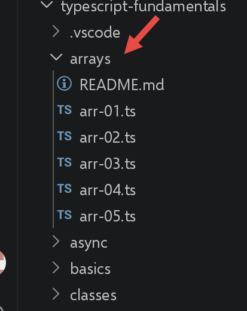
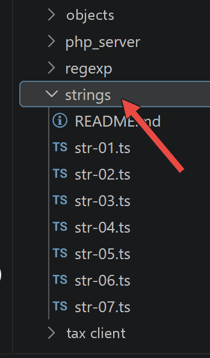
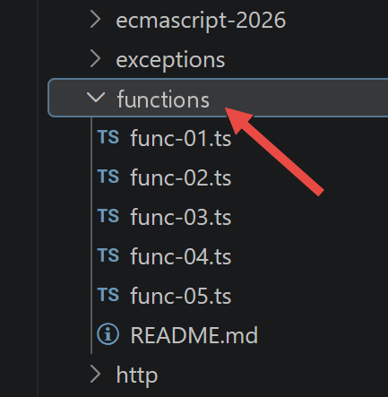
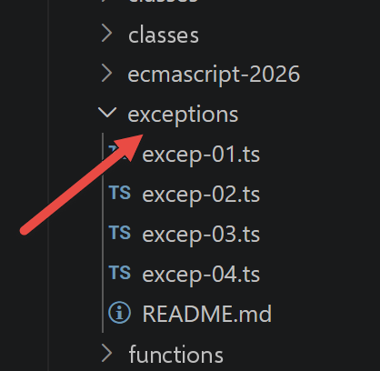
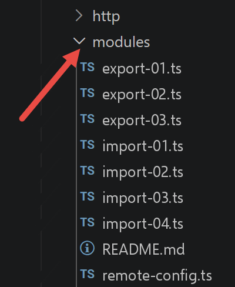
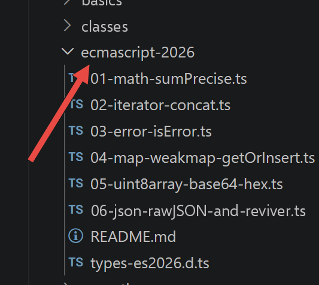

3. 基础知识
3.1. TypeScript 基础
注意：下文中，术语 [TypeScript] 指第 6 版所定义的语言，即 ECMAScript 2026 的带类型超集。
本章的脚本位于项目的 [basics] 文件夹中。

3.1.1. [basics-01] 脚本
该脚本使用原始 JavaScript 课程中的入门示例，并将其翻译为带类型的 TypeScript：
| /* eslint-disable no-constant-condition */
'use strict';
// 这是一条注释
// 常量
const name: string = "dupont";
// 屏幕显示
console.log("name : ", name);
// 包含不同类型元素的数组
// [any]，因为这个数组有意混合了多种类型（演示用）
const array: any[] = ["one", "two", 3, 4];
// 其元素个数
let n: any = array.length;
// 循环
for (let i = 0; i < n; i++) {
console.log("array[", i, "] = ", array[i]);
}
// 用数组的内容初始化 2 个变量
let [string1, string2]: string[] = ["string1", "string2"];
// 连接这 2 个字符串
const string3 = string1 + string2;
// 显示结果
console.log([string1, string2, string3]);
// 使用函数
display(string1);
// 可以获知变量的类型
displayType("n", n);
displayType("string1", string1);
displayType("array", array);
// 变量的类型在执行过程中可以改变
// 上面 [n] 的类型是 [any]：正是这一点让 TypeScript
// 像 JavaScript 一样接受这种中途的重新赋值
n = "has changed";
displayType("n", n);
// 函数可以返回一个结果
let res1: any = f1(4);
console.log("res1=", res1);
// 函数可以返回一个值数组
let res2: any, res3: any;
[res1, res2, res3] = f2();
console.log("(res1,res2,res3)=", [res1, res2, res3]);
// 我们本可以用一个数组来获取这些值
let t: any[] = f2();
for (let i = 0; i < t.length; i++) {
console.log("t[", i, "]=", t[i]);
}
// 一些测试
for (let i = 0; i < t.length; i++) {
// 只显示字符串
if (typeof (t[i]) === "string") {
console.log("t[", i, "]=", t[i]);
}
}
// 比较运算符 == 和 ===
if ("2" == (2 as any)) {
console.log("with the == operator, the string 2 is equal to the integer 2");
} else {
console.log("with the == operator, the string 2 is not equal to the integer 2");
}
if (("2" as any) === 2) {
console.log("with the === operator, the string 2 is equal to the integer 2");
} else {
console.log("with the === operator, the string 2 is not equal to the integer 2");
}
// 其他测试
for (let i = 0; i < t.length; i++) {
// 只显示大于 10 的整数
if (typeof (t[i]) === "number" && Math.floor(t[i]) === t[i] && t[i] > 10) {
console.log("t[", i, "]=", t[i]);
}
}
// while 循环
t = [8, 5, 0, -2, 3, 4];
let i = 0;
let sum = 0;
while (i < t.length && t[i] > 0) {
console.log("t[", i, "]=", t[i]);
sum += t[i];
i++;
}
console.log("sum=", sum);
// 程序结束，因为没有更多可执行的代码了
//显示
//----------------------------------
function display(str: string): void {
// 显示 str
console.log("string=", str);
}
//displayType
//----------------------------------
function displayType(name: string, variable: unknown): void {
// 显示变量的类型
console.log("type[variable ", name, "]=", typeof (variable));
}
//----------------------------------
function f1(param: number): number {
// 给 param 加 10
return param + 10;
}
//----------------------------------
function f2(): any[] {
// 返回 3 个值
return ["one", 0, 100];
}
|
我们来逐段解读这段代码：
- 第 5 行：[const name: string = "dupont"] ——在 TypeScript 中，可以在变量名 之后添加
type 来显式标注其类型。这里，name 在整个程序中保证是一个字符串；
- 第 10 行：[const array: any[] = ...] ——这个数组有意混合了字符串和数字。
any[] 类型告诉 TypeScript 不要检查元素的类型：这是一个显式的选择，有别于省略类型标注（strict 模式禁止后者）；
- 第 12 行：[let n: any = array.length] ——
n 的类型为 any ，因为稍后（第 32 行）在先被赋予一个数字之后，它又被重新赋予一个字符串。在 JavaScript 中，变量可以随意改变类型；而在 TypeScript 中，只有用 any 显式允许（或使用联合类型，如 number | string）时才被允许；
- 第 54 行：["2" == (2 as any)] ——默认情况下，TypeScript 禁止使用
== 比较两个类型不兼容的值（字符串和数字）。表达式 (2 as any) 是一个类型断言：我们明确告诉 TypeScript“把这个值当作 any；此处不要检查它的类型”，这特意演示了 == 运算符特有的类型强制转换；
- 第 93 行：函数 [function displayType(name: string, variable: unknown): void] 将其第二个参数的类型指定为
unknown 而不是 any。与 any不同，unknown 禁止在未先检查的情况下使用该值——这里我们只是使用 typeof(variable)，即使对 unknown 也是允许的；
- 第 86–108 行：函数现在具有 显式的返回类型 （: number、: void 等），写在参数列表之后。
我们来运行这个脚本：
npx tsx basics/basics-01.ts
执行结果：
| name : dupont
array[ 0 ] = one
array[ 1 ] = two
array[ 2 ] = 3
array[ 3 ] = 4
[ 'string1', 'string2', 'string1string2' ]
string= string1
type[variable n ]= number
type[variable string1 ]= string
type[variable array ]= object
type[variable n ]= string
res1= 14
(res1,res2,res3)= [ 'one', 0, 100 ]
t[ 0 ]= one
t[ 1 ]= 0
t[ 2 ]= 100
t[ 0 ]= one
with the == operator, the string 2 is equal to the integer 2
with the === operator, the string 2 is not equal to the integer 2
t[ 2 ]= 100
t[ 0 ]= 8
t[ 1 ]= 5
sum= 13
|
3.1.2. 脚本 [basics-02]
脚本 [basics-02] 演示了关键字 [let] 和 [const]的用法：
| 'use strict';
// 要初始化变量，使用 let 或 const
// let 用于变量
let x: number = 4;
x++;
console.log(x);
// const 用于常量
const y: number = 10;
x += y;
// 禁止
y++;
|
- [let] 声明一个值 可以改变 的变量（第 4–5 行）；
- [const] 声明一个值 不能改变 的常量（第 8 行）；
- 第 11 行：尝试用 y 重新赋值常量 y++。这正是 TypeScript 相对于 JavaScript 的真正优势所在。
甚至在执行脚本之前，类型检查就会标出这个错误：
执行结果：
| basics/basics-02.ts(11,1): error TS2588: Cannot assign to 'y' because it is a constant.
|
在原始的 JavaScript 中，这个错误直到运行时才会被发现。我们仍然使用 tsx （它在执行代码之前不进行类型检查，这与 tsc 不同）来运行这个脚本，看看 JavaScript 实际抛出的错误：
npx tsx basics/basics-02.ts
执行结果：
| 5
TypeError: Assignment to constant variable.
at basics/basics-02.ts:11:1
|
重要：tsx 在不进行类型检查的情况下将 TypeScript 转译为 JavaScript（与 Babel 类似），以便在开发期间快速执行。这就是为什么即使该脚本无法通过 tsc 编译，它仍然能运行（并在执行过程中崩溃）。若要在 执行前得到错误通知，请使用 VSCode（它在后台运行 tsc ）或 `npm run check` 命令。
3.1.3. 脚本 [basics-03]
演示全局变量的作用域，全局变量在函数内部可见：
| 'use strict';
// 变量的作用域
let count: number = 1;
function doSomething(): void {
// count 在这里是已知的
console.log("count=", count);
}
// 调用
doSomething();
|
npx tsx basics/basics-03.ts
执行结果：
3.1.4. 脚本 [basics-04]
函数内的局部变量会 隐藏 （遮蔽）同名的全局变量：
| 'use strict';
// 变量的作用域
const count: number = 1;
function doSomething(): void {
// 局部变量隐藏了全局变量
const count = 2;
console.log("count inside function=", count);
}
// 全局变量
console.log("count outside function=", count);
// 局部变量
doSomething();
|
npx tsx basics/basics-04.ts
执行结果：
| count outside function= 1
count inside function= 2
|
3.1.5. 脚本 [basics-05]
局部变量（函数内的 const count ）在该函数之外 不可见：
| 'use strict';
// 变量的作用域
function doSomething(): void {
// 函数内的局部变量
const count = 2;
console.log("count inside function=", count);
}
// 这里 count 是未知的
console.log("count outside function=", count);
doSomething();
|
在这里，TypeScript 同样在编译时就检测到了问题——无需运行脚本就能发现：
执行结果：
| basics/basics-05.ts(9,40): error TS2304: Cannot find name 'count'.
|
而使用 tsx 运行时：
npx tsx basics/basics-05.ts
执行结果：
| ReferenceError: count is not defined
at basics/basics-05.ts:9:40
|
3.1.6. 脚本 [basics-06]
该脚本将块级作用域（[let]、[const]）与没有块级作用域的情况（[var]）进行比较：
| 'use strict';
// [let] 关键字定义块级作用域变量
{
// 变量 [count] 只在这个块中可知
let count: number = 1;
console.log("count=", count);
}
// 这里变量 [count] 是未知的
count++;
// [const] 关键字定义块级作用域变量
{
// 变量 [count2] 只在这个块中可知
const count2: number = 1;
console.log("count=", count2);
}
// 这里变量 [count2] 是未知的
count2++;
// [var] 关键字不定义块级作用域变量
{
// 变量 [count3] 将在全局范围内可知
var count3: number = 1;
console.log("count=", count3);
}
// 这里变量 [count3] 是已知的
count3++;
|
- 在块 [let] 或 [const] 内用 { } 声明的变量只在该块内存在；
- 用 [var] 声明的变量会忽略块：它在包围它的整个函数（或脚本）中都保持可见——这是 2015 年 ECMAScript 之前唯一的行为，也是许多 bug 的根源，因此建议始终优先使用 [let]/[const]。
编译：
执行结果：
| basics/basics-06.ts(9,1): error TS2552: Cannot find name 'count'. Did you mean 'count3'?
basics/basics-06.ts(18,1): error TS2552: Cannot find name 'count2'. Did you mean 'count3'?
|
执行（脚本在遇到第一个错误时停止，位于 count）：
npx tsx basics/basics-06.ts
执行结果：
| count= 1
ReferenceError: count is not defined
at basics/basics-06.ts:9:1
|
3.1.7. 脚本 [basics-07]
主要 TypeScript 类型概览：
| 'use strict';
// jS 数据类型
const var1: number = 10;
const var2: string = "abc";
const var3: boolean = true;
const var4: number[] = [1, 2, 3];
const var5: { name: string } = {
name: 'axèle'
};
const var6: () => number = function () {
return +3;
}
// 显示各种类型
console.log("typeof(var1)=", typeof (var1));
console.log("typeof(var2)=", typeof (var2));
console.log("typeof(var3)=", typeof (var3));
console.log("typeof(var4)=", typeof (var4));
console.log("typeof(var5)=", typeof (var5));
console.log("typeof(var6)=", typeof (var6));
|
- [var5: { name: string }] ——一个 内联对象类型：对象的预期形态直接在花括号内描述，无需声明单独的 接口；
- [var6: () => number] ——一个 函数类型：不带参数、返回一个 数字的函数；
- 在运行时，
typeof 仍然是 JavaScript 的 typeof（它忽略类型标注，类型标注只存在于编译期，之后就消失了）：这就是为什么 typeof(var4)（一个数组）和 typeof(var5) （一个对象）都返回 "object"。
npx tsx basics/basics-07.ts
执行结果：
| typeof(var1)= number
typeof(var2)= string
typeof(var3)= boolean
typeof(var4)= object
typeof(var5)= object
typeof(var6)= function
|
3.1.8. 脚本 [basics-08]
隐式和显式类型转换仍与 JavaScript 中所示相同（TypeScript 不改变执行行为）：
| 'use strict';
// 隐式类型转换
// 类型 -> bool
console.log("---------------[Implicit conversion to a boolean]------------------------------");
showBool("abcd");
showBool("");
showBool([1, 2, 3]);
showBool([]);
showBool(null);
showBool(0.0);
showBool(0);
showBool(4.6);
showBool({});
showBool(undefined);
// [any]，因为这个函数有意接受任何类型的输入
function showBool(data: any): void {
// 在下面的测试中，数据会被自动转换为布尔值
console.log("[data=", data, "], [type(data)]=", typeof (data), "[boolean value(data)]=", data ? true : false);
}
// 隐式转换为数值类型
console.log("---------------[Implicit conversion to a number]------------------------------");
showNumber("12");
showNumber("45.67");
showNumber("abcd");
function showNumber(data: any): void {
// data + 1 行不通，因为 jS 此时执行的是字符串连接而不是加法
const number = data * 1;
console.log("[data=", data, "], [type(data)]=", typeof (data), "[number]=", number, "[type(number)]=", typeof (number));
}
// 显式转换为布尔值
console.log("---------------[Explicit conversion to a boolean]------------------------------");
showBool2("abcd");
showBool2("");
showBool2([1, 2, 3]);
showBool2([]);
showBool2(null);
showBool2(0.0);
showBool2(0);
showBool2(4.6);
showBool2({});
showBool2(undefined);
function showBool2(data: any): void {
// 在下面的测试中，数据被显式转换为布尔值
console.log("[", data, "], [type(data)]=", typeof (data), "[boolean value(data)]=", Boolean(data));
}
// 显式转换为 Number
console.log("---------------[Explicit conversion to a number]------------------------------");
showNumber2("12.45");
showNumber2(67.8);
showNumber2(true);
showNumber2(null);
function showNumber2(data: any): void {
const number = Number(data);
console.log("[data=", data, "], [type(data)]=", typeof (data), "[number]=", number, "[type(number)]=", typeof (number));
}
// 转换为 String
console.log("---------------[Explicit conversion to a string]------------------------------");
showString(5);
showString(6.7);
showString(false);
showString(null);
function showString(data: any): void {
const str = String(data);
console.log("[data=", data, "], [type(data)]=", typeof (data), "[string]=", str, "[type(string)]=", typeof (str));
}
// 一些出乎意料的隐式转换
console.log("---------------[Other cases]------------------------------");
const string1: string = '1000.78';
// 默认进行字符串连接
const data1 = string1 + 1.034;
console.log("data1=", data1, "type=", typeof (data1));
const data2 = 1.034 + string1;
console.log("data2=", data2, "type=", typeof (data2));
// 显式转换为数字
const data3 = Number(string1) + 1.034;
console.log("data3=", data3, "type=", typeof (data3));
// true 被转换为数字 1
const data4 = (true as any) * 1.18;
console.log("data4=", data4, "type=", typeof (data4));
// false 被转换为数字 0
const data5 = (false as any) * 1.18;
console.log("data5=", data5, "type=", typeof (data5));
|
- 该脚本中的所有函数都将其
data 参数 声明为 any：这是有意为之，因为目的正是展示 同一个 函数在处理类型迥异的值（字符串、数组、null、undefined等）时的表现；
- [Boolean(data)]、[Number(data)]和 [String(data)] 都是 显式转换——始终比隐式转换更可取，因为它们更可预测、更易读；
- 最后一个代码块：
string1 + 1.034 得到 字符串拼接 （任一侧带有字符串的 + 运算符 优先进行拼接），而 Number(string1) + 1.034 得到 数值相加。
npx tsx basics/basics-08.ts
执行结果：
| ---------------[Implicit conversion to a boolean]------------------------------
[data= abcd ], [type(data)]= string [boolean value(data)]= true
[data= ], [type(data)]= string [boolean value(data)]= false
[data= [ 1, 2, 3 ] ], [type(data)]= object [boolean value(data)]= true
[data= [] ], [type(data)]= object [boolean value(data)]= true
[data= null ], [type(data)]= object [boolean value(data)]= false
[data= 0 ], [type(data)]= number [boolean value(data)]= false
[data= 0 ], [type(data)]= number [boolean value(data)]= false
[data= 4.6 ], [type(data)]= number [boolean value(data)]= true
[data= {} ], [type(data)]= object [boolean value(data)]= true
[data= undefined ], [type(data)]= undefined [boolean value(data)]= false
---------------[Implicit conversion to a number]------------------------------
[data= 12 ], [type(data)]= string [number]= 12 [type(number)]= number
[data= 45.67 ], [type(data)]= string [number]= 45.67 [type(number)]= number
[data= abcd ], [type(data)]= string [number]= NaN [type(number)]= number
---------------[Explicit conversion to a boolean]------------------------------
[ abcd ], [type(data)]= string [boolean value(data)]= true
[ ], [type(data)]= string [boolean value(data)]= false
[ [ 1, 2, 3 ] ], [type(data)]= object [boolean value(data)]= true
[ [] ], [type(data)]= object [boolean value(data)]= true
[ null ], [type(data)]= object [boolean value(data)]= false
[ 0 ], [type(data)]= number [boolean value(data)]= false
[ 0 ], [type(data)]= number [boolean value(data)]= false
[ 4.6 ], [type(data)]= number [boolean value(data)]= true
[ {} ], [type(data)]= object [boolean value(data)]= true
[ undefined ], [type(data)]= undefined [boolean value(data)]= false
---------------[Explicit conversion to a number]------------------------------
[data= 12.45 ], [type(data)]= string [number]= 12.45 [type(number)]= number
[data= 67.8 ], [type(data)]= number [number]= 67.8 [type(number)]= number
[data= true ], [type(data)]= boolean [number]= 1 [type(number)]= number
[data= null ], [type(data)]= object [number]= 0 [type(number)]= number
---------------[Explicit conversion to a string]------------------------------
[data= 5 ], [type(data)]= number [string]= 5 [type(string)]= string
[data= 6.7 ], [type(data)]= number [string]= 6.7 [type(string)]= string
[data= false ], [type(data)]= boolean [string]= false [type(string)]= string
[data= null ], [type(data)]= object [string]= null [type(string)]= string
---------------[Other cases]------------------------------
data1= 1000.781.034 type= string
data2= 1.0341000.78 type= string
data3= 1001.814 type= number
data4= 1.18 type= number
data5= 0 type= number
|
3.1.9. 脚本 [basics-09]
[2019 年以来的新特性] 该脚本展示了 ECMAScript 2020–2021 中引入的运算符，它们现在非常常用：
| 'use strict';
// ========================================================================
// [2019 年以来的新内容] 一些日常广泛使用的现代运算符
// ========================================================================
// ------------------------------------------------------------------------
// 1) 空值合并运算符 [??] (ECMAScript 2020)
// ------------------------------------------------------------------------
// 使用 [||] 时，“假值”（0、""、false、NaN 等）会触发默认值，
// 而这并不总是我们想要的
const quantity1: number = 0;
console.log("with || : quantity1 || 10 =", quantity1 || 10); // -> 10（有 bug！0 仍然是一个有效的数量）
// [??] 仅当值为 null 或 undefined 时才触发默认值
console.log("with ?? : quantity1 ?? 10 =", quantity1 ?? 10); // -> 0（正确）
const quantity2: number | null = null;
console.log("quantity2 ?? 10 =", quantity2 ?? 10); // -> 10（quantity2 为 null）
const quantity3: number | undefined = undefined;
console.log("quantity3 ?? 10 =", quantity3 ?? 10); // -> 10（quantity3 为 undefined）
// ------------------------------------------------------------------------
// 2) 可选链 [?.] (ECMAScript 2020)
// ------------------------------------------------------------------------
// 2020 年之前，要安全地访问深层属性，必须
// 逐层检查：if (person && person.address && person.address.city) ...
// 公共接口：[address] 是可选的（person2 没有地址）
interface PersonWithOptionalAddress {
name: string;
address?: { city: string };
}
const person1: PersonWithOptionalAddress = {
name: "Dupont",
address: {
city: "Nantes"
}
};
const person2: PersonWithOptionalAddress = {
name: "Martin"
// 没有地址！
};
// 只要某一步为 null 或 undefined，[?.] 就会停止求值并返回 [undefined]，
// 而不是抛出“Cannot read properties of undefined”错误
console.log("person1 city =", person1.address?.city);
console.log("person2 city =", person2.address?.city); // -> undefined，没有错误
// 可以组合使用 [?.] 和 [??] 来提供回退值
console.log("person2 city (with default) =", person2.address?.city ?? "unknown city");
// [?.] 也适用于方法调用……
interface ObjectWithMethod {
sayHello(): string;
sayGoodbye?(): string;
}
const objectWithMethod: ObjectWithMethod = {
sayHello() {
return "hello!";
}
};
console.log("existing method call :", objectWithMethod.sayHello?.());
console.log("missing method call :", objectWithMethod.sayGoodbye?.()); // -> undefined，没有错误
// ……以及数组元素的访问
const arrayOrNull: number[] | null = null;
console.log("element of a missing array :", arrayOrNull?.[0]); // -> undefined
// ------------------------------------------------------------------------
// 3) 逻辑赋值运算符 [||=]、[&&=]、[??=] (ECMAScript 2021)
// ------------------------------------------------------------------------
// 这些运算符将逻辑判断和赋值合并在一个表达式中
// [a ??= b] 等价于 [a = a ?? b]：仅当 a 为 null/undefined 时才赋值 b
interface Configuration {
delay: number;
page?: number;
}
const config: Configuration = { delay: 0, page: undefined };
config.delay ??= 1000; // delay 已经是 0（有效值）-> 保持不变
config.page ??= 1; // page 为 undefined -> 变为 1
console.log("config after ??= :", config);
// [a ||= b] 等价于 [a = a || b]：当 a 为“假值”（0、""、null、undefined、false 等）时赋值 b
let displayedMessage: string = "";
displayedMessage ||= "default message";
console.log("displayedMessage after ||= :", displayedMessage);
// [a &&= b] 等价于 [a = a && b]：仅当 a 已经是“真值”时才赋值 b
interface LoggedInUser {
name: string;
loggedIn?: boolean;
}
let loggedInUser: LoggedInUser | null = { name: "Ana" };
loggedInUser &&= { ...loggedInUser, loggedIn: true };
console.log("loggedInUser after &&= :", loggedInUser);
// ------------------------------------------------------------------------
// 4) 数字分隔符 [_] (ECMAScript 2021)
// ------------------------------------------------------------------------
// 纯粹是视觉上的：让源代码中的大数字更易读
const oneMillion: number = 1_000_000;
const bankCard: bigint = 1234_5678_9012_3456n; // 这里与 BigInt 结合使用（见下文）
console.log("oneMillion =", oneMillion);
console.log("bankCard =", bankCard);
// ------------------------------------------------------------------------
// 5) [BigInt] 类型 (ECMAScript 2020)
// ------------------------------------------------------------------------
// JavaScript 的 [number] 类型在超过约 2^53 之后会丢失精度
console.log("Number.MAX_SAFE_INTEGER =", Number.MAX_SAFE_INTEGER);
console.log("Number.MAX_SAFE_INTEGER + 1 =", Number.MAX_SAFE_INTEGER + 1);
console.log("Number.MAX_SAFE_INTEGER + 2 =", Number.MAX_SAFE_INTEGER + 2); // -> 与 +1 的结果相同，不精确！
// [BigInt] 以末尾的 [n] 书写，或用 BigInt(...) 构造
const bigNumber1: bigint = 9007199254740993n;
const bigNumber2: bigint = BigInt("9007199254740993");
console.log("bigNumber1 =", bigNumber1, ", type =", typeof (bigNumber1));
console.log("bigNumber1 === bigNumber2 :", bigNumber1 === bigNumber2);
// BigInt 和 number 不能在计算中直接混用
try {
console.log((bigNumber1 as any) + 1); // 会引发 [TypeError] 错误
} catch (error: any) {
console.log("expected error :", error.message);
}
// 需要进行显式转换
console.log("bigNumber1 + 1n =", bigNumber1 + 1n);
|
我们来讨论最重要的新特性：
- [??]、空值合并 （ECMAScript 2020）：与 [||]对任何“假”值（0、""、false等）都返回其默认值不同，[??] 仅当值为 null 或 undefined 时才触发。对于可以合法地取值为 0的数量，这是正确的选择；
- [?.]、可选链 （ECMAScript 2020）：一旦中间某一步是
null 或 undefined，就停止求值并返回 undefined，而不是抛出错误。也适用于方法调用（object.method?.()）以及索引访问（array?.[0]）；
- [||=]、[&&=]、[??=]，即 逻辑赋值运算符（ECMAScript 2021）：将逻辑判断和赋值合并为一个表达式（a ??= b 等价于 a = a ?? b）；
- 数字分隔符 1_000_000 （ECMAScript 2021）：纯粹是视觉上的，使源代码中的大数字更易读；
- [BigInt] 类型（ECMAScript 2020），以末尾的 “n” 表示（9007199254740993n）：与
number 不同，它在超过 Number.MAX\_SAFE\_INTEGER 之后不会丢失精度。BigInt 和 number 不能直接混合用于计算，正如脚本中的 try/catch 块所示。
npx tsx basics/basics-09.ts
执行结果：
| with || : quantity1 || 10 = 10
with ?? : quantity1 ?? 10 = 0
quantity2 ?? 10 = 10
quantity3 ?? 10 = 10
person1 city = Nantes
person2 city = undefined
person2 city (with default) = unknown city
existing method call : hello!
missing method call : undefined
element of a missing array : undefined
config after ??= : { delay: 0, page: 1 }
displayedMessage after ||= : default message
loggedInUser after &&= : { name: 'Ana', loggedIn: true }
oneMillion = 1000000
bankCard = 1234567890123456n
Number.MAX_SAFE_INTEGER = 9007199254740991
Number.MAX_SAFE_INTEGER + 1 = 9007199254740992
Number.MAX_SAFE_INTEGER + 2 = 9007199254740992
bigNumber1 = 9007199254740993n , type = bigint
bigNumber1 === bigNumber2 : true
expected error : Cannot mix BigInt and other types, use explicit conversions
bigNumber1 + 1n = 9007199254740994n
|
3.1.10. 结论
我们已经介绍了 TypeScript 类型系统的基础知识：变量、函数参数和返回值的类型标注；any 和 unknown 类型；该语言主要的现代运算符（??、?., ||=/&&=/??=）；以及 BigInt 类型。下一章介绍数组。
3.2. 数组
本章的脚本位于项目的 [arrays] 文件夹中：

3.2.1. 脚本 [arr-01]
下面的脚本演示了 TypeScript/JavaScript 数组的一个关键特性：它们是 按引用操作的对象 （通过指针），而不是每次赋值时都会被复制的数据。
| 'use strict';
// 数组是通过其地址来处理的对象
const arr1: number[] = [1, 2, 3];
// 地址的复制
const arr2: number[] = arr1;
// arr1 和 arr2 指向同一个数组
console.log("arr1===arr2 :", arr1 === arr2);
// 无论通过 arr1 还是 arr2，都可以修改该数组
arr2[1] = 10;
console.log("arr1=", arr1);
console.log("arr2=", arr2);
|
执行结果：
| arr1===arr2 : true
arr1= [ 1, 10, 3 ]
arr2= [ 1, 10, 3 ]
|
- arr1===arr2 的求值结果为 true：两个变量指向内存中的 同一个 数组；
- 因此，通过
arr2 修改数组，也会改变通过 arr1看到的内容——这是 arr1 和 arr2 引用同一份数据的直接结果。
3.2.2. 脚本 [arr-02]
该脚本表明，TypeScript 数组没有固定的大小，其行为更像一个动态索引列表，而不是传统编译型语言中的数组：
| 'use strict';
// 数组
// [any]，因为这个数组将包含空位和不同类型的值
const arr: any[] = [];
console.log("arr=", arr, ", length=[", arr.length, "]");
console.log("-------------------------------");
// 初始化一个元素
arr[3] = 100;
arr[1] = "eight";
// 数组
console.log("arr=", arr, ", length=[", arr.length, "]");
console.log("-------------------------------");
// toString
console.log("arr.toString=[", arr.toString(), "]");
console.log("-------------------------------");
// 数组的键是它的索引
for (let key of arr.keys()) {
console.log("key=[", key, "], value=[", arr[key], "]");
}
console.log("-------------------------------");
// 数组的值
for (let value of arr.values()) {
console.log("value=[", value, "]");
}
|
- 第 5 行：const arr: any[] = [] ——一个空数组，类型为
any[] ，因为它将有意包含“空位”；
- 第 9–10 行：即使元素 0、1 和 2 尚不存在，也可以初始化第 3 个元素——它们会变成“空位”（empty items），尽管它们常常显示得很相似，但与
undefined 是不同的；
- 第 18–20 行：keys() 和 values() 方法返回 迭代器，可以使用 for...of遍历。
执行结果：
| arr= [] , length=[ 0 ]
-------------------------------
arr= [ <1 empty item>, 'eight', <1 empty item>, 100 ] , length=[ 4 ]
-------------------------------
arr.toString=[ ,eight,,100 ]
-------------------------------
key=[ 0 ], value=[ undefined ]
key=[ 1 ], value=[ eight ]
key=[ 2 ], value=[ undefined ]
key=[ 3 ], value=[ 100 ]
-------------------------------
value=[ undefined ]
value=[ eight ]
value=[ undefined ]
value=[ 100 ]
|
3.2.3. 脚本 [arr-03]
该脚本演示了操作数组的主要方法：遍历、添加和删除元素。
| 'use strict';
// 数组可以包含不同类型的数据
// [any]，因为这个数组有意混合了多种类型（演示用）
const arr: any[] = [1, 2, "one", "two", true, [10, 20], { prop1: 10, prop2: "abc" }];
// console.log 可以显示数组的内容
show(1);
console.log("arr=", arr);
show(2);
// 使用 foreach 遍历数组
arr.forEach(element => {
console.log("element=", element, typeof (element));
});
show("2b");
// 实现同样功能的另一种语法
arr.forEach(function (element) {
console.log("element=", element, typeof (element));
});
show(3);
// 使用 for 遍历数组
for (let i = 0; i < arr.length; i++) {
console.log("i=", i, "arr[i]=", arr[i]);
}
show(4);
// 修改 arr[i]
arr[5] = [];
// 显示
console.log("arr=", arr);
show(5);
// 删除数组的最后一个元素
let element = arr.pop();
console.log("element=", element, "arr=", arr);
show(6);
// 在数组末尾添加一个元素
arr.push('xyz');
console.log("arr=", arr);
show(7);
// 在数组开头添加一个元素
arr.unshift(1000);
console.log("arr=", arr);
show(8);
// 删除第 1 个元素
element = arr.shift();
console.log("element=", element, "arr=", arr);
show(9);
// 从数组中删除第 2 号元素
element = arr.splice(2, 1);
console.log("element=", element, "arr=", arr);
show(10);
// 从数组中自第 1 号元素起删除两个元素
element = arr.splice(1, 2);
console.log("element=", element, "arr=", arr);
// 函数
function show(param: number | string): void {
console.log("[", param, ":::::::::::::::::::::::::::::::::::::::::::::::::::::::::::::::::: ]");
}
|
- 第 4 行：虽然
arr 被声明 为 const，但它的 内容 可以被修改（第 25 行，arr[5] = []）。常量的是指向数组的指针，而不是数组本身；
- 第 10–12 行：
forEach 遍历数组，并对每个元素调用作为参数传入的函数——这里使用 箭头写法编写：element => { ... }；
- 第 15–17 行：同样的操作，使用传统的 function 语法编写——这两种形式是等价的；
- 方法 pop()、push()、unshift()、shift()和 splice() 会 就地 修改数组（它们有副作用）：这与脚本 arr-05 中看到的“不可变”方法有重要区别。
执行结果（为便于阅读，格式化为一行）：
| [ 1 :::::::::::::::::::::::::::::::::::::::::::::::::::::::::::::::::: ]
arr= [ 1, 2, 'one', 'two', true, [ 10, 20 ], { prop1: 10, prop2: 'abc' } ]
[ 2 :::::::::::::::::::::::::::::::::::::::::::::::::::::::::::::::::: ]
element= 1 number
element= 2 number
element= one string
element= two string
element= true boolean
element= [ 10, 20 ] object
element= { prop1: 10, prop2: 'abc' } object
[ 2b :::::::::::::::::::::::::::::::::::::::::::::::::::::::::::::::::: ]
element= 1 number
element= 2 number
element= one string
element= two string
element= true boolean
element= [ 10, 20 ] object
element= { prop1: 10, prop2: 'abc' } object
[ 3 :::::::::::::::::::::::::::::::::::::::::::::::::::::::::::::::::: ]
i= 0 arr[i]= 1
i= 1 arr[i]= 2
i= 2 arr[i]= one
i= 3 arr[i]= two
i= 4 arr[i]= true
i= 5 arr[i]= [ 10, 20 ]
i= 6 arr[i]= { prop1: 10, prop2: 'abc' }
[ 4 :::::::::::::::::::::::::::::::::::::::::::::::::::::::::::::::::: ]
arr= [ 1, 2, 'one', 'two', true, [], { prop1: 10, prop2: 'abc' } ]
[ 5 :::::::::::::::::::::::::::::::::::::::::::::::::::::::::::::::::: ]
element= { prop1: 10, prop2: 'abc' } arr= [ 1, 2, 'one', 'two', true, [] ]
[ 6 :::::::::::::::::::::::::::::::::::::::::::::::::::::::::::::::::: ]
arr= [ 1, 2, 'one', 'two', true, [], 'xyz' ]
[ 7 :::::::::::::::::::::::::::::::::::::::::::::::::::::::::::::::::: ]
arr= [ 1000, 1, 2, 'one', 'two', true, [], 'xyz' ]
[ 8 :::::::::::::::::::::::::::::::::::::::::::::::::::::::::::::::::: ]
element= 1000 arr= [ 1, 2, 'one', 'two', true, [], 'xyz' ]
[ 9 :::::::::::::::::::::::::::::::::::::::::::::::::::::::::::::::::: ]
element= [ 'one' ] arr= [ 1, 2, 'two', true, [], 'xyz' ]
[ 10 :::::::::::::::::::::::::::::::::::::::::::::::::::::::::::::::::: ]
element= [ 2, 'two' ] arr= [ 1, true, [], 'xyz' ]
|
3.2.4. 脚本 [arr-04]
该脚本介绍了用于转换数组的函数式方法：map、reduce、filter、find、findIndex、indexOf、sort。
| 'use strict';
// 数组操作方法
// 一个数组
const arr: number[] = [];
for (let i = 0; i < 10; i++) {
arr[i] = i * 10;
}
// 显示
console.log("arr=", arr);
// map
const arr2 = arr.map(element => {
return { prop1: element, prop2: element * element }
});
// 显示
console.log("arr=", arr);
console.log("arr2=", arr2);
// 不带初始值的 reduce
const sum = arr.reduce((accumulator, currentValue) => accumulator + currentValue);
console.log("sum arr=", sum);
// 初始值为 10 的 reduce
const sum2 = arr.reduce((accumulator, currentValue) => accumulator + currentValue, 10);
console.log("sum2 arr=", sum2);
// filter
const arr4 = arr.filter((element) => {
return element > 50;
});
console.log("arr4=", arr4);
// find
const element1 = arr.find((element) => (element > 20));
console.log("element1=", element1);
// findIndex
const index1 = arr.findIndex((element) => (element === 20));
console.log("index1 20=", index1);
// indexOf
const index2 = arr.indexOf(30);
console.log("index2 30=", index2);
const index3 = arr.indexOf(31);
console.log("index3 31=", index3);
// lastIndexOf
const index4 = [4, 5, 4, 2].lastIndexOf(4);
console.log("index4 4=", index4);
// 排序
const arr5 = [4, 5, 4, 2].sort();
console.log("arr5=", arr5);
// 反向排序
const arr6 = [4, 5, 4, 2].sort((e1, e2) => {
if (e1 > e2) {
return -1;
}
else if (e1 === e2) {
return 0;
} else {
return +1;
}
});
console.log("arr6=", arr6);
|
- [map] 转换每个元素并返回一个 新 数组——原数组保持不变；
- [reduce] 将元素逐个“累积”为单个结果。其函数的第一个参数（accumulator）是迄今为止累积的结果；第二个参数（currentValue）是当前元素。如果没有初始值（第 20 行），累加器从数组的第一个元素开始；
- [filter] 只保留函数返回“真”值的元素；
- [find] 返回第一个满足条件的元素（或
undefined），而 [findIndex] 返回其索引（或 -1）；
- [sort] 不带参数时按自然顺序排序。通过比较函数 (e1, e2) => ...，您可以完全控制排序：-1 表示 e1 必须排在 e2 之前，+1 表示相反， 0 表示两者相等。
执行结果：
| arr= [ 0, 10, 20, 30, 40, 50, 60, 70, 80, 90 ]
arr= [ 0, 10, 20, 30, 40, 50, 60, 70, 80, 90 ]
arr2= [
{ prop1: 0, prop2: 0 },
{ prop1: 10, prop2: 100 },
{ prop1: 20, prop2: 400 },
{ prop1: 30, prop2: 900 },
{ prop1: 40, prop2: 1600 },
{ prop1: 50, prop2: 2500 },
{ prop1: 60, prop2: 3600 },
{ prop1: 70, prop2: 4900 },
{ prop1: 80, prop2: 6400 },
{ prop1: 90, prop2: 8100 }
]
sum arr= 450
sum2 arr= 460
arr4= [ 60, 70, 80, 90 ]
element1= 30
index1 20= 2
index2 30= 3
index3 31= -1
index4 4= 2
arr5= [ 2, 4, 4, 5 ]
arr6= [ 5, 4, 4, 2 ]
|
3.2.5. 脚本 [arr-05]
[2019 年以来的新特性] 该脚本演示了 2022 年至 2023 年间引入的新数组方法：
| 'use strict';
// ========================================================================
// [2019 年以来的新内容] 新的数组方法
// ========================================================================
// ------------------------------------------------------------------------
// 1) at(index) (ECMAScript 2022)
// ------------------------------------------------------------------------
// 以前，要访问数组的最后一个元素，我们写 arr[arr.length - 1]
const arr: number[] = [10, 20, 30, 40, 50];
console.log("arr[arr.length - 1] =", arr[arr.length - 1]); // 旧写法
console.log("arr.at(-1) =", arr.at(-1)); // -> 最后一个元素，更易读
console.log("arr.at(-2) =", arr.at(-2)); // -> 倒数第二个元素
console.log("arr.at(0) =", arr.at(0)); // -> 等价于 arr[0]
// .at 同样适用于字符串
console.log("'hello'.at(-1) =", "hello".at(-1));
// ------------------------------------------------------------------------
// 2) findLast() 和 findLastIndex() (ECMAScript 2023)
// ------------------------------------------------------------------------
// 与 find() / findIndex() 对称
const numbers: number[] = [5, 12, 8, 21, 3, 17];
const lastEven = numbers.findLast(n => n % 2 === 0);
console.log("last even number =", lastEven); // -> 8
const lastEvenIndex = numbers.findLastIndex(n => n % 2 === 0);
console.log("index of the last even number =", lastEvenIndex);
// ------------------------------------------------------------------------
// 3) “不可变”方法 (ECMAScript 2023)
// ------------------------------------------------------------------------
// sort()、reverse()、splice() 会修改原数组（副作用）- 参见 arr-04.js
// 与之对应的“to...”方法返回一个新数组，并保持原数组不变
// [(number | string)[]]，因为下文的 toSpliced() 会向这个数组插入字符串
const original: (number | string)[] = [4, 5, 4, 2];
// toSorted：类似 sort()，但不修改原数组
const sorted = original.toSorted();
console.log("original =", original, " (unchanged)");
console.log("sorted =", sorted);
// toReversed：类似 reverse()，但不修改原数组
const reversed = original.toReversed();
console.log("reversed =", reversed, ", original still =", original);
// toSpliced：类似 splice()，但不修改原数组
// toSpliced(起始索引, 要删除的个数, ...要插入的元素)
const modified: (number | string)[] = original.toSpliced(1, 2, "a", "b", "c");
console.log("modified =", modified, ", original still =", original);
// with(index, value)：返回一个只替换了单个元素的数组副本
const replaced = original.with(0, 999);
console.log("replaced =", replaced, ", original still =", original);
// ------------------------------------------------------------------------
// 为什么有用：这些方法避免了副作用，这一点
// 在前端框架（React、Angular、Vue……）中尤其受欢迎，
// 因为在这些框架中我们经常需要生成新的状态而不修改旧状态。
// ------------------------------------------------------------------------
|
- [at(index)] （ES2022）：安全且可读的访问方式，包括使用负索引（at(-1) = 最后一个元素）——比 arr[arr.length - 1]更易读；
- [findLast]/[findLastIndex] （ES2023）：与 find/findIndex相同，但返回最后一个满足条件的元素；
- [toSorted]、[toReversed]、[toSpliced]、[with] （ES2023）：不可变版本，分别对应 sort、reverse、splice和按索引赋值——它们返回一个 新 数组而不修改原数组，这与 arr-03 脚本中的方法不同。在前端框架（React、Vue 等）中非常有用，因为在这些框架中需要生成新状态而不修改旧状态。
执行结果：
| arr[arr.length - 1] = 50
arr.at(-1) = 50
arr.at(-2) = 40
arr.at(0) = 10
'hello'.at(-1) = o
last even number = 8
index of the last even number = 2
original = [ 4, 5, 4, 2 ] (unchanged)
sorted = [ 2, 4, 4, 5 ]
reversed = [ 2, 4, 5, 4 ] , original still = [ 4, 5, 4, 2 ]
modified = [ 4, 'a', 'b', 'c', 2 ] , original still = [ 4, 5, 4, 2 ]
replaced = [ 999, 5, 4, 2 ] , original still = [ 4, 5, 4, 2 ]
|
3.2.6. 结论
本章的关键结论是：数组是 通过指针引用的对象，没有固定大小，并配备了丰富的方法——其中一些会就地修改数组（push、sort 等），而另一些较新的方法则始终返回新数组（toSorted、with 等）。下一章介绍字面量对象。
3.3. 字面量对象
这里，我们将“字面量对象”理解为直接在代码中定义的对象，以区别于 [class] 的实例（将在“类”一章中讨论）。本章的脚本位于项目的 [objects] 文件夹中：

3.3.1. 脚本 [obj-01]
与数组一样，对象也是通过指针访问的。在 TypeScript 中，在动态地向对象添加属性之前，还必须 使用 接口 来定义 该对象的 结构 。
| 'use strict';
// 一个空对象
// 接口：我们预先声明将要动态添加的属性，
// 因为 TypeScript（与 JavaScript 不同）需要知道对象的形状
interface Obj1 {
prop1?: string;
prop2?: number[];
prop3?: boolean;
[key: string]: unknown;
}
const obj1: Obj1 = {};
// 对象的属性可以动态创建
obj1.prop1 = "abcd";
console.log('obj1=', obj1);
// 另一个属性
obj1.prop2 = [1, 2, 3];
console.log("obj1=", obj1);
// 使用不同写法的另一个属性
obj1['prop3'] = true;
console.log("obj1=", obj1);
// obj1 是对该对象的引用（指针），而不是对象本身
const obj2: Obj1 = obj1;
// obj2 和 obj1 指向同一个对象
obj2.prop1 = "xyzt";
console.log("obj1=", obj1);
console.log("obj2=", obj2);
// 属性可以是变量
const var1: string = 'prop1';
console.log('prop1=', obj1[var1]);
|
- 第 5–9 行：[interface] Obj1 预先声明了将要添加的属性（prop1、prop2、prop3，均通过 ? 设为可选）。这一行 [key: string]: unknown 是一个 索引签名：它还允许添加任何其他未预先指定的属性；
- 第 19 行：obj1.prop3 也可以写成 obj1['prop3']——当属性名实际上是某个变量的值时（第 28–29 行），这种写法必不可少；
- 第 22–25 行：
const obj2: Obj1 = obj1 是一次 引用复制，而不是对象的复制——因此，修改 obj2 也会改变通过 obj1 看到的内容，与数组的情况一样。
npx tsx objects/obj-01.ts
执行结果：
| obj1= { prop1: 'abcd' }
obj1= { prop1: 'abcd', prop2: [ 1, 2, 3 ] }
obj1= { prop1: 'abcd', prop2: [ 1, 2, 3 ], prop3: true }
obj1= { prop1: 'xyzt', prop2: [ 1, 2, 3 ], prop3: true }
obj2= { prop1: 'xyzt', prop2: [ 1, 2, 3 ], prop3: true }
prop1= xyzt
|
3.3.2. 脚本 [obj-02]
该脚本演示了一个多层对象，并介绍了全局对象 [JSON]，它可以将对象转换为字符串，反之亦然。
| 'use strict';
// 多层对象
interface PersonWithFamily {
firstName: string;
age: number;
father: { firstName: string; age: number };
mother: { firstName: string; age: number };
}
const person: PersonWithFamily = {
firstName: "martin",
age: 12,
father: {
firstName: "paul",
age: 45
},
mother: {
firstName: "micheline",
age: 42
}
}
// 访问属性
console.log("person first name=", person.firstName);
console.log("mother first name=", person.mother.firstName);
person.mother.age = 40;
console.log("mother age=", person.mother.age);
// console.log 可以显示对象
console.log("person=", person);
console.log("mother=", person.mother);
// 我们也可以显示对象的 jSON 字符串
let json: string = JSON.stringify(person);
console.log("jSON=", json);
// 我们可以把 jSON 读回来
let person2: PersonWithFamily = JSON.parse(json);
console.log("father=", person2.father);
|
- 第 3–8 行：[interface] 本身可以包含嵌套的对象类型（father、mother）；
- 第 30 行：[JSON.stringify] 将 TypeScript 对象转换为 JSON 字符串；
- 第 33 行：[JSON.parse] 执行相反的操作——请注意，其结果的类型为 PersonWithFamily，这意味着该 JSON 字符串确实符合这种格式（TypeScript 在运行时不会检查这一点，只在编译时检查）。
npx tsx objects/obj-02.ts
执行结果：
| person first name= martin
mother first name= micheline
mother age= 40
person= {
firstName: 'martin',
age: 12,
father: { firstName: 'paul', age: 45 },
mother: { firstName: 'micheline', age: 40 }
}
mother= { firstName: 'micheline', age: 40 }
jSON= {"firstName":"martin","age":12,"father":{"firstName":"paul","age":45},"mother":{"firstName":"micheline","age":40}}
father= { firstName: 'paul', age: 45 }
|
3.3.3. 脚本 [obj-03]
该脚本介绍了对象属性的 getter 和 setter 的概念：
| 'use strict';
// 对象的 getter 和 setter
interface PersonWithName {
_name?: string;
name: string;
}
const person: PersonWithName = {
// getter
get name() {
console.log("name getter");
return this._name as string;
},
// setter
set name(aName: string) {
console.log("name setter");
this._name = aName;
}
};
// setter
person.name = "Hercule";
// getter
console.log(person.name);
// 对象本身
console.log("person=", person);
// 这并不妨碍直接访问 [_name] 属性
person._name = "xyz";
console.log("person=", person);
|
- 第 3–6 行：[interface] PersonWithName 将 _name 声明为 可选属性（按惯例以下划线为前缀，表示它是一个“私有”属性，尽管 TypeScript 并不阻止对它的访问——真正的封装请参见“类”一章中的 #field ）；
- 第 8–11 行：[getter]——使用
get 关键字而不是 函数——返回 _name 的值；
- 第 13–16 行：[setter]——使用
set 关键字——接收被赋予的值，并可以在存储之前对其进行验证；
- 第 20 行：person.name = "Hercule" 隐式地调用 setter；
- 第 22 行：person.name 隐式地调用 getter；
- 第 26 行：没有任何机制阻止直接访问 _name——按约定实现的封装取决于开发者的自觉。
npx tsx objects/obj-03.ts
执行结果：
| name setter
name getter
Hercule
person= { name: [Getter/Setter], _name: 'Hercule' }
person= { name: [Getter/Setter], _name: 'xyz' }
|
请注意，[console.log] 显示 [Getter/Setter] 以表明 "name" 是由访问器管理的，而不是一个直接的值。
3.3.4. 脚本 [obj-04]
属性名的三种写法、两种访问方式，以及一种简写写法：
| 'use strict';
// 对象的属性名可以是字面量 [name]，用单引号括起来 ['name']
// 或用双引号括起来 ["name"]
interface FullName {
lastName: string;
firstName: string;
}
// 字面量
const obj1: FullName = {
lastName: "martin",
firstName: "jean"
};
console.log("firstName=", obj1.firstName);
// 用单引号括起来
const obj2: FullName = {
'lastName': "martin",
'firstName': "jean"
};
console.log("lastName=", obj2.lastName);
// 用双引号括起来
const obj3: FullName = {
"lastName": "martin",
"firstName": "jean"
};
// 访问 [lastName] 属性的两种可能语法
console.log("lastName=", obj3.lastName);
console.log("lastName=", obj3['lastName']);
// 简写形式，等价于 {obj1:obj1, obj2:obj2}
const obj4 = {
obj1, obj2
}
console.log("obj4=", obj4)
|
- 属性名可以直接按字面书写（name:），用单引号括起来（'name':），或用双引号括起来（"name":）——这三种写法是等价的；
- 第 31 行：obj3.lastName 和 obj3['lastName'] 访问的是同一个属性；
- 第 34–36 行：
const obj4 = { obj1, obj2 } 是 简写写法 ，等价于 { obj1: obj1, obj2: obj2 }——在将现有变量组合成对象时被广泛使用。
npx tsx objects/obj-04.ts
执行结果：
| firstName= jean
lastName= martin
lastName= martin
lastName= martin
obj4= {
obj1: { lastName: 'martin', firstName: 'jean' },
obj2: { lastName: 'martin', firstName: 'jean' }
}
|
3.3.5. 脚本 [obj-05]
对象字面量可以具有 函数类型的属性——这使我们更接近类的概念（属性 + 方法）：
| 'use strict';
// 对象可以具有 [function] 类型的属性
interface PersonWithToString {
firstName: string;
age: number;
father: { firstName: string; age: number };
mother: { firstName: string; age: number };
toString: () => string;
}
const person: PersonWithToString = {
// 属性
firstName: "martin",
age: 12,
father: {
firstName: "paul",
age: 45
},
mother: {
firstName: "micheline",
age: 42
},
// 方法
toString: function () {
return JSON.stringify(this);
}
}
// 用法
console.log("person=", person);
console.log("person.toString=", person.toString());
|
- 第 4 行：[interface] 声明了 toString: () => string——方法的类型被声明为函数属性的类型；
- 第 25 行：在方法内部，[this] 指向对象本身——this.firstName 是该对象的“firstName”属性。
npx tsx objects/obj-05.ts
执行结果：
| person= {
firstName: 'martin',
age: 12,
father: { firstName: 'paul', age: 45 },
mother: { firstName: 'micheline', age: 42 },
toString: [Function: toString]
}
person.toString= {"firstName":"martin","age":12,"father":{"firstName":"paul","age":45},"mother":{"firstName":"micheline","age":42}}
|
3.3.6. 脚本 [obj-06]
该脚本演示了如何在事先不知道属性名的情况下遍历对象的属性：
| 'use strict';
// 对象可以具有 [function] 类型的属性
interface PersonWithToString {
firstName: string;
age: number;
father: { firstName: string; age: number };
mother: { firstName: string; age: number };
toString: () => string;
// 需要索引签名，才能允许下面的动态 for..in 遍历
[key: string]: unknown;
}
let person: PersonWithToString = {
// 属性
firstName: "martin",
age: 12,
father: {
firstName: "paul",
age: 45
},
mother: {
firstName: "micheline",
age: 42
},
// 方法
toString: function () {
return JSON.stringify(this);
}
}
// 用法
console.log(person);
// 属性
console.log("-----------------------");
for (const key in person) {
// eslint-disable-next-line no-prototype-builtins
if (person.hasOwnProperty(key)) {
const element = person[key];
console.log(key, "=", element);
}
}
// 以规避 eslint 警告 (1)
console.log("-----------------------");
for (const key in person) {
if (Object.prototype.hasOwnProperty.call(person, key)) {
const element = person[key];
console.log(key, "=", element);
}
}
// 以规避 eslint 警告 (2)
console.log("-----------------------");
for (const key in person) {
// eslint-disable-next-line no-prototype-builtins
if (person.hasOwnProperty(key)) {
const element = person[key];
console.log(key, "=", element);
}
}
|
- 第 11 行：这里 索引签名 [key: string]: unknown 是 必需的 ，这样 TypeScript 才允许在 for...in循环中动态访问 person[key]；
- 第 35–41 行：
for (const key in person) 遍历属性名。hasOwnProperty 测试会过滤掉所有继承的属性（本脚本中没有，但这是一个应当系统性遵循的良好实践）；
- 该脚本提供了三种等价的写法来实现这个测试——第二种（Object.prototype.hasOwnProperty.call(...)）最稳健，而第三种只是屏蔽了相应的 ESLint 警告。自 2022 年起，Object.hasOwn()方法（见下文脚本 obj-09）使这种选择变得没有必要。
npx tsx objects/obj-06.ts
执行结果：
| {
firstName: 'martin',
age: 12,
father: { firstName: 'paul', age: 45 },
mother: { firstName: 'micheline', age: 42 },
toString: [Function: toString]
}
-----------------------
firstName = martin
age = 12
father = { firstName: 'paul', age: 45 }
mother = { firstName: 'micheline', age: 42 }
toString = [Function: toString]
-----------------------
firstName = martin
age = 12
father = { firstName: 'paul', age: 45 }
mother = { firstName: 'micheline', age: 42 }
toString = [Function: toString]
-----------------------
firstName = martin
age = 12
father = { firstName: 'paul', age: 45 }
mother = { firstName: 'micheline', age: 42 }
toString = [Function: toString]
|
3.3.7. 脚本 [obj-07]
该脚本演示了对象的 解构——一种直接将属性提取到变量中的语法：
| 'use strict';
// 解构
interface FullName {
lastName: string;
firstName: string;
}
// 字面量
const obj1: FullName = {
lastName: "martin",
firstName: "jean"
};
// 将 obj1 解构为变量 [n,p]
const { lastName: n, firstName: p } = obj1;
console.log("n=", n, "p=", p);
// 将 obj1 解构为变量 [n2,p2]
function f({ lastName: n2, firstName: p2 }: FullName): void {
console.log("f-n2=", n2, "f-p2=", p2);
}
f(obj1);
// 将 obj1 解构为变量 [lastName,firstName]
function g({ lastName: lastName, firstName: firstName }: FullName): void {
console.log("g-lastName=", lastName, "g-firstName=", firstName);
}
g(obj1);
// 将 obj1 解构为变量 [lastName,firstName]
// 使用简写形式，等价于 h({lastName:lastName,firstName:firstName})
function h({ lastName, firstName }: FullName): void {
console.log("h-lastName=", lastName, "h-firstName=", firstName);
}
h(obj1);
|
- 第 16 行：const { lastName: n, firstName: p } = obj1 创建两个变量 n 和 p，等价于 const n = obj1.lastName; const p = obj1.firstName;
- 第 19–22、24–27、30–33 行：解构也可以直接用于 函数参数——在 TypeScript/React 中非常常见，用于从配置对象或 props 中提取属性；
- 第 33 行：function h({ lastName, firstName }: FullName) 是 { lastName: lastName, firstName: firstName } 的简写——当创建的变量名与属性名相同时，可以省略它。
npx tsx objects/obj-07.ts
执行结果：
| n= martin p= jean
f-n2= martin f-p2= jean
g-lastName= martin g-firstName= jean
h-lastName= martin h-firstName= jean
|
3.3.8. 脚本 [obj-08]
该脚本演示了如何使用 展开运算符 ... 创建对象的浅拷贝：
| 'use strict'
// 克隆对象
interface FullName {
lastName: string;
firstName: string;
}
const obj1: FullName = {
lastName: "martin",
firstName: "jean"
};
// 使用展开运算符克隆 obj1
const obj2: FullName = { ...obj1 }
// 检查
// obj2 指向 obj1 的一个副本
console.log("obj2===obj1 :", obj1 === obj2)
console.log("obj2=", obj2)
|
npx tsx objects/obj-08.ts
执行结果：
| obj2===obj1 : false
obj2= { lastName: 'martin', firstName: 'jean' }
|
- obj2===obj1 的求值结果为 false：这两个引用 并不指向同一个对象；
- obj2 确实包含 obj1 属性的一份副本——但请注意，正如我们将在下一个脚本中看到的，它只是一份 浅 拷贝。
3.3.9. 脚本 [obj-09]
[2019 年以来的新特性] 该脚本演示了自 2020 年以来引入的三个有用的新增特性：[Object.hasOwn]、[structuredClone]，以及在嵌套对象上将可选链与空值合并结合使用。
| 'use strict';
// ========================================================================
// [2019 年以来的新内容] 对象操作：一些方便的新增功能
// ========================================================================
// ------------------------------------------------------------------------
// 1) Object.hasOwn(object, property) (ECMAScript 2022)
// ------------------------------------------------------------------------
// 以前，要知道某个属性是否直接属于一个对象（而不是
// 通过原型链继承而来），我们这样写：
// object.hasOwnProperty(property) -> 如果对象重新定义了 hasOwnProperty，可能会崩溃
// Object.prototype.hasOwnProperty.call(object, property) -> 正确但冗长（参见 objects/obj-06.js）
// [Object.hasOwn] 简单且无风险地完成这项工作
interface FullName {
lastName: string;
firstName: string;
[key: string]: unknown;
}
const person: FullName = { lastName: "Dupont", firstName: "Jean" };
console.log("Object.hasOwn(person, 'lastName') =", Object.hasOwn(person, "lastName"));
console.log("Object.hasOwn(person, 'age') =", Object.hasOwn(person, "age"));
// 在属性遍历中的典型用法
console.log("-----------------------");
for (const key in person) {
if (Object.hasOwn(person, key)) {
console.log(key, "=", person[key]);
}
}
// ------------------------------------------------------------------------
// 2) structuredClone(object) (自 node 17 起提供的全局 API)
// ------------------------------------------------------------------------
// obj-08.js 展示了使用展开运算符 [...obj] 的浅克隆
// 但展开只会克隆第 1 层：子对象仍然是共享的！
interface PersonWithAddress {
lastName: string;
address: { city: string; postalCode: string };
}
const original: PersonWithAddress = {
lastName: "Dupont",
address: { city: "Nantes", postalCode: "44000" }
};
// 使用展开运算符的浅克隆
const shallowCopy: PersonWithAddress = { ...original };
shallowCopy.address.city = "Angers"; // 也会修改 [original] 的地址！
console.log("shallow copy modified the original :", original.address.city === "Angers");
// 为下一个测试重置
original.address.city = "Nantes";
// [structuredClone] 执行深克隆：所有子对象都会被复制
const deepCopy: PersonWithAddress = structuredClone(original);
deepCopy.address.city = "Angers";
console.log("deep copy did not modify the original :", original.address.city === "Nantes");
console.log("original =", original);
console.log("deepCopy =", deepCopy);
// ------------------------------------------------------------------------
// 3) 对嵌套对象方法使用可选链 + 空值合并
// ------------------------------------------------------------------------
// 在实践中读取部分配置时非常常见的组合
interface AppearanceConfiguration {
appearance?: { theme?: string };
}
function displayTheme(configuration?: AppearanceConfiguration): void {
// 如果 configuration、configuration.appearance 或 configuration.appearance.theme 缺失，
// 我们就回退到 "light"，而不会崩溃
const theme = configuration?.appearance?.theme ?? "light";
console.log("theme =", theme);
}
displayTheme({ appearance: { theme: "dark" } });
displayTheme({ appearance: {} });
displayTheme({});
displayTheme(undefined);
|
- [Object.hasOwn(object, property)] （ES2022）是 object.hasOwnProperty(...) 的更好替代（参见脚本 obj-06）：更易读，而且即使对象本身重新定义了 hasOwnProperty也不会出问题；
- [structuredClone(object)] （自 Node 17 起原生可用）执行 深拷贝：与 obj-08 脚本中只复制第一层的展开语法 { ...obj } 不同，structuredClone 还会复制子对象——无论在哪一层，修改副本都不会修改原对象；
- 函数 displayTheme 结合使用 ?. 和 ?? 来读取多层的、可能不完整的配置，永远不会崩溃，并且有明确的回退值。
npx tsx objects/obj-09.ts
执行结果：
| Object.hasOwn(person, 'lastName') = true
Object.hasOwn(person, 'age') = false
-----------------------
lastName = Dupont
firstName = Jean
shallow copy modified the original : true
deep copy did not modify the original : true
original = { lastName: 'Dupont', address: { city: 'Nantes', postalCode: '44000' } }
deepCopy = { lastName: 'Dupont', address: { city: 'Angers', postalCode: '44000' } }
theme = dark
theme = light
theme = light
theme = light
|
3.3.10. 结论
本章的脚本表明，TypeScript 字面量对象类似于类的实例：您可以定义属性、方法以及 getter/setter——并且额外的好处是有一个 [interface] 在编译时精确描述其形态。它是一个动态对象，可与字典相比，其元素可以是任何类型，包括函数。
3.4. 字符串
本章的脚本位于项目的 [strings] 文件夹中：

3.4.1. 脚本 [str-01]
首先要理解的是，字符串一旦创建，就不能再被修改（它是 不可变的）。有许多方法可以从原字符串创建一个 新 字符串，但原字符串始终保持不变。
| 'use strict';
// 字符串是只读的（不能被修改）
// 一个字符串
const string1: string = "abcd ";
// 类型
console.log("typeof(string1)=", typeof (string1));
// 第 2 号字符
console.log("string1[2]=", string1[2]);
// 会导致错误
// [TypeScript 更新] TypeScript 在编译时检测到该错误：
// 字符串只具有按索引的读取权限
// @ts-expect-error：字符串是只读的
string1[2] = "0";
|
- 第 10 行：string1[2] 读取 字符串的第三个字符（索引从 0 开始）；
- 第 15 行：string1[2] = "0" 尝试进行一次 写操作，TypeScript 在编译时会拒绝它，这要归功于 @ts-expect-error——上方的注释确认该错误是 预期中的 ，其目的正是为了演示这一点。
类型检查：
执行结果：
| strings/str-01.ts(15,1): error TS2540: Cannot assign to '2' because it is a read-only property.
|
使用 tsx 执行（不预先进行类型检查）：
npx tsx strings/str-01.ts
执行结果：
| typeof(string1)= string
string1[2]= c
TypeError: Cannot assign to read only property '2' of string 'abcd '
at strings/str-01.ts:15:10
|
3.4.2. 脚本 [str-02]
字符串可以是两种类型之一：[string] （字面量字符串）或 [object] （[String] 类的实例）：
| 'use strict';
// 字符串可以有两种类型
// 字面量字符串
const string1: string = "abcd ";
// 类型
console.log("typeof(string1)=", typeof (string1));
// String 的实例
// eslint-disable-next-line @typescript-eslint/ban-types：这里 [String]（对象）正是所需的确切类型，而不是 [string]（原始类型）：这恰恰是本演示的主题
const string2: String = new String("xyzt");
// 类型
console.log("typeof(string2)=", typeof (string2));
// 另一种语法（不使用 new）
const string3: string = String("12 34");
// 类型
console.log("typeof(string3)=", typeof (string3));
// [string] 类型和 [object] 类型提供相同的方法，即 String 类的方法
console.log("string1.length=", string1.length);
console.log("string2.length=", string2.length);
|
- 第 6 行：定义字符串的标准方式——string1 的类型将是 string；
- 第 11 行：
new String(...) 创建一个字符串 对象——string2 的类型将是 object。这里，声明的 TypeScript 类型是 String （大写 S），即 *包装对象* 类型，它不同于原始类型 string （小写）；
- 两种类型提供相同的方法——即 String 类的方法。
npx tsx strings/str-02.ts
执行结果：
| typeof(string1)= string
typeof(string2)= object
typeof(string3)= string
string1.length= 5
string2.length= 4
|
3.4.3. 脚本 [str-03]
该脚本演示了字符串中的 变量插值：
| 'use strict';
// 字符串
const string: string = "Introduction to Javascript by example";
// 带变量插值的字符串
const str: string = `[${string}].substr(3, 2)=` + string.substr(3, 2)
console.log(str);
|
- 第 6 行：用反引号（*backticks*，在法语键盘上为 AltGr-7）括起来的字符串可以包含 ${variable} 表达式，这些表达式会被替换为变量的值——这称为模板字符串。
npx tsx strings/str-03.ts
执行结果：
| [Introduction to Javascript by example].substr(3, 2)=ro
|
3.4.4. 脚本 [str-04]
仅靠模板字符串不足以实现精确的格式化（宽度、对齐、小数精度等）。为此，我们使用一个外部包 [sprintf-js]，它复刻了其他语言中大家熟悉的 printf/sprintf 函数。使用 npm install sprintf-js 安装它，即可轻松导入：
| 'use strict';
// 使用外部包来获得 sprintf 函数
import { sprintf } from 'sprintf-js';
// 字符串
const string: string = "Introduction to Javascript by example";
// 方法
console.log(sprintf("[%s].substr(3,2)=[%s]", string, string.substr(3, 2)));
|
背景：2019 年，`import` 语句在 Node.js 中会引发问题（当时 Node.js 尚不原生支持 ECMAScript 模块），需要一个名为 `esm` 的中间包。自 Node 12+ 起不再如此：我们的项目在 "type": "module" 中设置了 package.json，原生使用 import/export ，无需任何额外配置。
npx tsx strings/str-04.ts
执行结果：
| [Introduction to Javascript by example].substr(3,2)=[ro]
|
3.4.5. 脚本 [str-05]
[sprintf] 函数与 C 语言一样，接受以 %引入的“格式”：%s （字符串）、%d （整数）、%f （浮点数）、%j （JSON）、%T （类型）、%t （布尔值），以及宽度和对齐修饰符（%20s、%-20s、%04d等）：
| 'use strict';
// 使用外部包来获得 sprintf 函数
import { sprintf } from 'sprintf-js';
// 字符串
const string: string = "Javascript";
// 字符串
console.log(sprintf("[%s, %%s]=>[%s]", string, string));
console.log(sprintf("[%s, %%20s]=>[%20s]", string, string));
console.log(sprintf("[%s, %%-20s]=>[%-20s]", string, string));
// 整数
console.log(sprintf("[%d, %%d]=>[%d]", 10, 10));
console.log(sprintf("[%d, %%4d]=>[%4d]", 10, 10));
console.log(sprintf("[%d, %%-4d]=>[%-4d]", 10, 10));
console.log(sprintf("[%d, %%04d]=>[%04d]", 10, 10));
// 实数
console.log(sprintf("[%f, %%f]=>[%f]", -10.5, -10.5));
console.log(sprintf("[%f, %%10.2f]=>[%10.2f]", -10.5, -10.5));
console.log(sprintf("[%f, %%-10.2f]=>[%-10.2f]", -10.5, -10.5));
console.log(sprintf("[%f, %%010.3f]=>[%010.3f]", -10.5, -10.5));
// json
console.log(sprintf("person (%%j)=%j", { name: "mathieu", age: 34 }));
// 类型
console.log(sprintf("person type (%%T)=%T", { name: "mathieu", age: 34 }));
// 布尔值
console.log(sprintf("boolean (%%t)=%t", 4 === 4));
|
npx tsx strings/str-05.ts
执行结果：
| [Javascript, %s]=>[Javascript]
[Javascript, %20s]=>[ Javascript]
[Javascript, %-20s]=>[Javascript ]
[10, %d]=>[10]
[10, %4d]=>[ 10]
[10, %-4d]=>[10 ]
[10, %04d]=>[0010]
[-10.5, %f]=>[-10.5]
[-10.5, %10.2f]=>[ -10.50]
[-10.5, %-10.2f]=>[-10.50 ]
[-10.5, %010.3f]=>[-00010.500]
person (%j)={"name":"mathieu","age":34}
person type (%T)=object
boolean (%t)=true
|
3.4.6. 脚本 [str-06]
该脚本列出了 [String] 类最常用的方法：
| 'use strict';
// 使用外部包来获得 sprintf 函数
import { sprintf } from 'sprintf-js';
// 字符串
const string: string = " Introduction to Javascript ";
// 一些方法
// substr(10,2)：从第 10 号字符开始的 2 个字符
console.log(sprintf("[%s].substr(10,2)=[%s]", string, string.substr(10, 2)));
// trim：删除字符串开头和结尾的空白（空白 = \b \t \r \n \f）
console.log(sprintf("[%s].trim()=[%s]", string, string.trim()));
// toLowerCase：转换为小写
console.log(sprintf("[%s].toLowerCase=[%s]", string, string.toLowerCase()));
// toUpperCase：转换为大写
console.log(sprintf("[%s].toUpperCase=[%s]", string, string.toUpperCase()));
// indexOf：所搜索字符串在该字符串中的位置，如果子串不存在则为 -1
console.log(sprintf("[%s].indexOf('Java')=[%s]", string, string.indexOf('Java')));
console.log(sprintf("[%s].trim().indexOf('abcd')=[%s]", string, string.indexOf('abcd')));
// includes：如果所搜索的字符串在该字符串中则为 true
console.log(sprintf("[%s].includes('Java')=[%s]", string, string.includes('Java')));
// length：字符串的长度——它不是方法而是属性
console.log(sprintf("[%s].length=[%s]", string, string.length));
// slice (7,10)：第 7 到第 9 号字符组成的字符串
console.log(sprintf("[%s].slice(7,10)=[%s]", string, string.slice(7, 10)));
// match：在字符串中查找一个表达式——该表达式可以是正则表达式
// /intro/i：表示字符串 [intro]（大写或小写）的正则表达式
// 返回找到的字符串
console.log(sprintf("[%s].match(/intro/i)=[%s]", string, string.match(/intro/i)));
// replace：在字符串中将 string1 替换为 string2
// 将第 1 个 i 替换为 x
console.log(sprintf("[%s].replace('i','x')=[%s]", string, string.replace('i', 'x')));
// 将所有的 i 替换为 x
// /i/g 是表示所有（g）i 的正则表达式
console.log(sprintf("[%s].replace(/i/g,'x')=[%s]", string, string.replace(/i/g, 'x')));
// split：将字符串按 split 参数分隔成若干单词
// 返回这些单词组成的数组
// 正则表达式 \s*：以 0 个或多个空格分隔的单词
console.log(sprintf("[%s].split(/\\s*/)=[%s]", string, string.split(/\s*/)));
// /\s+/：以一个或多个空格分隔的单词
console.log(sprintf("[%s].split(/\\s+/)=[%s]", string, string.split(/\s+/)));
|
- [trim] 删除开头和结尾的空白字符；[toLowerCase]/[toUpperCase] 转换大小写；
- [indexOf] 返回子字符串的位置（若不存在则为 -1 ）；[includes] 返回一个布尔值；
- [slice] 按位置提取子字符串；[match] 将字符串与正则表达式进行匹配（见下一章）；
- [replace] 替换找到的第一个匹配项（或使用带 /g 的正则表达式替换所有匹配项）；[split] 将字符串拆分为单词数组。
npx tsx strings/str-06.ts
执行结果：
| [ Introduction to Javascript ].substr(10,2)=[ti]
[ Introduction to Javascript ].trim()=[Introduction to Javascript]
[ Introduction to Javascript ].toLowerCase=[ introduction to javascript ]
[ Introduction to Javascript ].toUpperCase=[ INTRODUCTION TO JAVASCRIPT ]
[ Introduction to Javascript ].indexOf('Java')=[18]
[ Introduction to Javascript ].trim().indexOf('abcd')=[-1]
[ Introduction to Javascript ].includes('Java')=[true]
[ Introduction to Javascript ].length=[29]
[ Introduction to Javascript ].slice(7,10)=[duc]
[ Introduction to Javascript ].match(/intro/i)=[Intro]
[ Introduction to Javascript ].replace('i','x')=[ Introductxon to Javascript ]
[ Introduction to Javascript ].replace(/i/g,'x')=[ Introductxon to Javascrxpt ]
[ Introduction to Javascript ].split(/\s*/)=[,I,n,t,r,o,d,u,c,t,i,o,n,t,o,J,a,v,a,s,c,r,i,p,t,]
[ Introduction to Javascript ].split(/\s+/)=[,Introduction,to,Javascript,]
|
3.4.7. 脚本 [str-07]
[2019 年以来的新特性] 2020 年至 2024 年间引入的三项新特性：[replaceAll]、[matchAll]，以及对“格式错误”字符串的检测/修正：
| 'use strict';
// ========================================================================
// [2019 年以来的新内容] 字符串的新方法
// ========================================================================
// ------------------------------------------------------------------------
// 1) replaceAll(search, replace) (ECMAScript 2021)
// ------------------------------------------------------------------------
// str-06.js 表明，使用字符串的 replace() 只会替换第 1 个匹配项
// 而要替换全部内容，必须使用正则表达式 /i/g
const string: string = "one cat, two cats, three cats";
console.log("replace (only 1 occurrence) :", string.replace("cat", "dog"));
console.log("replaceAll (all the occurrences) :", string.replaceAll("cat", "dog"));
// replaceAll 也接受正则表达式，但此时它必须带有 [g] 标志
console.log("replaceAll with regexp :", string.replaceAll(/cat/g, "dog"));
// ------------------------------------------------------------------------
// 2) matchAll(regexp) (ECMAScript 2020)
// ------------------------------------------------------------------------
// 带 [g] 标志的 match() 只返回找到的字符串，不含它们的位置或分组
// matchAll() 返回一个迭代器，为每个匹配项提供全部信息（类似 exec()）
const text: string = "Jean is 30 years old, Marie is 25 years old, Paul is 40 years old";
const pattern: RegExp = /(\w+) is (\d+) years old/g;
// 使用 match（g 标志）：我们会丢失捕获分组的详细信息
console.log("match =", text.match(pattern));
// 使用 matchAll：我们保留详细信息（捕获的姓名、捕获的年龄、位置等）
console.log("-----------------------");
for (const result of text.matchAll(pattern)) {
console.log("name =", result[1], ", age =", result[2], ", position =", result.index);
}
// 我们还可以借助展开运算符把迭代器转换为数组
const allResults = [...text.matchAll(pattern)];
console.log("number of matches =", allResults.length);
// ------------------------------------------------------------------------
// 3) isWellFormed() / toWellFormed() (ECMAScript 2024)
// ------------------------------------------------------------------------
// JavaScript 字符串可能包含无效的孤立“unicode 半字符”
// （例如字符串被错误地截断时）。这可能会使
// 某些函数崩溃（encodeURIComponent 等）
const validString: string = "café ☕";
const malformedString: string = "abc\uD800def"; // \uD800 是孤立的“半字符”，本身是无效的
console.log("validString.isWellFormed() =", validString.isWellFormed());
console.log("malformedString.isWellFormed() =", malformedString.isWellFormed());
// toWellFormed() 用替换字符 � 替换无效字符
console.log("malformedString.toWellFormed() =", malformedString.toWellFormed());
|
- [replaceAll] （ES2021）无需 /g 正则表达式即可替换字符串的所有出现，就像 str-06 脚本中那样；
- [matchAll] （ES2020）返回所有结果的 迭代器 ，每个结果都包含其捕获的分组和位置（index）——而 带有
g 标志的 match 只返回找到的字符串，没有这些细节；
- [isWellFormed]/[toWellFormed]（ES2024）检测并修正包含孤立的“半个 Unicode 字符”的字符串（通常由错误的字符串拆分引起），这类字符串可能导致某些函数——例如 encodeURIComponent——崩溃。
npx tsx strings/str-07.ts
执行结果：
| replace (only 1 occurrence) : one dog, two cats, three cats
replaceAll (all the occurrences) : one dog, two dogs, three dogs
replaceAll with regexp : one dog, two dogs, three dogs
match = [ 'Jean is 30 years old', 'Marie is 25 years old', 'Paul is 40 years old' ]
-----------------------
name = Jean , age = 30 , position = 0
name = Marie , age = 25 , position = 22
name = Paul , age = 40 , position = 45
number of matches = 3
validString.isWellFormed() = true
malformedString.isWellFormed() = false
malformedString.toWellFormed() = abc�def
|
3.5. 正则表达式
本章的脚本位于项目的 [regexp] 文件夹中。在 TypeScript 和 JavaScript 中，正则表达式 不是字符串 ，而是一种独立的对象，类型为 RegExp——因此，不要用引号将正则表达式括起来。

3.5.1. 脚本 [regexp-01]
该脚本将多个字符串与不同的模式（一串数字、dd/mm/yy 日期、小数）进行匹配，并获取匹配的分组：
| 'use strict';
/// JavaScript 中的正则表达式
// 获取字符串的各个字段
// 模式：一串被任意字符包围的数字
// 我们只想获取这串数字
let pattern: RegExp = /(\d+)/;
console.log("type of a regular expression : ", typeof (pattern));
// 我们将字符串与模式进行匹配
comparePatternToString(pattern, "xyz1234abcd");
comparePatternToString(pattern, "12 34");
comparePatternToString(pattern, "abcd");
// 模式：一串被任意字符包围的数字
// 我们想要这串数字，以及它前后的字段
pattern = /^(.*?)(\d+)(.*?)$/;
// 我们将字符串与模式进行匹配
comparePatternToString(pattern, "xyz1234abcd");
comparePatternToString(pattern, "12 34");
comparePatternToString(pattern, "abcd");
// 模式——dd/mm/yy 格式的日期
pattern = /^\s*(\d\d)\/(\d\d)\/(\d\d)\s*$/;
comparePatternToString(pattern, "10/05/97");
comparePatternToString(pattern, " 04/04/01 ");
comparePatternToString(pattern, "5/1/01");
// 模式——十进制数
pattern = /^\s*([+|-]?)\s*(\d+\.\d*|\.\d+|\d+)\s*$/;
comparePatternToString(pattern, "187.8");
comparePatternToString(pattern, "-0.6");
comparePatternToString(pattern, "4");
comparePatternToString(pattern, ".6");
comparePatternToString(pattern, "4.");
comparePatternToString(pattern, " + 4");
// --------------------------------------------------------------------------
function comparePatternToString(pattern: RegExp, str: string): void {
// 将字符串 [str] 与模式 [pattern] 进行比较
console.log(`----------- string=${str}, pattern=${pattern}`)
// 我们将字符串与模式进行匹配
const result1 = pattern.exec(str);
console.log(`comparison with exec=`, result1);
// 另一种做法
const result2 = str.match(pattern);
console.log(`comparison with match=`, result2);
}
|
- 第 7 行：let pattern: RegExp = /(\d+)/ ——这里显式写出了 RegExp 类型，但 TypeScript 无论如何都会根据 /.../ 语法自动推断出它；
- 方法 [pattern.exec(str)] and [str.match(pattern)] 返回 相同的结果：要么是 null （无匹配），要么是一个数组，其中：
- 元素 [0] 是与模式匹配的整个字符串；
- 元素 [1]、[2]……依次对应括号中捕获的分组；
- .index 属性返回匹配项在字符串中的位置；
- .input 属性返回原始字符串。
npx tsx regexp/regexp-01.ts
执行结果：
| type of a regular expression : object
----------- string=xyz1234abcd, pattern=/(\d+)/
comparison with exec= [ '1234', '1234', index: 3, input: 'xyz1234abcd', groups: undefined ]
comparison with match= [ '1234', '1234', index: 3, input: 'xyz1234abcd', groups: undefined ]
----------- string=12 34, pattern=/(\d+)/
comparison with exec= [ '12', '12', index: 0, input: '12 34', groups: undefined ]
comparison with match= [ '12', '12', index: 0, input: '12 34', groups: undefined ]
----------- string=abcd, pattern=/(\d+)/
comparison with exec= null
comparison with match= null
----------- string=xyz1234abcd, pattern=/^(.*?)(\d+)(.*?)$/
comparison with exec= [ 'xyz1234abcd', 'xyz', '1234', 'abcd', index: 0, input: 'xyz1234abcd', groups: undefined ]
comparison with match= [ 'xyz1234abcd', 'xyz', '1234', 'abcd', index: 0, input: 'xyz1234abcd', groups: undefined ]
----------- string=12 34, pattern=/^(.*?)(\d+)(.*?)$/
comparison with exec= [ '12 34', '', '12', ' 34', index: 0, input: '12 34', groups: undefined ]
comparison with match= [ '12 34', '', '12', ' 34', index: 0, input: '12 34', groups: undefined ]
----------- string=abcd, pattern=/^(.*?)(\d+)(.*?)$/
comparison with exec= null
comparison with match= null
----------- string=10/05/97, pattern=/^\s*(\d\d)\/(\d\d)\/(\d\d)\s*$/
comparison with exec= [ '10/05/97', '10', '05', '97', index: 0, input: '10/05/97', groups: undefined ]
comparison with match= [ '10/05/97', '10', '05', '97', index: 0, input: '10/05/97', groups: undefined ]
----------- string= 04/04/01 , pattern=/^\s*(\d\d)\/(\d\d)\/(\d\d)\s*$/
comparison with exec= [ ' 04/04/01 ', '04', '04', '01', index: 0, input: ' 04/04/01 ', groups: undefined ]
comparison with match= [ ' 04/04/01 ', '04', '04', '01', index: 0, input: ' 04/04/01 ', groups: undefined ]
----------- string=5/1/01, pattern=/^\s*(\d\d)\/(\d\d)\/(\d\d)\s*$/
comparison with exec= null
comparison with match= null
----------- string=187.8, pattern=/^\s*([+|-]?)\s*(\d+\.\d*|\.\d+|\d+)\s*$/
comparison with exec= [ '187.8', '', '187.8', index: 0, input: '187.8', groups: undefined ]
comparison with match= [ '187.8', '', '187.8', index: 0, input: '187.8', groups: undefined ]
----------- string=-0.6, pattern=/^\s*([+|-]?)\s*(\d+\.\d*|\.\d+|\d+)\s*$/
comparison with exec= [ '-0.6', '-', '0.6', index: 0, input: '-0.6', groups: undefined ]
comparison with match= [ '-0.6', '-', '0.6', index: 0, input: '-0.6', groups: undefined ]
----------- string=4, pattern=/^\s*([+|-]?)\s*(\d+\.\d*|\.\d+|\d+)\s*$/
comparison with exec= [ '4', '', '4', index: 0, input: '4', groups: undefined ]
comparison with match= [ '4', '', '4', index: 0, input: '4', groups: undefined ]
----------- string=.6, pattern=/^\s*([+|-]?)\s*(\d+\.\d*|\.\d+|\d+)\s*$/
comparison with exec= [ '.6', '', '.6', index: 0, input: '.6', groups: undefined ]
comparison with match= [ '.6', '', '.6', index: 0, input: '.6', groups: undefined ]
----------- string=4., pattern=/^\s*([+|-]?)\s*(\d+\.\d*|\.\d+|\d+)\s*$/
comparison with exec= [ '4.', '', '4.', index: 0, input: '4.', groups: undefined ]
comparison with match= [ '4.', '', '4.', index: 0, input: '4.', groups: undefined ]
----------- string= + 4, pattern=/^\s*([+|-]?)\s*(\d+\.\d*|\.\d+|\d+)\s*$/
comparison with exec= [ ' + 4', '+', '4', index: 0, input: ' + 4', groups: undefined ]
comparison with match= [ ' + 4', '+', '4', index: 0, input: ' + 4', groups: undefined ]
|
3.5.2. 脚本 [regexp-02]
有时，您并不想从被测试的字符串中提取元素，只想知道它是否与模式匹配。在这种情况下，使用 [RegExp.test] 而不是 exec/match，并且可以去掉不再需要的捕获括号：
| 'use strict';
/// JavaScript 中的正则表达式
// 获取字符串的各个字段
// 模式：一串被任意字符包围的数字
// 我们只想获取这串数字
let pattern: RegExp = /\d+/;
console.log("type of a regular expression : ", typeof (pattern));
// 我们将字符串与模式进行匹配
comparePatternToString(pattern, "xyz1234abcd");
comparePatternToString(pattern, "12 34");
comparePatternToString(pattern, "abcd");
// 模式：一串被任意字符包围的数字
// 我们想要这串数字，以及它前后的字段
pattern = /^.*?\d+.*?$/;
// 我们将字符串与模式进行匹配
comparePatternToString(pattern, "xyz1234abcd");
comparePatternToString(pattern, "12 34");
comparePatternToString(pattern, "abcd");
// 模式——dd/mm/yy 格式的日期
pattern = /^\s*\d\d\/\d\d\/\d\d\s*$/;
comparePatternToString(pattern, "10/05/97");
comparePatternToString(pattern, " 04/04/01 ");
comparePatternToString(pattern, "5/1/01");
// 模式——十进制数
pattern = /^\s*[+|-]?\s*\d+\.\d*|\.\d+|\d+\s*$/;
comparePatternToString(pattern, "187.8");
comparePatternToString(pattern, "-0.6");
comparePatternToString(pattern, "4");
comparePatternToString(pattern, ".6");
comparePatternToString(pattern, "4.");
comparePatternToString(pattern, " + 4");
// --------------------------------------------------------------------------
function comparePatternToString(pattern: RegExp, str: string): void {
// 测试
const matches = pattern.test(str);
// 将字符串 [str] 与模式 [pattern] 进行比较
console.log(`----------- string=${str}, pattern=${pattern}, matches=${matches}`);
}
|
npx tsx regexp/regexp-02.ts
执行结果：
| type of a regular expression : object
----------- string=xyz1234abcd, pattern=/\d+/, matches=true
----------- string=12 34, pattern=/\d+/, matches=true
----------- string=abcd, pattern=/\d+/, matches=false
----------- string=xyz1234abcd, pattern=/^.*?\d+.*?$/, matches=true
----------- string=12 34, pattern=/^.*?\d+.*?$/, matches=true
----------- string=abcd, pattern=/^.*?\d+.*?$/, matches=false
----------- string=10/05/97, pattern=/^\s*\d\d\/\d\d\/\d\d\s*$/, matches=true
----------- string= 04/04/01 , pattern=/^\s*\d\d\/\d\d\/\d\d\s*$/, matches=true
----------- string=5/1/01, pattern=/^\s*\d\d\/\d\d\/\d\d\s*$/, matches=false
----------- string=187.8, pattern=/^\s*[+|-]?\s*\d+\.\d*|\.\d+|\d+\s*$/, matches=true
----------- string=-0.6, pattern=/^\s*[+|-]?\s*\d+\.\d*|\.\d+|\d+\s*$/, matches=true
----------- string=4, pattern=/^\s*[+|-]?\s*\d+\.\d*|\.\d+|\d+\s*$/, matches=true
----------- string=.6, pattern=/^\s*[+|-]?\s*\d+\.\d*|\.\d+|\d+\s*$/, matches=true
----------- string=4., pattern=/^\s*[+|-]?\s*\d+\.\d*|\.\d+|\d+\s*$/, matches=true
----------- string= + 4, pattern=/^\s*[+|-]?\s*\d+\.\d*|\.\d+|\d+\s*$/, matches=true
|
3.6. 函数
本章的脚本位于项目的 [functions] 文件夹中：

3.6.1. 脚本 [func-01]
该脚本重点讲解向函数 传递参数的方式 ：数字、字符串和布尔值按值传递；数组、字面量对象和函数按引用传递。
| 'use strict';
// 函数参数的传递方式
// ─────────────────────── 数字：按值传递
function doSomethingWithNumber(param: number): void {
param++;
console.log("[param inside function]=", param, "[type]=", typeof (param), "[pass by reference]=", param === count);
}
// 调用代码
let count: number = 10;
doSomethingWithNumber(count);
console.log("[count outside function]=", count);
// ─────────────────────── 字符串：按值传递
function doSomethingWithString(param: string): void {
param += " xyz"
console.log("[param inside function]=", param, "[type]=", typeof (param), "[pass by reference]=", param === text);
}
// 调用代码
let text: string = "abcd";
doSomethingWithString(text);
console.log("[text outside function]=", text);
// ─────────────────────── 布尔值：按值传递
function doSomethingWithBoolean(param: boolean): void {
param = !param;
console.log("[param inside function]=", param, "[type]=", typeof (param), "[pass by reference]=", param === bool);
}
// 调用代码
let bool: boolean = true;
doSomethingWithBoolean(bool);
console.log("bool [outside function]=", bool);
// ─────────────────────── 数组：按引用传递
function doSomethingWithArray(param: number[]): void {
param.push(1000);
console.log("[param inside function]=", param, "[type]=", typeof (param), "[pass by reference]=", param === arr);
}
// 调用代码
const arr: number[] = [10, 20, 30];
doSomethingWithArray(arr);
console.log("[arr outside function]=", arr);
// ─────────────────────── 对象：按引用传递
// [any]，以便像在 JS 中那样动态添加 [aNewProperty]
function doSomethingWithObject(param: any): void {
param.aNewProperty = "xyz";
console.log("[param inside function]=", param, "[type]=", typeof (param), "[pass by reference]=", param === obj);
}
// 调用代码
const obj: any = [10, 20, 30];
doSomethingWithObject(obj);
console.log("[obj outside function]=", obj);
// ─────────────────────── 函数：按引用传递
// [any]，因为我们要动态地给函数本身赋予一个属性（见下文）
function doSomethingWithFunction(param: any): void {
// 一件相当奇怪但依然有效的事情
param.aNewProperty = "xyz";
console.log("[param inside function]=", param, "[type]=", typeof (param), "[pass by reference]=", param === f);
}
// 调用代码
const f: any = (x: number) => x + 4;
doSomethingWithFunction(f);
console.log("[f outside function]=", f, f.aNewProperty, typeof (f));
|
- 原始类型（number、string、boolean）是 按值传递的：在函数内部修改
param 绝不会改变原始变量（每种情况下 pass-by-reference = false ）；
- 数组、对象和函数是 按引用传递的：
param === arr（或 obj，或 f）的求值结果为 true，并且在函数内部所做的修改在函数外部清晰可见；
- 第 45 行：function doSomethingWithObject(param: any) ——类型为
any ，因为会动态添加一个原始类型中未预见的属性（aNewProperty），该属性不属于 obj 数组的原始类型；
- 第 58 行：doSomethingWithFunction 也是同样的情况——向函数本身添加了一个属性；这种行为（JavaScript 特有）有点令人困惑，但完全有效（函数也是对象）。
npx tsx functions/func-01.ts
执行结果：
| [param inside function]= 11 [type]= number [pass by reference]= false
[count outside function]= 10
[param inside function]= abcd xyz [type]= string [pass by reference]= false
[text outside function]= abcd
[param inside function]= false [type]= boolean [pass by reference]= false
bool [outside function]= true
[param inside function]= [ 10, 20, 30, 1000 ] [type]= object [pass by reference]= true
[arr outside function]= [ 10, 20, 30, 1000 ]
[param inside function]= [ 10, 20, 30, aNewProperty: 'xyz' ] [type]= object [pass by reference]= true
[obj outside function]= [ 10, 20, 30, aNewProperty: 'xyz' ]
[param inside function]= [Function: f] { aNewProperty: 'xyz' } [type]= function [pass by reference]= true
[f outside function]= [Function: f] { aNewProperty: 'xyz' } xyz function
|
3.6.2. 脚本 [func-02]
该脚本表明 [function] 与其他数据类型一样，也是一种数据类型：变量可以具有这种类型，并且有两种定义函数的方式——使用 function 关键字，或使用 箭头写法 =>。
| 'use strict';
// 函数可以赋值给变量
const variable1: (a: number, b: number) => number = function (a, b) {
return a + b;
};
console.log("typeof(variable1)=", typeof (variable1));
// 然后可以像使用函数一样使用该变量
console.log("variable1(10,12)=", variable1(10, 12));
// 函数可以用 => 记法来定义
const variable2: (a: number, b: number, c: number) => number = (a, b, c) => {
return a - b + c;
};
console.log("variable2(10,12,14)=", variable2(10, 12, 14));
// 如果函数代码中只有一个表达式，可以省略花括号
// 此时该表达式就是函数的返回值
const variable3 = (a: number, b: number, c: number): number => a + b + c;
console.log("variable3(10,12,14)=", variable3(10, 12, 14));
|
- 第 3 行：const variable1: (a: number, b: number) => number = function (a, b) {...} ——函数变量的类型被声明为签名 (parameters) => returnType；
- 第 10–12 行：使用箭头写法的同样操作 (a, b, c) => { ... }；
- 第 16 行：没有花括号时，函数体被简化为单个表达式，该表达式自动成为返回值——(a, b, c): number => a + b + c。
npx tsx functions/func-02.ts
执行结果：
| typeof(variable1)= function
variable1(10,12)= 22
variable2(10,12,14)= 12
variable3(10,12,14)= 36
|
3.6.3. 脚本 [func-03]
该脚本演示了函数可以作为参数传递给另一个函数——这是 TypeScript/JavaScript 框架中广泛使用的技术（回调，以及“数组”一章中的 map/filter/reduce 等）：
| 'use strict';
// 函数的参数可以是 [function] 类型
// 函数 f1
function f1(param1: number, param2: number): number {
return param1 + param2 + 10;
}
// 函数 f2
function f2(param1: number, param2: number): number {
return param1 + param2 + 20;
}
// 以函数 f 作为参数的函数 g
function g(param1: number, param2: number, f: (a: number, b: number) => number): number {
return f(param1, param2) + 100;
}
// g 的用法
console.log(g(0, 10, f1));
console.log(g(0, 10, f2));
// 可以直接传递实际的函数类型参数——形式 1
console.log(g(0, 10, (param1, param2) => {
return param1 + param2 + 30;
}));
// 可以直接传递实际的函数类型参数——形式 2
console.log(g(0, 10, function (param1, param2) {
return param1 + param2 + 40;
}));
|
- 第 13 行：function g(param1: number, param2: number, f: (a: number, b: number) => number): number ——第三个参数 f, 本身的类型就是函数；
- 第 20–22 行和第 24–26 行：函数类型的实际参数可以 直接传递，无论是箭头函数还是普通函数，而无需先存储在变量中。
npx tsx functions/func-03.ts
执行结果：
3.6.4. 脚本 [func-04]
该脚本演示了函数可以表现得像类一样——这是 ES6 之前就有的机制，虽然仍然有效，但现在已被 class 关键字取代（见“类”一章）：
| 'use strict';
// 函数可以当作对象使用
// 一个空壳
// [any]：这里 [this] 的类型有意设得宽松，因为我们在函数定义之后
// 才给函数本身赋予属性（见下文）——
// 这种模式 TypeScript 无法自行推断
function f(this: any): void {
}
// 我们从外部给它赋予属性
(f as any).prop1 = "val1";
(f as any).show = function (this: any) {
console.log(this.prop1);
};
// 使用 f
(f as any).show();
// 像类一样工作的函数 g
function g(this: any): void {
this.prop2 = "val2";
this.show = function (this: any) {
console.log(this.prop2);
};
}
// 使用 [new] 实例化该函数
new (g as any)().show();
|
- 第 5–10 行：f 是一个“空壳”函数，类型标注为
this: any——第一个参数上的这个特殊标注告诉 TypeScript 函数内部 this 的类型，这里之所以必需，是因为属性是从外部添加给它的，而 TypeScript 无法自行推断这种模式；
- 第 12–15 行：从外部为 f 赋予属性——(f as any).prop1 = ...；
- 第 17 行：我们调用的是 f.show()，而不是 f()——这确实是使用对象的写法，而不是标准的函数调用；
- 第 20–25 行：g 在其内部 定义了 this.prop2 和 this.show ，就像类的构造函数那样；
- 第 27 行：
new (g as any)() **将 **g 作为类进行实例化。
npx tsx functions/func-04.ts
执行结果：
注意：ES6 引入了 `class` 关键字（见“类”一章），它让您可以直接获得这一结果，而无需使用这种函数式的变通方法。
3.6.5. 脚本 [func-05]
该脚本演示了 [rest 运算符] （...）的用法，它将调用中所有剩余的参数收集到一个数组中：
| 'use strict';
// 剩余运算符
function f(arg1: number, ...otherArgs: unknown[]): void {
// 第 1 个参数
console.log("arg1=", arg1);
// 其他参数
let i = 0;
otherArgs.forEach(element => {
console.log("otherArguments[", i, "]=", element);
i++;
});
}
// 调用
f(1, "two", "three", { x: 2, y: 3 })
|
- 第 3 行：function f(arg1: number, ...otherArgs: unknown[]): void ——otherArgs 收集在 arg1 之后传入的所有参数，无论其数量多少。
unknown[] 类型在这里很合适，因为 otherArgs 有意混合了不同的类型（字符串和对象，见第 15 行的调用）。
npx tsx functions/func-05.ts
执行结果：
| arg1= 1
otherArguments[ 0 ]= two
otherArguments[ 1 ]= three
otherArguments[ 2 ]= { x: 2, y: 3 }
|
3.7. 错误与异常
TypeScript 继承了 JavaScript 相当基础的异常处理系统：[throw] 语句用于发出错误信号，[try / catch / finally] 结构用于捕获它。本章的脚本位于项目的 [exceptions] 文件夹中。

3.7.1. 脚本 [excep-01]
该脚本使用 [moment.js] 库（npm install moment）以“时:分:秒:毫秒”的格式显示当前时间，然后根据当前毫秒数的奇偶性触发一个错误，以演示 try/catch/finally 的工作方式：
| 'use strict';
// moment 包
import moment from 'moment';
// try / catch / finally 的原理
for (let i = 0; i < 10; i++) {
// 当前时刻的日期和时间
const now = Date.now();
// 时间格式化，以获得毫秒数
const time = moment(now).format("HH:mm:ss:SSS");
// 毫秒数
const milli = Number(time.substr(time.length - 3));
// 显示
console.log("--------------------iteration no. ", i, "at", time);
try {
// 随机数
const nbr = milli % 2;
if (nbr === 0) {
// 抛出一条错误消息
throw "error";
}
// 如果执行到这里，说明没有发生错误
console.log("no error");
} catch (error) {
// 如果执行到这里，说明发生了错误
console.log("error1=", error);
} finally {
// 无论是否出错，都会执行
console.log("finally")
}
}
|
- 第 4 行：import moment from 'moment' ——导入第三方库，就像“字符串”一章中的 sprintf-js 一样；
- 在每次循环迭代中，如果当前毫秒数为偶数，就会抛出一个错误（第 21 行），并被
catch 块捕获；否则显示消息“no error”；
- [finally] 子句无论是否发生错误，都会被系统性地执行。
该脚本取决于确切的执行时间：因此下面的结果（来自一次实际运行）每次运行都会不同——只有原理（finally 块总是被执行）是有保证的：
npx tsx exceptions/excep-01.ts
执行结果：
| --------------------iteration no. 0 at 07:40:11:070
error1= error
finally
--------------------iteration no. 1 at 07:40:11:076
error1= error
finally
--------------------iteration no. 2 at 07:40:11:076
error1= error
finally
--------------------iteration no. 3 at 07:40:11:077
no error
finally
--------------------iteration no. 4 at 07:40:11:077
no error
finally
--------------------iteration no. 5 at 07:40:11:077
no error
finally
--------------------iteration no. 6 at 07:40:11:077
no error
finally
--------------------iteration no. 7 at 07:40:11:077
no error
finally
--------------------iteration no. 8 at 07:40:11:077
no error
finally
--------------------iteration no. 9 at 07:40:11:077
no error
finally
|
3.7.2. 脚本 [excep-02]
该脚本演示了 [throw] 可以抛出 任何类型的数据——字符串、数组、对象或 Error 实例——并且这些数据会被 catch 子句完整地捕获：
| 'use strict';
// 我们几乎可以“抛出”任何东西来表示错误
let i = 0;
console.log("--------------------attempt no. ", i);
// 抛出一个字符串
try {
throw "error msg";
} catch (error) {
// 发生了错误
console.log("error=[", error, "], type=", typeof (error));
}
// 抛出一个字面量对象
i++;
console.log("--------------------attempt no. ", i);
try {
throw [1, 2, 3]
} catch (error) {
// 发生了错误
console.log("error=[", error, "], type=", typeof (error));
}
// 抛出一个对象
i++;
console.log("--------------------attempt no. ", i);
try {
throw { name: "hercule", country: "ancient greece" }
} catch (error) {
// 发生了错误
console.log("error=[", error, "], type=", typeof (error));
}
// 抛出一个 Error 类型
i++;
console.log("--------------------attempt no. ", i);
try {
throw new Error("network connection error");
} catch (error) {
// 发生了错误
console.log("error=[", error, "], type=", typeof (error));
}
// 抛出一个 Error 类型
i++;
console.log("--------------------attempt no. ", i);
try {
throw new Error("network connection error");
} catch (error: any) {
// 发生了错误——消息在 [error.message] 中
// [any]，因为 TypeScript 默认将 catch 变量的类型定为 [unknown]（参见上面其他
// try/catch 块，那里只需显示 [error] 而无需访问属性）
console.log("error.message=[", error.message, "], type(error)=", typeof (error));
}
|
- [Error] 是一个内置类，其构造函数接受错误消息作为第一个参数，可以通过 error.message获取；
- TypeScript 默认将 catch 变量设置为 "unknown" （见第 47 行的注释）：要访问 .message 之类的属性，就需要进行类型检查（instanceof，见下一个脚本），或者对 catch 进行显式标注 (error: any) ，如这里第 47 行所示；
- 除了
Error 之外，还有其他类可用于发出错误信号：EvalError、RangeError、ReferenceError、SyntaxError、TypeError、URIError。
npx tsx exceptions/excep-02.ts
执行结果：
| --------------------attempt no. 0
error=[ error msg ], type= string
--------------------attempt no. 1
error=[ [ 1, 2, 3 ] ], type= object
--------------------attempt no. 2
error=[ { name: 'hercule', country: 'ancient greece' } ], type= object
--------------------attempt no. 3
error=[ Error: network connection error
at exceptions/excep-02.ts:35:9 ], type= object
--------------------attempt no. 4
error.message=[ network connection error ], type(error)= object
|
3.7.3. 脚本 [excep-03]
该脚本演示了如何在 catch 块内，使用 [instanceof] 运算符 区分所捕获错误的具体类型：
| 'use strict';
// moment 包
import moment from 'moment';
// 区分在 [catch] 中收到的 Error 实例
for (let i = 0; i < 10; i++) {
// 当前时刻的日期和时间
const now = Date.now();
// 时间格式化，以获得毫秒数
const time = moment(now).format("HH:mm:ss:SSS");
// 毫秒数
const milli = Number(time.substr(time.length - 3));
console.log("--------------------iteration no. ", i);
try {
// 随机数
const nbr = milli % 3;
switch (nbr) {
case 0:
throw new ReferenceError("error 1");
case 1:
throw new RangeError("error 2");
default:
throw new EvalError("error 3");
}
} catch (error) {
// 发生了错误
if (error instanceof ReferenceError) {
console.log("ReferenceError :", error.message);
} else {
if (error instanceof RangeError) {
console.log("RangeError :", error.message);
}
else {
if (error instanceof EvalError) {
console.log("EvalError :", error.message);
}
}
}
}
}
|
同样，结果取决于确切的执行时间——每次运行，三种错误类型之间的分布都不同：
npx tsx exceptions/excep-03.ts
执行结果：
| --------------------iteration no. 0
RangeError : error 2
--------------------iteration no. 1
ReferenceError : error 1
--------------------iteration no. 2
ReferenceError : error 1
--------------------iteration no. 3
ReferenceError : error 1
--------------------iteration no. 4
RangeError : error 2
--------------------iteration no. 5
RangeError : error 2
--------------------iteration no. 6
RangeError : error 2
--------------------iteration no. 7
EvalError : error 3
--------------------iteration no. 8
EvalError : error 3
--------------------iteration no. 9
EvalError : error 3
|
3.7.4. 脚本 [excep-04]
[2019 年以来的新特性] 该脚本包含 ECMAScript 2022 引入的两项重要新增内容：Error 的 [cause] 选项，以及 自定义错误类。
| 'use strict';
// ========================================================================
// [2019 年以来的新内容] 错误的 [cause] 属性 (ECMAScript 2022)
// ========================================================================
// 捕获一个技术性（底层）错误，并将其
// 重新抛出为一个更明确的（高层）错误，以便
// 调用方的代码更好地理解业务上下文，这是很常见的做法。
// 在 2022 年之前，这样做会丢失原始错误的踪迹。
function readConfiguration(): void {
// 模拟一个底层技术错误（例如：文件未找到）
throw new Error("ENOENT: file 'config.json' not found");
}
function startApplication(): void {
try {
readConfiguration();
} catch (technicalError) {
// 第 2 个参数 { cause } 可以将原始错误附加
// 到新错误上，而不丢失信息
throw new Error("unable to start the application", { cause: technicalError });
}
}
try {
startApplication();
} catch (error: any) {
console.log("error=", error.message);
// error.cause 可以访问原始错误，对调试非常有用
console.log("cause=", error.cause?.message);
}
// ------------------------------------------------------------------------
// 自定义错误类（自 ECMAScript 2015 起就已可行，
// 但自 2022 年以来经常与 [cause] 一起使用，因此在这里重新审视）
// ------------------------------------------------------------------------
// 我们可以通过扩展 [Error] 来创建自己的错误类型，这样就可以
// 用 [instanceof] 来区分它们，就像对 ReferenceError 或 RangeError 那样
// （参见 exceptions/excep-03.js）
class ValidationError extends Error {
fieldInError: string;
constructor(message: string, fieldInError: string, options?: ErrorOptions) {
// 我们把消息和 [options]（包括可能存在的 cause）传给父类 [Error]
super(message, options);
// 默认的名称是 "Error"；我们对其进行自定义
this.name = "ValidationError";
// 我们可以添加该类错误特有的业务信息
this.fieldInError = fieldInError;
}
}
function validate(age: unknown): boolean {
if (typeof (age) !== "number") {
throw new ValidationError("the age must be a number", "age");
}
if (age < 0 || age > 130) {
throw new ValidationError("the age must be between 0 and 130", "age");
}
return true;
}
// 用不同的值做一些尝试
for (const value of [25, -5, "thirty", 200]) {
try {
validate(value);
console.log(`value [${value}] : validation OK`);
} catch (error) {
// 借助 instanceof，我们可以将自己的业务错误与其他错误区分开来
if (error instanceof ValidationError) {
console.log(`value [${value}] : validation error on [${error.fieldInError}] - ${error.message}`);
} else {
// 一个意外错误，我们的代码未曾预料到
throw error;
}
}
}
|
- 第 17–22 行：当捕获一个底层技术错误并以更明确的形式重新抛出时，
new Error(...) 的第二个参数 {cause} 让您能够 保留原始错误的踪迹，否则这些踪迹会丢失（2022 年之前的行为）；
- 第 31 行：error.cause?.message 获取原始错误的消息，这对调试非常有用；
- 第 41–53 行：自定义错误类 （ValidationError extends Error）让您能够创建自己的业务错误类型，之后可以使用
instanceof（第 72 行）来区分它们，就像上一个脚本中的 ReferenceError 或 RangeError 一样。
npx tsx exceptions/excep-04.ts
执行结果：
| error= unable to start the application
cause= ENOENT: file 'config.json' not found
value [25] : validation OK
value [-5] : validation error on [age] - the age must be between 0 and 130
value [thirty] : validation error on [age] - the age must be a number
value [200] : validation error on [age] - the age must be between 0 and 130
|
3.8. 模块
ECMAScript 模块让您可以构建由相互独立、可重用的文件组成的应用程序，每个文件导出它希望提供给其他文件使用的内容。本章的脚本位于项目的 [modules] 文件夹中。

3.8.1. 脚本 [import-01, export-01]
脚本 [import-01] 使用了 [export-01] 模块：
| // 匿名对象的默认导出
export default {
data: 2,
do() {
console.log(this.data);
}
};
|
- [export default] 导出一个 未命名的 对象——每个模块只允许有一个默认导出。
| 'use strict';
// 导入以默认方式导出的对象
import export01 from './export-01.js';
// 使用该对象
export01.do();
// 默认导出可以用任意名称导入
import data from './export-01.js';
console.log(data.data);
|
- 第 3 行和第 7 行以 两个不同的名称 （export01，然后是 data）导入该模块的默认导出——导入时所取的名称是任意的；它不需要与源模块中的任何内容对应；
- 一旦导入，该对象就可以像在本地定义的一样使用。
npx tsx modules/import-01.ts
执行结果：
3.8.2. 脚本 [import-02, export-02]
这些脚本表明，导出一个 具名对象（事先存储在变量中）的工作方式完全相同：
| // 具名对象的默认导出
const data = {
data: 2,
do() {
console.log(this.data);
}
};
// 导出
export default data;
|
| 'use strict';
// 导入以默认方式导出的对象
import module1 from './export-02.js';
// 使用该对象
module1.do();
// 默认导出可以用任意名称导入
import module2 from './export-02.js';
console.log(module2.data);
|
npx tsx modules/import-02.ts
执行结果：
3.8.3. 脚本 [import-03, export-03]
一个模块可以 导出多个元素 ，使用语法 export { element }：
| // 多重导出
// 导出对象
const data = {
data: 2,
do() {
console.log(this.data);
}
};
// 导出函数
export { data };
function doSomething(): void {
console.log("doSomething");
}
export { doSomething };
|
| 'use strict';
// 导入模块 [export03]
import {data, doSomething} from './export-03.js';
// 使用导入的内容
data.do();
doSomething();
// 另一种语法
import * as module from './export-03.js';
// 使用导入的内容
console.log(module.data);
module.doSomething();
|
- 第 3 行：具名导入使用被导出元素的 确切名称，并用花括号括起来；
- 第 8 行：
import \* as module from '...' 导入 所有 导出的元素，并将它们归组到一个具名对象中（这里是 module）。
npx tsx modules/import-03.ts
执行结果：
| 2
doSomething
{ data: 2, do: [Function: do] }
doSomething
|
3.8.4. 脚本 [import-04, remote-config] —— 顶层 await
[2019 年以来的新特性] ECMAScript 2022 版本引入了 顶层 await：可以直接在模块的顶层使用 await ，而无需将其包裹在 async 函数中。以前，您必须创建一个 async 的“main”函数并立即调用它（见下一章，脚本 async-06）。
[remote-config] 模块模拟加载远程配置，并使用顶层 await：
| // 模拟读取远程配置的模块（例如：网络调用）
// 由 modules/import-04.js 使用，以演示顶层 await
interface Configuration {
applicationName: string;
version: string;
}
// 模拟异步调用的函数（例如：获取配置文件）
function loadFromNetwork(): Promise<Configuration> {
return new Promise(resolve => {
setTimeout(() => {
resolve({ applicationName: "ECMAScript course", version: "2026" });
}, 300);
});
}
// [2022 年以来的新内容] 顶层 await：我们可以直接使用 [await]
// 位于模块的顶层，而无需把它包在 async 函数中。
// 整个模块（以及任何导入它的模块）都会等待这一行执行完毕
// 才继续：这对初始化配置非常方便，
// 且只在模块加载时执行一次。
console.log("[remote-config] loading the configuration...");
const configuration: Configuration = await loadFromNetwork();
console.log("[remote-config] configuration loaded");
// 我们导出已经解析完成的结果（而不是还要再 await 的 promise）
export default configuration;
|
脚本 [import-04] 导入了这个模块：
| 'use strict';
// ========================================================================
// [2019 年以来的新内容] 顶层 await (ECMAScript 2022)
// ========================================================================
// 在 ECMAScript 2022 之前，不可能在 [async] 函数之外
// 使用 [await]：在脚本的顶层，必须创建
// 一个 async 的“main”函数并立即调用它（参见 async/async-06.js）
// 关于执行顺序的说明：在 ES 模块中，[import] 总是
// 先于导入它的模块的代码被求值，即使写在第 1 行也是如此。
// 这就是为什么 [remote-config.js] 的日志会先于这一条显示，
// 尽管下面这一行在本文件中的文本位置先于该 import。
console.log("[import-04] before importing the remote-config module");
// 借助 remote-config.js 中使用的顶层 await，下面的 import
// 只有在配置加载完成后才会完成：无需
// 在这里调用 .then() 或创建 async 函数
import configuration from './remote-config.js';
console.log("[import-04] after the import: the configuration is already available");
console.log("configuration =", configuration);
// 我们也可以在这个模块的顶层直接在这里使用 [await]
console.log("[import-04] waiting 200ms with top-level await...");
await new Promise(resolve => setTimeout(resolve, 200));
console.log("[import-04] finished");
|
- 第 19 行：由于在 **
**remote-config.ts 中使用了顶层 await，第 19 行的导入只有在配置加载完成后才会完成——这里无需 .then() 或 async 函数；
- ES 模块总是 先于 导入它们的模块中的代码被求值，即使 import 语句不在文件的第一行：这就是为什么 remote-config.ts 的消息先于 import-04.ts 的消息显示，尽管后者在文件中字面上位于该导入之前；
- 第 26 行：您也可以在顶层直接使用
await ，位于 import-04.ts 本身之中。
npx tsx modules/import-04.ts
执行结果：
| [remote-config] loading the configuration...
[remote-config] configuration loaded
[import-04] before importing the remote-config module
[import-04] after the import: the configuration is already available
configuration = { applicationName: 'ECMAScript course', version: '2026' }
[import-04] waiting 200ms with top-level await...
[import-04] finished
|
3.9. 事件驱动编程与异步函数
异步函数是指启动执行但并不立即等待其结果的函数。当执行完成时，异步函数会发出其结果的信号——通过事件，或通过 **[Promise]**，我们稍后会看到。
这种工作方式非常适合在浏览器中执行，因为应用程序在浏览器中不断响应事件（点击、按键、网络响应等）。本章的脚本由 [node.js] 执行，它同样使用 事件循环：
- 脚本主代码的执行是第一个被处理的事件；
- 如果这段代码启动了异步任务，脚本会继续执行，直到这些任务全部完成——它们在完成后会发出一个事件，该事件会进入事件循环的队列；
- 主脚本必须 订阅 这些事件才能获取它们的结果；
- 脚本在它发出的 所有 事件都被处理完之前不会终止。
本章的脚本位于项目的 [async] 文件夹中。

3.9.1. 脚本 [async-01]
该脚本使用原生函数 [setTimeout]演示了包含异步操作的脚本的行为：
| 'use strict';
// 导入
import moment from 'moment';
import { sprintf } from 'sprintf-js';
// 开始
const scriptStart = moment(Date.now());
console.log("[start of the script],", time());
// setTimeout 设置一个 1000 毫秒的定时器（第 2 个参数），并立即返回该定时器的编号
// 当定时器耗尽这 1000 毫秒时，它会发出一个事件，该事件被放入运行时的队列中
// 当运行时处理该事件时，（第 1 个参数的）函数就会被执行
setTimeout(function () {
// 当定时器的值到达 0 时，将执行这段代码
console.log("[end of the asynchronous action setTimeout],", time(scriptStart));
}, 1000)
// 将先于定时器内部函数的消息显示
console.log("[end of the main code of the script],", time(scriptStart));
// 显示时间和持续时长的工具函数
function time(start?: moment.Moment): string {
// 当前时刻的时间
const now = moment(Date.now());
// 时间格式化
let result = "time=" + now.format("HH:mm:ss:SSS");
// 是否需要计算持续时长？
if (start) {
const duration = now.valueOf() - start.valueOf();
const milliseconds = duration % 1000;
const seconds = Math.floor(duration / 1000);
// 时间 + 持续时长的格式化
result = result + sprintf(", duration= %s second(s) and %s milliseconds", seconds, milliseconds);
}
// 结果
return result;
}
|
- 第 14–17 行：[setTimeout] 接受两个参数：要执行的函数和以毫秒为单位的延迟。它 立即执行：启动一个定时器并立刻交还控制权，不等待延迟时间过去；
- 第 20 行：因此，这条消息出现在 第 16 行那条消息之前，尽管它在代码中写在后面；
- 第 23 行：function time(start?: moment.Moment): string ——start 参数是可选的（?），类型为 moment.Moment；如果提供了它，函数会计算并加上经过的时间。
npx tsx async/async-01.ts
执行结果：
| [start of the script], time=07:41:36:456
[end of the main code of the script], time=07:41:36:457, duration= 0 second(s) and 2 milliseconds
[end of the asynchronous action setTimeout], time=07:41:37:458, duration= 1 second(s) and 3 milliseconds
|
我们可以看到，异步操作 setTimeout 在主代码结束后大约 1 秒完成——这正是编程设定的延迟。然而，整个脚本直到这个异步任务完成后才结束。
注意：在本章中，我们将始终使用 setTimeout 来 模拟异步任务 。真实的异步任务（网络请求、文件读取等）的行为方式相同：它立即交出控制权，然后稍后报告其结果——通常通过两个可能的事件，一个表示成功，一个表示失败。
3.9.2. 脚本 [async-02]
该脚本演示了异步函数如何通过 发出事件来传达其结果，使用的是原生类 EventEmitter （node:events 模块）：
| 'use strict';
// 异步函数可以通过发出事件来返回结果
// 主代码可以通过订阅所发出的事件来获取这些结果
// 导入
import moment from 'moment';
import { sprintf } from 'sprintf-js';
import EventEmitter from 'events';
// 开始
const scriptStart = moment(Date.now());
console.log("[start of the script],", time());
// 一个事件发射器
const eventEmitter = new EventEmitter();
// setTimeout 设置一个 1000 毫秒的定时器（第 2 个参数），并立即返回该定时器的编号
// 当定时器耗尽这 1000 毫秒时，它会发出一个事件，该事件被放入运行时的队列中
// 当运行时处理该事件时，（第 1 个参数的）函数就会被执行
setTimeout(function () {
// 当定时器的值到达 0 时，将执行这段代码
console.log("[setTimeout, end of the 1 s timer],", time(scriptStart));
// 我们发出一个事件，表示有一个结果可用
eventEmitter.emit("timer1Success", { success: 4 });
// 我们再发出另一个事件，表示另一个结果可用
eventEmitter.emit("timer1Failure", { failure: 6 });
}, 1000)
// 我们订阅 [timer1Success] 事件
eventEmitter.on('timer1Success', (result) => {
console.log(sprintf("the timer's asynchronous function returned the result [%j], %s, via the [timer1Success] event", result, time(scriptStart)));
});
// 我们订阅 [timer1Failure] 事件
eventEmitter.on('timer1Failure', (result) => {
console.log(sprintf("the timer's asynchronous function returned the result [%j], %s, via the [timer1Failure] event", result, time(scriptStart)));
});
// 将先于与 [timer1] 关联的函数所发出事件的消息显示
console.log("[end of the main code of the script],", time(scriptStart));
// 显示时间和持续时长的工具函数
function time(start?: moment.Moment): string {
// 当前时刻的时间
const now = moment(Date.now());
// 时间格式化
let result = "time=" + now.format("HH:mm:ss:SSS");
// 是否需要计算持续时长？
if (start) {
const duration = now.valueOf() - start.valueOf();
const milliseconds = duration % 1000;
const seconds = Math.floor(duration / 1000);
// 时间 + 持续时长的格式化
result = result + sprintf(", duration= %s second(s) and %s milliseconds", seconds, milliseconds);
}
// 结果
return result;
}
|
- 第 9 行：import EventEmitter from 'events' ——导入可用于发出和监听事件的类；
- 第 15 行：const eventEmitter = new EventEmitter() ——使用
new 实例化一个事件发射器；
- 第 24 行和第 26 行：封装在 setTimeout 中的函数发出 两个 事件，timer1Success 和 timer1Failure，每个事件都带有各自关联的数据（这里仅用于演示——通常，单个任务只会发出其中之一）；
- 第 29–37 行：主代码 订阅 这两个事件，使用 eventEmitter.on(eventName, callback)——回调要等到事件真正被发出时才会执行，而不是在订阅时执行；
- 第 40 行：主代码到此结束，但 整个脚本 要等到异步任务（以及已订阅的回调）执行完毕才会结束。
npx tsx async/async-02.ts
执行结果：
| [start of the script], time=07:41:38:163
[end of the main code of the script], time=07:41:38:170, duration= 0 second(s) and 7 milliseconds
[setTimeout, end of the 1 s timer], time=07:41:39:173, duration= 1 second(s) and 10 milliseconds
the timer's asynchronous function returned the result [{"success":4}], time=07:41:39:173, duration= 1 second(s) and 10 milliseconds, via the [timer1Success] event
the timer's asynchronous function returned the result [{"failure":6}], time=07:41:39:173, duration= 1 second(s) and 10 milliseconds, via the [timer1Failure] event
|
3.9.3. 脚本 [async-03]
node.js 中的事件循环 一次只执行一个事件：只有在前一个事件结束之后，才会处理下一个事件。因此，长时间占用处理器的同步代码会延迟所有待处理事件的处理——包括那些已经发出的事件。该脚本（与 async-02 相同，只是增加了一个密集的循环）演示了这一点：
| 'use strict';
// 异步函数可以通过发出事件来返回结果
// 主代码可以通过订阅所发出的事件来获取这些结果
// 导入
import moment from 'moment';
import { sprintf } from 'sprintf-js';
import EventEmitter from 'events';
// 开始
const scriptStart = moment(Date.now());
console.log("[start of the script],", time());
// 一个事件发射器
const eventEmitter = new EventEmitter();
// setTimeout 设置一个 1000 毫秒的定时器（第 2 个参数），并立即返回该定时器的编号
// 当定时器耗尽这 1000 毫秒时，它会发出一个事件，该事件被放入运行时的队列中
// 当运行时处理该事件时，（第 1 个参数的）函数就会被执行
setTimeout(function () {
// 当定时器的值到达 0 时，将执行这段代码
console.log("[setTimeout, end of the 1 s timer],", time(scriptStart));
// 我们发出一个事件，表示有一个结果可用
eventEmitter.emit("timer1Success", { success: 4 });
// 我们再发出另一个事件，表示另一个结果可用
eventEmitter.emit("timer1Failure", { failure: 6 });
}, 1000)
// 我们订阅 [timer1Success] 事件
eventEmitter.on('timer1Success', (result) => {
console.log(sprintf("the timer's asynchronous function returned the result [%j], %s, via the [timer1Success] event", result, time(scriptStart)));
});
// 我们订阅 [timer1Failure] 事件
eventEmitter.on('timer1Failure', (result) => {
console.log(sprintf("the timer's asynchronous function returned the result [%j], %s, via the [timer1Failure] event", result, time(scriptStart)));
});
// 有些耗时的同步代码，使主代码无法在 [timer1] 结束之前完成
for (let i = 0; i < 1000000; i++) {
for (let j = 0; j < 10000; j++) {
i + i ^ 2 + i ^ 3;
}
}
// 将先于与 [timer1] 关联的函数所发出事件的消息显示
console.log("[end of the main code of the script],", time(scriptStart));
// 显示时间和持续时长的工具函数
function time(start?: moment.Moment): string {
// 当前时刻的时间
const now = moment(Date.now());
// 时间格式化
let result = "time=" + now.format("HH:mm:ss:SSS");
// 是否需要计算持续时长？
if (start) {
const duration = now.valueOf() - start.valueOf();
const milliseconds = duration % 1000;
const seconds = Math.floor(duration / 1000);
// 时间 + 持续时长的格式化
result = result + sprintf(", duration= %s second(s) and %s milliseconds", seconds, milliseconds);
}
// 结果
return result;
}
|
- 第 40–44 行：一个纯同步的双重循环，与异步任务无关，但会占用处理器数秒；
- 1 秒的定时器早在这个循环结束之前就已经倒计时完毕——但它发出的事件必须 等待同步代码把控制权交还给事件循环之后，才能最终得到处理。
npx tsx async/async-03.ts
执行结果：
| [start of the script], time=07:41:39:891
[end of the main code of the script], time=07:41:45:623, duration= 5 second(s) and 732 milliseconds
[setTimeout, end of the 1 s timer], time=07:41:45:625, duration= 5 second(s) and 734 milliseconds
the timer's asynchronous function returned the result [{"success":4}], time=07:41:45:625, duration= 5 second(s) and 734 milliseconds, via the [timer1Success] event
the timer's asynchronous function returned the result [{"failure":6}], time=07:41:45:625, duration= 5 second(s) and 734 milliseconds, via the [timer1Failure] event
|
主代码大约花了 5.7 秒才执行完（时长因机器而异），尽管定时器早已完成其一秒的倒计时：相关联的事件不得不等待同步循环结束。需要注意的是，长时间运行的同步代码应尽可能拆分为更短的异步任务。
3.9.4. Promise 机制
类型 [Promise] 是一个避免显式管理事件的类：这是隐式完成的，但理解其底层事件有助于更好地掌握它的工作原理。它的构造函数接受一个异步函数作为参数，并向该函数传入两个函数，习惯上命名为 [resolve] 和 [reject]：
const promise = new Promise(function (resolve, reject) {
// 启动一个异步任务
// ...
// 成功时：调用 resolve(result)，其中 [result] 是任务的结果
// 失败时：调用 reject(error)，其中 [error] 封装了所遇到的错误
});
一个 Promise 对象可以处于四种状态之一：
- [pending]：异步任务尚未完成；
- [fulfilled]：已成功完成；
- [rejected]：已失败；
- [settled]：已完成（无论成功还是失败）。
使用语法 promise.then(f1).catch(f2).finally(f3)订阅 Promise 的结果：f1 在成功时执行（它接收 resolve传递的结果），f2 在失败时运行（它接收 reject返回的错误），而 f3 在所有情况下都会运行，且不带任何参数。
3.9.5. 脚本 [async-04]
该脚本创建了两个独立的 Promise，每个都封装了一个 setTimeout，并订阅它们的结果：
| 'use strict';
// 我们可以获得异步函数的结果（成功、失败）
// 而无需显式使用事件，这要归功于 [Promise] 类
// 这个类在内部隐式地使用事件，但它们在代码中不可见
// 导入
import moment from 'moment';
import { sprintf } from 'sprintf-js';
// 开始
const scriptStart = moment(Date.now());
console.log("[start of the script],", time(scriptStart));
// 使用 [Promise] 定义异步任务
// 异步任务是 [Promise] 构造函数的参数
const promise1Start = moment(Date.now());
const promise1 = new Promise<string>(function (resolve) {
// 日志
console.log("[start of the asynchronous function of promise1],", time(promise1Start));
// 异步代码
setTimeout(function () {
// 这段代码在延迟 1 秒后（第 2 个参数）执行
console.log("[end of the asynchronous function of promise1],", time(promise1Start));
// 异步任务通过 [resolve] 函数返回结果
// 此时 promise 成功
resolve('[success]');
}, 1000)
});
// 我们可以在 promise [promise1] 被兑现（resolve）或被拒绝（reject）时
// 得知它的结果
// 下面这条指令通过 [then] 方法订阅 [resolved] 事件，
// 并通过 [catch] 方法订阅 [rejected] 事件
// 无论是在 then 之后还是 catch 之后，[finally] 方法都会被执行
promise1.then(result => {
// promise 成功的情形 [resolved 事件]
console.log(sprintf("[promise1.then], %s, result=%s", time(promise1Start), result));
}).catch(result => {
// 出错的情形 [rejected 事件]
console.log(sprintf("[promise1.catch], %s, result=%s", time(promise1Start), result));
}).finally(() => {
// 在所有情况下都会执行
console.log("[promise1.finally]", time(promise1Start));
});
// 使用 [Promise] 定义异步任务
const promise2Start = moment(Date.now());
const promise2 = new Promise<string>(function (resolve, reject) {
// 日志
console.log("[start of the asynchronous function of promise2],", time(promise2Start));
// 异步任务
setTimeout(function () {
console.log("[end of the asynchronous function of promise2],", time(promise2Start));
// 异步任务通过 [reject] 函数返回结果
// 此时 promise 失败
reject('[failure]');
}, 2000)
});
// 我们可以在 promise [promise2] 被兑现（resolve）或被拒绝（reject）时
// 得知它的结果
promise2.then(result => {
// promise 成功的情形 [resolved 事件]
console.log(sprintf("[promise2.then], %s, result=%s", time(promise2Start), result));
}).catch(result => {
// 出错的情形 [rejected 事件]
console.log(sprintf("[promise2.catch], %s, result=%s", time(promise2Start), result));
}).finally(() => {
// 在所有情况下都会执行
console.log(sprintf("[promise2.finally], %s", time(promise2Start)));
});
// 将先于异步函数及其关联事件的消息显示
console.log("[end of the main code of the script],", time(scriptStart));
// 工具函数
function time(start?: moment.Moment): string {
// 当前时刻的时间
const now = moment(Date.now());
// 时间格式化
let result = "time=" + now.format("HH:mm:ss:SSS");
if (start) {
const duration = now.valueOf() - start.valueOf();
const milliseconds = duration % 1000;
const seconds = Math.floor(duration / 1000);
// 持续时长格式化
result = result + sprintf(", duration= %s second(s) and %s milliseconds", seconds, milliseconds);
}
// 结果
return result;
}
|
- 第 18 行：new Promise<string>(function (resolve) {...}) ——TypeScript 允许您通过泛型参数 <string>指定
resolve 将返回的值的类型；如果没有它，类型将被推断为 unknown；
- promise1 在 1 秒后成功解析（resolve('[success]')）；promise2 在 2 秒后失败（reject('[failure]')）；
- 主代码（第 75 行）在两个 Promise 都有结果之前早已结束——然而，整个脚本会一直持续到两者都已落定。
npx tsx async/async-04.ts
执行结果：
| [start of the script], time=07:42:29:437, duration= 0 second(s) and 0 milliseconds
[start of the asynchronous function of promise1], time=07:42:29:443, duration= 0 second(s) and 0 milliseconds
[start of the asynchronous function of promise2], time=07:42:29:444, duration= 0 second(s) and 0 milliseconds
[end of the main code of the script], time=07:42:29:444, duration= 0 second(s) and 7 milliseconds
[end of the asynchronous function of promise1], time=07:42:30:445, duration= 1 second(s) and 2 milliseconds
[promise1.then], time=07:42:30:446, duration= 1 second(s) and 3 milliseconds, result=[success]
[promise1.finally] time=07:42:30:447, duration= 1 second(s) and 4 milliseconds
[end of the asynchronous function of promise2], time=07:42:31:445, duration= 2 second(s) and 1 milliseconds
[promise2.catch], time=07:42:31:446, duration= 2 second(s) and 2 milliseconds, result=[failure]
[promise2.finally], time=07:42:31:446, duration= 2 second(s) and 2 milliseconds
|
3.9.6. 脚本 [async-05]
最常见的做法是定义一个返回 Promise 的异步函数，而不是直接创建 Promise 对象——当函数需要参数时，这很有用。该脚本定义了两个异步函数，并等待 它们两个 通过 [Promise.all] 都完成：
| 'use strict';
// 我们可以定义返回 [Promise] 类型的异步函数
// 然后可以用 [async] 关键字标记它们
// 这里同样如此
// 导入
import moment from 'moment';
import { sprintf } from 'sprintf-js';
// 开始
const scriptStart = moment(Date.now());
console.log("[start of the script],", time());
// async01 和 async02 所返回结果的形状
interface AsyncResult {
prop1: number[];
prop2: string;
prop3: number;
}
// 异步函数可以返回一个 [Promise]
// 然后再加上 [async] 属性
async function async01(p1: number): Promise<AsyncResult> {
return new Promise<AsyncResult>(resolve => {
console.log("[start of the asynchronous task async01]");
// 异步任务
const async01Start = moment(Date.now());
setTimeout(function () {
// 这段代码在延迟 1 秒后（第 2 个参数）执行
console.log("[end of the asynchronous task async01],", time(async01Start));
// 异步任务可以返回复杂的结果
resolve({
prop1: [10, 20, 30],
prop2: "abcd",
prop3: p1,
});
}, 1000)
});
}
// 函数可以返回一个 [Promise]
// 然后可以带有 [async] 属性
async function async02(p1: number, p2: number): Promise<AsyncResult> {
return new Promise<AsyncResult>(resolve => {
console.log("[start of the asynchronous task async02]");
// 异步任务
const async02Start = moment(Date.now());
setTimeout(function () {
// 以下代码在延迟 2 秒后（第 2 个参数）执行
console.log("[end of the asynchronous task async02],", time(async02Start));
// 异步任务可以返回复杂的结果
resolve({
prop1: [11, 21, 31],
prop2: "xyzt",
prop3: p1 + p2
});
}, 2000)
})
}
// 我们并行启动这两个异步函数
// 并等待它们全部完成
// 只有当两个函数都发出了 [resolved] 事件时，then 才会执行
// 只要其中一个函数发出 [rejected] 事件，catch 就会执行
Promise.all([async01(10), async02(10, 20)])
// 结果是一个数组 [result1, result2]，其中 [result1] 是 [async01] 的某次 [resolve] 所发出的结果
// [result2] 是 [async02] 的某次 [resolve] 所发出的结果
.then(result => {
console.log(sprintf("[promise-all success], %s, result=%j", time(scriptStart), result));
})
// error 是两个异步函数之一的第一次 [reject] 所发出的结果
.catch(error => {
console.log(sprintf("[promise-all error], %s, error=%j", time(scriptStart), error));
})
// finally 在 then 或 catch 之后执行
.finally(() => {
console.log(sprintf("[promise-all finally], %s", time(scriptStart)));
});
// 将先于异步函数及其关联事件的消息显示
console.log("[end of the main code of the script],", time(scriptStart));
// 工具函数
function time(start?: moment.Moment): string {
// 当前时刻的时间
const now = moment(Date.now());
// 时间格式化
let result = "time=" + now.format("HH:mm:ss:SSS");
if (start) {
const duration = now.valueOf() - start.valueOf();
const milliseconds = duration % 1000;
const seconds = Math.floor(duration / 1000);
// 持续时长格式化
result = result + sprintf(", duration= %s second(s) and %s milliseconds", seconds, milliseconds);
}
// 结果
return result;
}
|
- 第 23 行和第 43 行：异步函数的类型是 Promise<AsyncResult>，这得益于上面定义的 AsyncResult 接口。
- 第 65 行：[Promise.all([...])] 会等待数组中 所有 Promise 都解析之后，才执行其
then——一旦有一个失败，其 catch 就会立即执行，而不等待其他 Promise；
- 两个任务 并行 运行（它们各自的等待时间相互重叠）：总时长（约 2 秒）对应于两者中较长的那个，而不是它们的总和（约 3 秒）。
npx tsx async/async-05.ts
执行结果：
| [start of the script], time=07:42:32:179
[start of the asynchronous task async01]
[start of the asynchronous task async02]
[end of the main code of the script], time=07:42:32:180, duration= 0 second(s) and 6 milliseconds
[end of the asynchronous task async01], time=07:42:33:181, duration= 1 second(s) and 1 milliseconds
[end of the asynchronous task async02], time=07:42:34:182, duration= 2 second(s) and 2 milliseconds
[promise-all success], time=07:42:34:183, duration= 2 second(s) and 9 milliseconds, result=[{"prop1":[10,20,30],"prop2":"abcd","prop3":10},{"prop1":[11,21,31],"prop2":"xyzt","prop3":30}]
[promise-all finally], time=07:42:34:183, duration= 2 second(s) and 9 milliseconds
|
3.9.7. 脚本 [async-06] —— async / await
关键字 [async]/[await] 让您可以编写 看起来 像同步代码的异步代码：底层的事件处理被完全隐藏，这使得代码更容易阅读。该脚本定义了三个异步函数——第三个有意失败——并先 顺序执行它们，然后 并行执行：
| 'use strict';
// 并行或顺序执行多个异步任务
// 使用 async / await 关键字
// 导入
import moment from 'moment';
import { sprintf } from 'sprintf-js';
// 开始
const scriptStart = moment(Date.now());
console.log("[start of the main code of the script],", time());
// async01/async02/async03 所返回结果的形状
interface AsyncResult {
prop1: number[];
prop2: string;
}
// 返回 [Promise] 的异步函数
async function async01(async01Start: moment.Moment): Promise<AsyncResult> {
return new Promise(function (resolve) {
console.log("[start of the asynchronous function async01],", time());
// 异步函数
setTimeout(function () {
console.log("[end of the asynchronous function async01],", time(async01Start));
// 异步操作可以返回复杂的结果
// 这里是成功
resolve({
prop1: [11, 21, 31],
prop2: "abcd"
});
}, 1000)
});
}
// 返回 [Promise] 的异步函数
async function async02(async02Start: moment.Moment): Promise<AsyncResult> {
console.log("[start of the asynchronous function async02],", time());
return new Promise(function (resolve) {
// 异步函数
setTimeout(function () {
console.log("[end of the asynchronous function async02],", time(async02Start));
// 异步操作可以返回复杂的结果
// 这里是成功
resolve({
prop1: [12, 22, 32],
prop2: "xyzt"
});
}, 2000)
})
}
// 返回 [Promise] 的异步函数
async function async03(async03Start: moment.Moment): Promise<AsyncResult> {
console.log("[start of the asynchronous function async03],", time());
return new Promise((resolve, reject) => {
// 异步函数
setTimeout(function () {
console.log("[end of the asynchronous function async03],", time(async03Start));
// 异步操作可以返回复杂的结果
// 这里是失败
reject({
prop1: [13, 23, 33],
prop2: "failure"
});
}, 3000)
})
}
// 异步函数——使用 async / await
async function main(): Promise<void> {
const sequentialStart = moment(Date.now());
// 顺序执行异步任务
console.log("------------ sequential execution of the asynchronous tasks started ------------------------")
try {
// 等待 [async01] 执行
const async01Start = moment(Date.now());
const result1 = await async01(async01Start);
console.log("[async01 result]=", result1);
// 等待 [async02] 执行
const async02Start = moment(Date.now());
console.log("start async02-------------", time());
const result2 = await async02(async02Start);
console.log("[async02 result]=", result2);
// 等待 [async03] 执行
const async03Start = moment(Date.now());
console.log("start async03-------------", time());
const result3 = await async03(async03Start);
console.log("[async03 result]=", result3);
} catch (error) {
// 其中一个异步操作失败了
console.log(sprintf("[sequential error]= %j, %s", error, time(sequentialStart)));
} finally {
// 完成
console.log("[end of the sequential execution of the asynchronous tasks],", time(sequentialStart));
}
const parallelStart = moment(Date.now());
// 并行执行异步任务
console.log("------------ parallel execution of the asynchronous tasks started ------------------------");
try {
const result = await Promise.all([async01(parallelStart), async02(parallelStart), async03(parallelStart)]);
console.log(sprintf("[parallel success], %s, result=%j", time(parallelStart), result));
} catch (error) {
// 其中一个异步操作失败了
console.log(sprintf("[parallel error], %s, error=%j", time(parallelStart), error));
} finally {
// 完成
console.log(sprintf("[end of the parallel execution of the asynchronous tasks],%s", time(parallelStart)));
}
// 完成
console.log("[end of the main function],", time(sequentialStart));
}
// 执行异步主函数
main();
// 将先于各个异步函数及其事件的各条消息显示
console.log("[end of the main code of the script],", time(scriptStart));
// 工具函数
function time(start?: moment.Moment): string {
// 当前时刻的时间
const now = moment(Date.now());
// 时间格式化
let result = "time=" + now.format("HH:mm:ss:SSS");
if (start) {
const duration = now.valueOf() - start.valueOf();
const milliseconds = duration % 1000;
const seconds = Math.floor(duration / 1000);
// 持续时长格式化
result = result + sprintf(", duration= %s second(s) and %s milliseconds", seconds, milliseconds);
}
// 结果
return result;
}
|
- 第 72 行：async function main(): Promise<void> ——用
async 标记的函数总是返回一个 Promise，即使其函数体没有显式表明这一点；
- 第 79 行：
await async01(async01Start) 会暂停 main 的执行，直到该 Promise 被解析，而不阻塞程序的其余部分（await 关键字只能在 async 函数内部或模块的顶层使用——见“模块”一章，脚本 import-04）；
- 第 76–90 行：顺序执行——每个
await 都等待前一个任务结束后才开始下一个；总时长是三个等待时间的 总和 （约 6 秒）；
- 第 102–111 行：并行执行，使用
await Promise.all([...])——总时长是 最长任务的时长（约 3 秒）；
- 一个标准的 try/catch 块就足以处理被 await 的 Promise 的失败——不再需要像前面的脚本那样链式调用 .catch() 。
npx tsx async/async-06.ts
执行结果：
| [start of the main code of the script], time=07:42:34:907
------------ sequential execution of the asynchronous tasks started ------------------------
[start of the asynchronous function async01], time=07:42:34:914
[end of the main code of the script], time=07:42:34:915, duration= 0 second(s) and 8 milliseconds
[end of the asynchronous function async01], time=07:42:35:916, duration= 1 second(s) and 2 milliseconds
[async01 result]= { prop1: [ 11, 21, 31 ], prop2: 'abcd' }
start async02------------- time=07:42:35:917
[start of the asynchronous function async02], time=07:42:35:918
[end of the asynchronous function async02], time=07:42:37:920, duration= 2 second(s) and 3 milliseconds
[async02 result]= { prop1: [ 12, 22, 32 ], prop2: 'xyzt' }
start async03------------- time=07:42:37:921
[start of the asynchronous function async03], time=07:42:37:921
[end of the asynchronous function async03], time=07:42:40:925, duration= 3 second(s) and 4 milliseconds
[sequential error]= {"prop1":[13,23,33],"prop2":"failure"}, time=07:42:40:925, duration= 6 second(s) and 15 milliseconds
[end of the sequential execution of the asynchronous tasks], time=07:42:40:925, duration= 6 second(s) and 15 milliseconds
------------ parallel execution of the asynchronous tasks started ------------------------
[start of the asynchronous function async01], time=07:42:40:926
[start of the asynchronous function async02], time=07:42:40:926
[start of the asynchronous function async03], time=07:42:40:926
[end of the asynchronous function async01], time=07:42:41:927, duration= 1 second(s) and 2 milliseconds
[end of the asynchronous function async02], time=07:42:42:925, duration= 2 second(s) and 0 milliseconds
[end of the asynchronous function async03], time=07:42:43:926, duration= 3 second(s) and 1 milliseconds
[parallel error], time=07:42:43:927, duration= 3 second(s) and 2 milliseconds, error={"prop1":[13,23,33],"prop2":"failure"}
[end of the parallel execution of the asynchronous tasks],time=07:42:43:927, duration= 3 second(s) and 2 milliseconds
[end of the main function], time=07:42:43:927, duration= 9 second(s) and 17 milliseconds
|
总执行时间的差异一目了然：同样的三个任务（1 秒 + 2 秒 + 3 秒），顺序模式约 6 秒，而并行模式约 3 秒。
3.9.8. 脚本 [async-07] —— Promise 扩展
[2019 年以来的新特性] 该脚本介绍了 2020 年至 2024 年间引入的四项扩展，它们现在已在现代 TypeScript 中被广泛使用：
| 'use strict';
// ========================================================================
// [2019 年以来的新内容] Promise 类的新增功能
// ========================================================================
// 小工具函数：返回一个在 [delay] 毫秒后成功或失败的 promise
function task(name: string, delay: number, succeeds: boolean): Promise<string> {
return new Promise<string>((resolve, reject) => {
setTimeout(() => {
if (succeeds) {
resolve(`result of ${name}`);
} else {
reject(`failure of ${name}`);
}
}, delay);
});
}
// ------------------------------------------------------------------------
// 1) Promise.allSettled() (ECMAScript 2020)
// ------------------------------------------------------------------------
// async-05.js 展示了 Promise.all()：只要有一个 promise 失败，就会触发 catch
// 并且我们会丢失其他已经成功的 promise 的结果
// Promise.allSettled() 总是等到所有 promise 都完成
// （无论成功还是失败），并返回每一个的详细信息，绝不会被拒绝
async function demoAllSettled(): Promise<void> {
console.log("--- Promise.allSettled ---");
const results = await Promise.allSettled([
task("task1", 300, true),
task("task2", 200, false),
task("task3", 100, true)
]);
// 每个元素的形状为 { status: "fulfilled", value: ... } 或 { status: "rejected", reason: ... }
results.forEach((result, index) => {
if (result.status === "fulfilled") {
console.log(`task${index + 1} succeeded :`, result.value);
} else {
console.log(`task${index + 1} failed :`, result.reason);
}
});
}
// ------------------------------------------------------------------------
// 2) Promise.any() (ECMAScript 2021)
// ------------------------------------------------------------------------
// 返回第一个成功的 promise 的结果（其余的被忽略）
// 仅当所有 promise 都失败时才会被拒绝（带有一个汇总这些错误的 AggregateError）
async function demoAny(): Promise<void> {
console.log("--- Promise.any ---");
try {
const result = await Promise.any([
task("slow-mirror", 500, true),
task("fast-mirror", 100, true),
task("broken-mirror", 50, false)
]);
console.log("first available mirror :", result);
} catch (globalError: any) {
// globalError.errors 包含所有单个错误的列表
console.log("all the mirrors failed :", globalError.errors);
}
}
// ------------------------------------------------------------------------
// 3) Promise.withResolvers() (ECMAScript 2024)
// ------------------------------------------------------------------------
// 以前，要把 resolve/reject 函数从 Promise 构造函数中“取出来”
// （例如在代码的其他地方稍后再调用它们），需要
// 一个有点人为的中间变量：
// let externalResolve;
// const promise = new Promise(resolve => { externalResolve = resolve; });
// Promise.withResolvers() 直接在单个表达式中完成这件事
function demoWithResolvers(): Promise<string> {
console.log("--- Promise.withResolvers ---");
const { promise, resolve } = Promise.withResolvers<string>();
// 我们可以在任何地方兑现这个 promise，例如在另一个回调中
setTimeout(() => {
console.log("[external callback] we trigger the resolution of the promise");
resolve("value passed from an external callback");
}, 200);
return promise;
}
// ------------------------------------------------------------------------
// 4) 使用 AbortController 取消异步操作
// ------------------------------------------------------------------------
// AbortController 可以取消正在进行的异步操作（fetch、定时器等）
// 它是 [fetch] 用于超时处理的标准机制（参见 http/fetch-01.js）
function cancellableTask(delay: number, signal: AbortSignal): Promise<string> {
return new Promise<string>((resolve, reject) => {
const timer = setTimeout(() => resolve("finished normally"), delay);
// 如果触发了取消信号，我们就停止一切并拒绝
signal.addEventListener("abort", () => {
clearTimeout(timer);
reject(new Error("operation cancelled : " + signal.reason));
});
});
}
async function demoAbortController(): Promise<void> {
console.log("--- AbortController ---");
const controller = new AbortController();
// 我们安排在 100 毫秒后取消，早于任务的正常结束时间（500 毫秒）
setTimeout(() => controller.abort("timeout exceeded on the user side"), 100);
try {
const result = await cancellableTask(500, controller.signal);
console.log("result =", result);
} catch (error: any) {
console.log("error :", error.message);
}
}
// 依次执行各个演示
async function main(): Promise<void> {
await demoAllSettled();
await demoAny();
console.log("--- Promise.withResolvers, result ---", await demoWithResolvers());
await demoAbortController();
}
main();
|
- [Promise.allSettled] （ES2020）：与 Promise.all （async-05 脚本）不同，它 总是 等待所有 Promise 完成——无论成功还是失败——并返回每一个的详细信息——当您不希望丢失已成功任务的结果、即使另一个任务失败时，这非常有用；
- [Promise.any] （ES2021）：返回 第一个 成功的 Promise 的结果，忽略其他 Promise——只有当 所有 Promise 都失败时才会被拒绝；
- [Promise.withResolvers] （ES2024）：将
resolve 和 reject 从 Promise 构造函数中提取到单个表达式中，这在稍后从代码的其他部分解析某个 Promise 时很有用；
- [AbortController]：让您可以 取消 一个挂起的异步操作——这是
fetch 用于超时的标准机制（见“HTTP 功能”一章）。
npx tsx async/async-07.ts
执行结果：
| --- Promise.allSettled ---
task1 succeeded : result of task1
task2 failed : failure of task2
task3 succeeded : result of task3
--- Promise.any ---
first available mirror : result of fast-mirror
--- Promise.withResolvers ---
[external callback] we trigger the resolution of the promise
--- Promise.withResolvers, result --- value passed from an external callback
--- AbortController ---
error : operation cancelled : timeout exceeded on the user side
|
3.10. 类
这里我们介绍 ECMAScript 的类，以及它们在 TypeScript 中的类型标注方式。在介绍之前，先回顾一下（脚本 class-00，此前在“函数”一章中以 func-04 的名称介绍过）函数已经可以表现得像类一样——关键字 [class] 所简化的正是这种历史机制。
本章的脚本位于项目的 [classes] 文件夹中。

3.10.1. 脚本 [class-00]
回顾历史机制（用作类的函数）：
| 'use strict';
// 函数可以当作对象使用
// 一个空壳
// [any]：这里 [this] 的类型有意设得宽松，因为我们在函数定义之后
// 才给函数本身赋予属性（见下文）——
// 这种模式 TypeScript 无法自行推断
function f(this: any): void {
}
// 我们从外部给它赋予属性
(f as any).prop1 = "val1";
(f as any).show = function (this: any) {
console.log(this.prop1);
};
// 使用 f
(f as any).show();
// 像类一样工作的函数 g
function g(this: any): void {
this.prop2 = "val2";
this.show = function (this: any) {
console.log(this.prop2);
};
}
// 使用 [new] 实例化该函数
new (g as any)().show();
|
npx tsx classes/class-00.ts
执行结果：
注意：ES6 引入了 `class` 关键字，它让您能够以更易读、更可靠的方式获得相同的结果，而无需借助这种函数式的变通方法——后面的脚本将演示这一点。
3.10.2. 脚本 [class-01]
该脚本定义了一个名为 [Person] 的类，带有构造函数、getter/setter 以及方法 toString：
| // 类
class Person {
private _lastName!: string;
private _firstName!: string;
private _age!: number;
// 构造函数
constructor(lastName: string, firstName: string, age: number) {
this.lastName = lastName;
this.firstName = firstName;
this.age = age;
}
// getter 和 setter
get lastName(): string {
return this._lastName;
}
set lastName(value: string) {
this._lastName = value;
}
get firstName(): string {
return this._firstName;
}
set firstName(value: string) {
this._firstName = value;
}
get age(): number {
return this._age;
}
set age(value: number) {
this._age = value;
}
// JSON 中的 toString
toString(): string {
return JSON.stringify(this);
}
}
// 使用该类
function main(): void {
const person = new Person("Poirot", "Hercule", 66);
console.log("person=", person.toString(), typeof (person), person instanceof (Person));
}
// 调用 main
main();
|
- 第 2 行：[class] 引入类；
- 第 9 行：[constructor] 是它的构造函数——每个类只能有一个；
- 第 4–6 行：字段 _lastName, _firstName, and _age 使用修饰符 [private]声明——使它们只能在类内部访问，而不是仅仅依靠命名约定。 ! （*definite assignment assertion*，明确赋值断言）告诉 TypeScript，这些字段确实会在任何读取操作之前被赋值，即使这在它们的声明中并不直接可见（构造函数通过 setter 来处理这一点）；
- 第 16–35 行：getter 和 setter——语法与字面量对象中所见的相同（“字面量对象”一章，脚本 obj-03），但集成在类中；
- 第 46 行：
person instanceof (Person)——与字面量对象不同，您可以确定类实例的确切类型。
npx tsx classes/class-01.ts
执行结果：
| person= {"_lastName":"Poirot","_firstName":"Hercule","_age":66} object true
|
3.10.3. 脚本 [class-02] —— 继承
该脚本使用关键字 [extends]演示 继承 。Person 类首先被单独放在它自己的文件 Person.ts中：
| // 类
class Person {
// 私有属性（通过下面的 getter/setter 访问）
// [!]：我们向 TypeScript 断言，它们会在被读取之前被赋值
// （这里是通过调用 setter 的构造函数）
private _lastName!: string;
private _firstName!: string;
private _age!: number;
// 构造函数
constructor(lastName: string, firstName: string, age: number) {
this.lastName = lastName;
this.firstName = firstName;
this.age = age;
}
// getter 和 setter
get lastName(): string {
return this._lastName;
}
set lastName(value: string) {
this._lastName = value;
}
get firstName(): string {
return this._firstName;
}
set firstName(value: string) {
this._firstName = value;
}
get age(): number {
return this._age;
}
set age(value: number) {
this._age = value;
}
// JSON 中的 toString
toString(): string {
return JSON.stringify(this);
}
}
// 导出类
export default Person;
|
脚本 [class-02] 创建了一个派生自 Person 的类 [Teacher]：
| // 导入
// [2026 年更新] 使用 node 原生的 ESM 时，.js 扩展名是必需的
// 在相对路径中（2019 年使用的 [esm] 加载器则是可选的）
import Person from './Person.js';
// 类
class Teacher extends Person {
private _subject!: string;
// 构造函数
constructor(lastName: string, firstName: string, age: number, subject: string) {
super(lastName, firstName, age);
this.subject = subject;
}
// getter 和 setter
get subject(): string {
return this._subject;
}
set subject(value: string) {
this._subject = value;
}
}
// 使用该类
function main(): void {
const teacher = new Teacher("Poirot", "Hercule", 66, "detective");
console.log("teacher=", teacher.toString(), typeof (teacher), teacher instanceof Teacher);
}
// 调用 main
main();
|
- 第 5 行：import Person from './Person.js' ——从其模块中导入该类。在 Node.js 的现代模块解析下，.js 扩展名（而不是 .ts）是 必需的，即使源文件是 .ts 文件（见“安装”一章）；
- 第 8 行：class Teacher extends Person ——Teacher 继承了 Person 的所有成员，并添加了属性 _subject 及其 getter/setter；
- 第 14 行：super(lastName, firstName, age) 调用父类的构造函数，该构造函数初始化 _lastName, _firstName, and _age；
- 第 31 行：
teacher instanceof Teacher ——即使在继承之后，TypeScript/JavaScript 也知道实例的确切类型。
npx tsx classes/class-02.ts
执行结果：
| teacher= {"_lastName":"Poirot","_firstName":"Hercule","_age":66,"_subject":"detective"} object true
|
3.10.4. 脚本 [class-03] —— 方法重写
该脚本演示了子类可以 重写 其父类的方法——这里是 toString：
| // 导入
// [2026 年更新] 使用 node 原生的 ESM 时，.js 扩展名是必需的
// 在相对路径中（2019 年使用的 [esm] 加载器则是可选的）
import Person from './Person.js';
// 类
class Teacher extends Person {
private _subject!: string;
// 构造函数
constructor(lastName: string, firstName: string, age: number, subject: string) {
super(lastName, firstName, age);
this.subject = subject;
}
// getter 和 setter
get subject(): string {
return this._subject;
}
set subject(value: string) {
this._subject = value;
}
// 重新定义 toString
toString(): string {
return "[Teacher]" + JSON.stringify(this);
}
}
// 使用该类
function main(): void {
const teacher = new Teacher("Poirot", "Hercule", 66, "detective");
console.log("teacher=", teacher.toString(), typeof (teacher), teacher instanceof Teacher);
}
// 调用 main
main();
|
npx tsx classes/class-03.ts
执行结果：
| teacher= [Teacher]{"_lastName":"Poirot","_firstName":"Hercule","_age":66,"_subject":"detective"} object true
|
3.10.5. 脚本 [class-04] —— 多态
该脚本演示了实际运用中的 多态 ：在函数期望 Person 类型参数的地方，我们可以传入派生类型，例如 Teacher，因为它拥有 Person 的所有属性。首先，我们将 Teacher 单独放入它自己的模块 Teacher.ts中：
| // 导入
// [2026 年更新] 使用 node 原生的 ESM 时，.js 扩展名是必需的
// 在相对路径中（2019 年使用的 [esm] 加载器则是可选的）
import Person from './Person.js';
// 类
class Teacher extends Person {
// 私有属性（通过下面的 getter/setter 访问）
private _subject!: string;
// 构造函数
constructor(lastName: string, firstName: string, age: number, subject: string) {
super(lastName, firstName, age);
this.subject = subject;
}
// getter 和 setter
get subject(): string {
return this._subject;
}
set subject(value: string) {
this._subject = value;
}
}
// 导出类
export default Teacher;
|
脚本 [class-04] 以多态方式使用这个类型：
| // 导入
// [2026 年更新] 使用 node 原生的 ESM 时，.js 扩展名是必需的
// 在相对路径中（2019 年使用的 [esm] 加载器则是可选的）
import Teacher from './Teacher.js';
import Person from './Person.js';
// 接受一个 person 作为参数的函数
function show(person: Person): void {
// 在所有情况下
console.log("parameter=", person.toString(), typeof (person));
// Person 的实例
if (person instanceof Person) {
console.log("person=", person.toString());
}
// Teacher 的实例
if (person instanceof Teacher) {
console.log("teacher=", person.toString());
}
}
// 用一个 teacher 调用 show
show(new Teacher("Poirot", "Hercule", 66, "detective"));
show(new Person("Marple", "Miss", 70));
|
- 第 8 行：function show(person: Person): void ——该函数期望一个 Person 类型的参数，但接受任何 派生类型（Teacher）——这就是替换原则，它是面向对象编程的基础；
- 第 11 –18 行：
instanceof 使行为能够适应所接收对象的 实际类型，而不仅仅是其声明的类型。
npx tsx classes/class-04.ts
执行结果：
| parameter= {"_lastName":"Poirot","_firstName":"Hercule","_age":66,"_subject":"detective"} object
person= {"_lastName":"Poirot","_firstName":"Hercule","_age":66,"_subject":"detective"}
teacher= {"_lastName":"Poirot","_firstName":"Hercule","_age":66,"_subject":"detective"}
parameter= {"_lastName":"Marple","_firstName":"Miss","_age":70} object
person= {"_lastName":"Marple","_firstName":"Miss","_age":70}
|
3.10.6. 脚本 [class-05] —— 原生私有字段
[2019 年以来的新特性] 前面的脚本使用了 private 修饰符（TypeScript，_lastName、_firstName……），这是一种只在 编译期存在的保护机制——在运行时，在纯 JavaScript 中，这些字段仍然只是普通属性。自 ECMAScript 2022 起，出现了 真正的 私有字段，以 # 为前缀，即使在运行时也是不可见且不可访问的：
| 'use strict';
// ========================================================================
// [2019 年以来的新内容] 私有字段和静态块 (ECMAScript 2022)
// ========================================================================
// 在 class-01.js 中，封装是靠约定来模拟的：一个名为
// [_name]（带下划线）的属性，通过 [name] getter/setter 访问。
// 但实际上没有任何东西能阻止从外部写 person._name = "xyz"！
// 自 ECMAScript 2022 起，我们可以在名称前加上 [#]
// 来声明真正的私有字段：它们只能从类的内部访问。
class BankAccount {
// 私有字段：只存在于并且只在该类的方法中可见
#balance: number;
// 带默认值的私有字段
#history: string[] = [];
// 普通的公有字段（没有 #）：可以像以前一样从外部访问
holder: string;
constructor(holder: string, initialBalance: number = 0) {
this.holder = holder;
this.#balance = initialBalance;
}
// 公有方法，提供对私有字段的受控访问
get balance(): number {
return this.#balance;
}
deposit(amount: number): void {
this.#balance += amount;
// #addToHistory 是私有方法，只能从这里调用
this.#addToHistory(`deposit of ${amount}`);
}
withdraw(amount: number): void {
if (amount > this.#balance) {
throw new Error("insufficient balance");
}
this.#balance -= amount;
this.#addToHistory(`withdrawal of ${amount}`);
}
// 私有方法：[#] 同样适用于方法
#addToHistory(operation: string): void {
this.#history.push(operation);
}
displayHistory(): void {
console.log(`history of ${this.holder} :`, this.#history);
}
}
// 正常使用
const account = new BankAccount("Dupont", 100);
account.deposit(50);
account.withdraw(30);
console.log("balance =", account.balance); // 通过公有 getter
account.displayHistory();
// 我们无法从外部直接访问私有字段
console.log("direct account.#balance : impossible, causes a syntax error if we try");
// console.log(account.#balance); // 取消注释这一行会导致 TypeScript 编译错误
// 也不能像普通属性那样用 [ ] 记法读取它
console.log("account['#balance'] =", (account as any)["#balance"]); // -> undefined，这是两码事
// ------------------------------------------------------------------------
// 私有的静态字段和方法同样存在
// ------------------------------------------------------------------------
class IdGenerator {
// 私有静态字段：由所有实例共享，从外部不可见
static #lastId: number = 0;
// 静态初始化块：只在类加载时执行一次
// 适用于简单的“= 值”无法满足的复杂初始化
static {
console.log("[static block] initialization of IdGenerator");
IdGenerator.#lastId = 1000; // 自定义起始值
}
// 公有静态方法，提供对私有静态字段的受控访问
static nextId(): number {
IdGenerator.#lastId++;
return IdGenerator.#lastId;
}
}
console.log("nextId() =", IdGenerator.nextId());
console.log("nextId() =", IdGenerator.nextId());
console.log("nextId() =", IdGenerator.nextId());
|
- [#balance] （第 15 行）、[#history] （第 18 行）：真正的私有字段——与 class-01 脚本中的 _lastName 不同，从类的外部 不可能访问它们，即使通过 account['#balance'] （第 69 行）也不行，它返回的是 undefined 而不是实际值；
- [#addToHistory] （第 48 行）：一个 私有方法，只能从类内部调用；
- [static { ... }] （第 80–83 行）：一个 静态初始化块 （ES2022），在类加载时只执行一次——适用于比简单赋值更复杂的初始化；
- [static #lastId] （第 76 行）：一个 私有静态字段，由所有实例共享，但从外部不可见。
npx tsx classes/class-05.ts
执行结果：
| balance = 120
history of Dupont : [ 'deposit of 50', 'withdrawal of 30' ]
direct account.#balance : impossible, causes a syntax error if we try
account['#balance'] = undefined
[static block] initialization of IdGenerator
nextId() = 1001
nextId() = 1002
nextId() = 1003
|
3.11. 2020–2024 年 ECMAScript 新特性
前面的章节在讲解过程中已经涵盖了自 2019 年以来引入的大部分语言新特性——可选链和空值合并（basics-09）、Object.hasOwn 和 structuredClone （obj-09）、新的数组方法（arr-05）、replaceAll/matchAll （str-07）、原生私有字段（class-05）、带有 cause 的 Error （excep-04）、顶层 await （import-04），以及 Promise 扩展（async-07）。
本章汇集了 ECMAScript 2024 中最后两项无法归入现有章节的新特性：[Object.groupBy]/[Map.groupBy]，以及 [Array.fromAsync]。该脚本位于项目的 [whats-new] 文件夹中。

3.11.1. 脚本 [groupBy-and-fromAsync]
| 'use strict';
// ========================================================================
// [2019 年以来的新内容] Object.groupBy、Map.groupBy、Array.fromAsync (ECMAScript 2024)
// ========================================================================
// ------------------------------------------------------------------------
// 1) Object.groupBy(array, groupingFunction)
// ------------------------------------------------------------------------
// 以前，要按某个条件对数组元素进行分组，必须
// 自己用 reduce() 写一个循环（reduce 参见 arrays/arr-04.js）
interface Student {
name: string;
grade: number;
}
const students: Student[] = [
{ name: "Ana", grade: 15 },
{ name: "Léo", grade: 8 },
{ name: "Nora", grade: 12 },
{ name: "Théo", grade: 6 },
{ name: "Zoé", grade: 17 }
];
// 旧方式，使用 reduce()
const groupsWithReduce = students.reduce((accumulator: Record<string, Student[]>, student) => {
const category = student.grade >= 10 ? "passed" : "failed";
// 如果这个类别还没有对应的数组，就创建一个
(accumulator[category] ??= []).push(student);
return accumulator;
}, {});
console.log("with reduce :", groupsWithReduce);
// 新方式，使用 Object.groupBy，可读性高得多
const groups = Object.groupBy(students, student => (student.grade >= 10 ? "passed" : "failed"));
console.log("with Object.groupBy :", groups);
console.log("passed =", groups.passed);
console.log("failed =", groups.failed);
// Map.groupBy 的工作方式相同，但返回的是 [Map] 而不是字面量对象
// 当分组键不是字符串时（例如：对象、数字）很有用
const groupsInMap = Map.groupBy(students, student => student.grade >= 10);
console.log("with Map.groupBy, key [true] (passed) =", groupsInMap.get(true));
console.log("with Map.groupBy, key [false] (failed) =", groupsInMap.get(false));
// ------------------------------------------------------------------------
// 2) Array.fromAsync(asyncIterable)
// ------------------------------------------------------------------------
// Array.from()（ES2015）可以从同步可迭代对象构建数组
// Array.fromAsync() 可以从异步可迭代对象做同样的事情，
// 也就是从一个随时间逐个产生元素的数据源
// （例如：逐页读取网络流）
// 一个产生 3 个值的异步生成器，每个值之间有一个小的延迟
async function* pageGenerator(): AsyncGenerator<string> {
for (let i = 1; i <= 3; i++) {
// 我们在每一页之前模拟一次网络等待
await new Promise(resolve => setTimeout(resolve, 100));
yield `page ${i}`;
}
}
async function demoFromAsync(): Promise<void> {
console.log("--- Array.fromAsync ---");
// 如果没有 Array.fromAsync，就需要手动编写 "for await...of" 循环
const pages = await Array.fromAsync(pageGenerator());
console.log("pages =", pages);
}
demoFromAsync();
|
- 第 33 行：[Object.groupBy(array, groupingFunction)] 根据分组函数的结果对数组元素进行分组——比使用
reduce() 手动构建可读得多（比较这两种写法：第 24–29 行和第 33 行）；
- Object.groupBy 的结果是一个 没有原型的 对象（[Object: null prototype]）——这是运行时可见的细节，它避免了与从 Object.prototype 继承的属性（如 toString、hasOwnProperty等）有关的某些陷阱，以防某个类别恰好叫这个名字；
- 第 40 行：[Map.groupBy] 的工作方式相同，但返回的是 Map 而不是字面量对象——只要分组键不是字符串（这里是布尔值），它就必不可少；
- [Array.fromAsync(asyncIterable)] 从一个 异步源构造数组——例如
async function\* 生成器——而无需自己手动编写 for 循环来累积结果。
npx tsx whats-new/groupBy-and-fromAsync.ts
执行结果：
| with reduce : {
passed: [
{ name: 'Ana', grade: 15 },
{ name: 'Nora', grade: 12 },
{ name: 'Zoé', grade: 17 }
],
failed: [ { name: 'Léo', grade: 8 }, { name: 'Théo', grade: 6 } ]
}
with Object.groupBy : [Object: null prototype] {
passed: [
{ name: 'Ana', grade: 15 },
{ name: 'Nora', grade: 12 },
{ name: 'Zoé', grade: 17 }
],
failed: [ { name: 'Léo', grade: 8 }, { name: 'Théo', grade: 6 } ]
}
passed = [
{ name: 'Ana', grade: 15 },
{ name: 'Nora', grade: 12 },
{ name: 'Zoé', grade: 17 }
]
failed = [ { name: 'Léo', grade: 8 }, { name: 'Théo', grade: 6 } ]
with Map.groupBy, key [true] (passed) = [
{ name: 'Ana', grade: 15 },
{ name: 'Nora', grade: 12 },
{ name: 'Zoé', grade: 17 }
]
with Map.groupBy, key [false] (failed) = [ { name: 'Léo', grade: 8 }, { name: 'Théo', grade: 6 } ]
--- Array.fromAsync ---
pages = [ 'page 1', 'page 2', 'page 3' ]
|
3.11.2. 汇总表
让我们按 ECMAScript 版本，汇总本课程自“基础”一章以来介绍的所有新特性：
- [ES2020]：可选链 ?.、空值合并 ??、BigInt、Promise.allSettled、String.matchAll；
- [ES2021]：逻辑赋值 ||=/&&=/??=、数字分隔符 1_000_000、Promise.any、String.replaceAll；
- [ES2022]：私有字段和方法 #name、静态初始化块、Object.hasOwn、Array.at、顶层 await、Error 带 cause；
- [ES2023]：findLast/findLastIndex、不可变方法 toSorted/toReversed/toSpliced/with；
- [ES2024]：Object.groupBy/Map.groupBy、Array.fromAsync、Promise.withResolvers、String.isWellFormed/toWellFormed。
接下来的章节介绍 ECMAScript 2026 的新特性，以及 [Temporal]，即 Date 对象的现代替代品。
3.12. ECMAScript 2026 的新特性
ECMAScript 2026（该语言的第 17 版）已于 2026 年由 TC39 正式定稿。根据规范的官方文本（https://tc39.es/ecma262/2026/），该版本新增了：Math.sumPrecise ，用于在尽量减少精度损失的情况下对一组数字求和；Iterator.concat ，用于链接迭代器；Array.fromAsync（已在上一章介绍）；Error.isError ，用于可靠地识别错误对象；Map.prototype 和 WeakMap.prototype 上的方法，用于在读取操作时提供默认值；Uint8Array 上用于十六进制和 Base64 转换的方法；context 参数，用于 JSON.parse 的 reviver；以及 JSON.rawJSON ，用于精细调整 JSON.stringify的输出。
3.12.1. ⚠️ 开始之前的重要警告
TC39 的第 4 阶段保证某个特性的行为不再改变，但 并不保证它能立即在所有 JavaScript 引擎中可用。在准备本章时，有一个具体的例子清楚地说明了这一点：[Math.sumPrecise] 会引发错误 “TypeError: Math.sumPrecise is not a function”，即使在较新版本的 Node.js 上也是如此。这并不是本课程的 bug：V8（Node 和 Chrome 使用的引擎）只是尚未实现这一特性——而 Firefox、Safari 和 Bun 已经实现了它（来源：TypeScript 仓库的官方 issue，github.com/microsoft/TypeScript/issues/63427）。
因此，本章的每个脚本 都使用 typeof 自行检查 它所演示的特性在使用之前是否可用，并在不可用时显示清晰的消息——而不是突然崩溃。在使用非常新的语言特性时，这本身就是一种最佳实践。
重要：本章的所有脚本都已在本课程的开发环境（Node.js 26.7.0）中 实际 运行过；其中一些会显示“不可用”的消息，这是实际结果而非假设。在您的机器上，使用不同版本的 Node.js 时，其中一些脚本可能会显示实际结果而不是这条消息——欢迎对比。
以下脚本位于 [ecmascript-2026] 文件夹中：

3.12.2. 脚本 [01-math-sumPrecise]
| 'use strict';
// ========================================================================
// [ECMAScript 2026 新增] Math.sumPrecise()
// ========================================================================
// [更新] 在编写本脚本时，V8（因此包括 node 和 Chrome）
// 尚未实现 Math.sumPrecise，而 Firefox、Safari 和 Bun
// 已经支持。这是一个具体的例子，说明了
// “该特性已进入官方语言规范”
// 与“所有 JavaScript 引擎都已实际实现它”之间可能存在的差距：TC39 第 4 阶段
// （该特性于 2025 年 7 月 28 日达到）保证
// 其行为不会再改变，但并不保证
// 它立即在所有地方可用。详情和
// 来源请参见 ecmascript-2026/README.md。
// 要自己检查你的 node 是否已经具备此特性：
// node -e "console.log(typeof Math.sumPrecise)"
// 用 + 对浮点数求和会累积舍入误差，
// 因为每个数在二进制中的表示都是不精确的
const numbers: number[] = [0.1, 0.2, 0.3, 0.1, 0.2, 0.3, 0.1, 0.2, 0.3, 0.1];
// ------------------------------------------------------------------------
// 1) 旧方式，使用 reduce()：结果并不精确
// ------------------------------------------------------------------------
const sumWithReduce = numbers.reduce((accumulator, value) => accumulator + value, 0);
console.log("sum with reduce =", sumWithReduce);
// 我们期望恰好得到 1.9，但结果往往带有多余的小数位
// （例如：1.9000000000000001），这是由于在加法过程中累积的舍入误差
// ------------------------------------------------------------------------
// 2) Math.sumPrecise()：精确地将所有数相加
// ------------------------------------------------------------------------
// 与逐次相加的循环不同，其内部使用的算法
// 避免了中间舍入误差的累积
if (typeof Math.sumPrecise === "function") {
const preciseSum = Math.sumPrecise(numbers);
console.log("sum with Math.sumPrecise =", preciseSum);
} else {
// 这里我们避免了生硬的崩溃（TypeError），以保持教学性：
// 只要你的 JavaScript 引擎尚未实现此特性，就会显示这条消息，
// 尽管它在规范中已经定稿
console.log("Math.sumPrecise is not yet available on this JavaScript engine",
"(see the comment at the top of this file)");
}
// ------------------------------------------------------------------------
// 为什么有用：财务、会计、科学计算——
// 任何一个小的重复舍入误差都可能变成真正 bug 的地方
// （例如：发票总额始终无法精确到分）
// ------------------------------------------------------------------------
|
npx tsx ecmascript-2026/01-math-sumPrecise.ts
执行结果：
| sum with reduce = 1.9000000000000004
Math.sumPrecise is not yet available on this JavaScript engine (see the comment at the top of this file)
|
3.12.3. 脚本 [02-iterator-concat]
[Iterator.concat] 将多个可迭代对象（数组、Set、生成器等）连接成单个 惰性 迭代器：元素仅在需要时才生成，而不构造完整的中间集合——这与展开运算符 [...a, ...b] 不同，后者会立即把所有内容复制到内存中。
| 'use strict';
// ========================================================================
// [ECMAScript 2026 新增] Iterator.concat()
// ========================================================================
// [Node 26+ —— 已正式列入 node 26.0.0 发行说明：
// 参见 https://nodejs.org/en/blog/release/v26.0.0 —— 因此如果你使用 node 26，
// 通常已经可用。如果不是这样，请用以下命令检查：
// node -e "console.log(typeof Iterator.concat)"
// 本文件夹中其他新特性的情况也请参见 ecmascript-2026/README.md，
// 它们的可用程度并不都相同]
// 有时我们有多个数据源需要依次遍历
// （例如：多个数组，或者一个数组再加一个 Set 等）
const firstWave: string[] = ["Ana", "Léo"];
const secondWave: Set<string> = new Set(["Nora", "Théo"]);
const thirdWave: string[] = ["Zoé"];
// ------------------------------------------------------------------------
// 1) 旧方式：必须把所有内容收集到一个新数组中
// ------------------------------------------------------------------------
const allGuestsArray: string[] = [...firstWave, ...secondWave, ...thirdWave];
console.log("with spread :", allGuestsArray);
// 缺点：这会在内存中创建一个包含所有元素副本的新数组，
// 即使我们只需要前 2 个（例如：用于分页显示）
// ------------------------------------------------------------------------
// 2) Iterator.concat()：先不复制，直接把多个可迭代对象串联起来
// ------------------------------------------------------------------------
// Iterator.concat 接受任何种类的可迭代对象（数组、Set、Map、生成器等）
// 并返回一个“惰性”迭代器：元素仅在需要时才产生
if (typeof Iterator.concat === "function") {
const allGuests = Iterator.concat(firstWave, secondWave, thirdWave);
console.log("-----------------------");
for (const guest of allGuests) {
console.log("guest =", guest);
}
// ------------------------------------------------------------------------
// 惰性的优势：我们可以中途停止，
// 而无需事先付出构建完整集合的代价
// ------------------------------------------------------------------------
const firstThree = Iterator.concat(firstWave, secondWave, thirdWave)
.take(3)
.toArray();
console.log("first three guests =", firstThree);
} else {
console.log("Iterator.concat is not available on this JavaScript engine",
"(see the comment at the top of this file)");
}
|
npx tsx ecmascript-2026/02-iterator-concat.ts
执行结果：
| with spread : [ 'Ana', 'Léo', 'Nora', 'Théo', 'Zoé' ]
-----------------------
guest = Ana
guest = Léo
guest = Nora
guest = Théo
guest = Zoé
first three guests = [ 'Ana', 'Léo', 'Nora' ]
|
3.12.4. 脚本 [03-error-isError]
[Error.isError] 可以可靠地检测一个值是否为错误，即使它来自另一个 JavaScript “领域（realm）”（一个隔离的执行上下文——iframe、worker 或 Node.js 的 vm 模块）：每个领域都有自己的 Error 类，这会导致 instanceof Error 失败，正如该脚本在实践中所演示的：
| 'use strict';
// ========================================================================
// [ECMAScript 2026 新增] Error.isError()
// ========================================================================
// [可用状态请自行检查：参见 ecmascript-2026/README.md。
// 一些 ES2026 新特性（如 Math.sumPrecise）尽管已达到第 4 阶段，
// 仍然没有出现在 V8 中——这里也不排除有同样的情况。
// 用以下命令检查：node -e "console.log(typeof Error.isError)"]
// 到目前为止，要判断一个值是否是错误，我们使用 [instanceof Error]
// （参见 exceptions/excep-03.ts）——这在大多数情况下都很好用……只有少数棘手的情形除外
// ------------------------------------------------------------------------
// 1) 涉及多个 JavaScript“领域”（realm）时 [instanceof] 的陷阱
// ------------------------------------------------------------------------
// “领域”（realm）是一个隔离的 JavaScript 执行上下文：例如，
// 浏览器中的 iframe、worker，或者 node 的 [vm] 模块，它允许
// 在一个独立的上下文中执行代码。每个领域都有它自己的 [Error] 类，
// 与主领域的 [Error] 类不同。
import vm from 'node:vm';
// 我们在一个独立的领域中执行 "new Error('from elsewhere')"
const errorFromAnotherRealm: unknown = vm.runInNewContext("new Error('from elsewhere')");
console.log("errorFromAnotherRealm =", errorFromAnotherRealm);
// [instanceof Error] 在这里失败了：它与我们的 [Error] 不是同一个类，
// 尽管从概念上说，这个对象确实是一个错误
console.log("errorFromAnotherRealm instanceof Error :", errorFromAnotherRealm instanceof Error);
// ------------------------------------------------------------------------
// 2) Error.isError()：可靠的检测，即使跨不同的领域
// ------------------------------------------------------------------------
if (typeof Error.isError === "function") {
console.log("Error.isError(errorFromAnotherRealm) :", Error.isError(errorFromAnotherRealm));
// 作为对比，对于一个“正常”的错误（同一领域），两种做法
// 给出相同的结果
const normalError = new Error("classic error");
console.log("normalError instanceof Error :", normalError instanceof Error);
console.log("Error.isError(normalError) :", Error.isError(normalError));
// 而对于一个显然不是错误的值
console.log("Error.isError('abc') :", Error.isError("abc"));
console.log("Error.isError(null) :", Error.isError(null));
} else {
console.log("Error.isError is not available on this JavaScript engine",
"(see the comment at the top of this file) - but the [instanceof] trap",
"demonstrated above is quite real and already observable");
}
|
npx tsx ecmascript-2026/03-error-isError.ts
执行结果：
| errorFromAnotherRealm = Error: from elsewhere
at evalmachine.<anonymous>:1:1
at Script.runInContext (node:vm:150:12)
at Script.runInNewContext (node:vm:155:17)
at Object.runInNewContext (node:vm:311:38)
at <anonymous> (c:\Data\st-2026\GitHub Pages\fr_FR2\downloads\typescript-sept-2026\ecmascript-2026\03-error-isError.ts:23:43)
at ModuleJob.run (node:internal/modules/esm/module_job:569:25)
at async node:internal/modules/esm/loader:650:26
at async asyncRunEntryPointWithESMLoader (node:internal/modules/run_main:101:5)
errorFromAnotherRealm instanceof Error : false
Error.isError(errorFromAnotherRealm) : true
normalError instanceof Error : true
Error.isError(normalError) : true
Error.isError('abc') : false
|
即使没有 Error.isError 可用，该脚本也说明了一个有趣的要点：errorFromAnotherRealm instanceof Error : false 这一行清楚地显示了 实际的陷阱，而 Error.isError 正是用来解决它的——然而从概念上讲，该对象确实是一个真正的错误。
3.12.5. 脚本 [04-map-weakmap-getOrInsert]
[Map.prototype.getOrInsert]/[getOrInsertComputed] 解决了一个非常常见的需求：“如果键已经存在，就取其值；否则创建一个默认值并存储它”，只需一行，而无需冗长的 if (!map.has(key)) { map.set(...) }。同样的原理也适用于 WeakMap。
| 'use strict';
// ========================================================================
// [ECMAScript 2026 新增] Map.prototype.getOrInsert / getOrInsertComputed
// ========================================================================
// [Node 26+ —— 已正式列入 node 26.0.0 发行说明：
// 参见 https://nodejs.org/en/blog/release/v26.0.0 —— 因此如果你使用 node 26，
// 通常已经可用。如果不是这样，请用以下命令检查：
// node -e "console.log(typeof Map.prototype.getOrInsert)"
// 本文件夹中其他新特性的情况也请参见 ecmascript-2026/README.md，
// 它们的可用程度并不都相同]
// 一个非常常见的需求：“如果键已经存在于 Map 中，就取它的值；
// 否则，创建一个默认值，存储起来，然后使用它”
// ------------------------------------------------------------------------
// 1) 旧方式：先 if/has() 再 set()——冗长，且容易出错
// ------------------------------------------------------------------------
const registrationsByWorkshop = new Map<string, string[]>();
function registerOldWay(workshop: string, participant: string): void {
if (!registrationsByWorkshop.has(workshop)) {
registrationsByWorkshop.set(workshop, []);
}
registrationsByWorkshop.get(workshop)!.push(participant);
// 这里需要 "!"：TypeScript 无法知道，在这个确切的位置，
// 紧接在 .set() 之后的 .get() 必然会成功
}
registerOldWay("cooking", "Ana");
registerOldWay("cooking", "Léo");
console.log("with the old way :", registrationsByWorkshop);
if (typeof Map.prototype.getOrInsert !== "function") {
console.log("Map.prototype.getOrInsert is not available on this JavaScript engine",
"(see the comment at the top of this file) - only part 1) above could be executed");
} else {
// ------------------------------------------------------------------------
// 2) Map.prototype.getOrInsert()：同样的事情，只需一行
// ------------------------------------------------------------------------
const registrations2 = new Map<string, string[]>();
const register = (workshop: string, participant: string): void => {
// 返回 [workshop] 已有的数组，如果还不存在则将其初始化为 []
registrations2.getOrInsert(workshop, []).push(participant);
}
register("pottery", "Nora");
register("pottery", "Théo");
console.log("with getOrInsert :", registrations2);
// ------------------------------------------------------------------------
// 3) getOrInsertComputed()：仅在需要时才计算默认值
// ------------------------------------------------------------------------
// 使用 getOrInsert(key, value) 时，默认的 [value] 总是会被求值，
// 即使键已经存在而我们并不需要它（这里对空数组 [] 无关紧要，
// 但对开销很大的计算来说就可能有影响）
const counters = new Map<string, number>();
const increment = (key: string): void => {
// 仅当 Map 中尚不存在该键时，才会调用回调函数
const value = counters.getOrInsertComputed(key, () => {
console.log(`[computing the initial value for "${key}"]`);
return 0;
});
counters.set(key, value + 1);
}
increment("visits");
increment("visits"); // 这里，回调函数不会再次被执行
increment("clicks");
console.log("counters =", counters);
// ------------------------------------------------------------------------
// 4) WeakMap.prototype.getOrInsert / getOrInsertComputed：原理相同，
// 用于将额外数据与对象关联起来，而不妨碍垃圾回收器
// 对它们的清理
// ------------------------------------------------------------------------
interface Metadata {
views: number;
}
const metadataByObject = new WeakMap<object, Metadata>();
const recordAView = (object: object): void => {
const metadata = metadataByObject.getOrInsertComputed(object, () => ({ views: 0 }));
metadata.views++;
}
const article = { title: "Discovering the WeakMap" };
recordAView(article);
recordAView(article);
console.log("metadata of the article =", metadataByObject.get(article));
}
|
npx tsx ecmascript-2026/04-map-weakmap-getOrInsert.ts
执行结果：
| with the old way : Map(1) { 'cooking' => [ 'Ana', 'Léo' ] }
with getOrInsert : Map(1) { 'pottery' => [ 'Nora', 'Théo' ] }
[computing the initial value for "visits"]
[computing the initial value for "clicks"]
counters = Map(2) { 'visits' => 2, 'clicks' => 1 }
metadata of the article = { views: 2 }
|
3.12.6. 脚本 [05-uint8array-base64-hex]
Uint8Array（原始字节数组）现在包含用于与 base64 和 十六进制相互转换的新方法——这些格式常用于在 JSON 或 URL 中传输二进制数据——而无需依赖第三方包：
| 'use strict';
// ========================================================================
// [ECMAScript 2026 新增] Uint8Array：base64 和十六进制转换
// ========================================================================
// [可用状态请自行检查：参见 ecmascript-2026/README.md。
// 一些 ES2026 新特性（如 Math.sumPrecise）尽管已达到第 4 阶段，
// 仍然没有出现在 V8 中——这里也不排除有同样的情况。
// 用以下命令检查：node -e "console.log(typeof Uint8Array.prototype.toBase64)"]
// [Uint8Array] 是存储原始字节（值 0-255）的类型化数组——
// 例如文件内容、图像，或通过网络接收的数据
// 在 2026 年之前，要把这些字节编码为 base64（例如用于
// "data:" URL，或在 JSON 中传输二进制数据的格式），
// 必须借助迂回的函数或第三方包（node 端的 buffer，
// 浏览器端的 btoa/atob——并不完美，而且最初并不是为此设计的）
const bytes = new Uint8Array([72, 101, 108, 108, 111]); // "Hello" 的 ASCII 码
if (typeof bytes.toBase64 !== "function") {
console.log("Uint8Array.prototype.toBase64 is not available on this JavaScript engine",
"(see the comment at the top of this file)");
} else {
// ------------------------------------------------------------------------
// 1) base64 编码
// ------------------------------------------------------------------------
const inBase64 = bytes.toBase64();
console.log("bytes in base64 =", inBase64);
// 解码：从 base64 字符串重建一个 Uint8Array
const recoveredBytes = Uint8Array.fromBase64(inBase64);
console.log("recovered bytes =", recoveredBytes);
console.log("identical to the original :", bytes.toString() === recoveredBytes.toString());
// ------------------------------------------------------------------------
// 2) 十六进制编码
// ------------------------------------------------------------------------
const inHexadecimal = bytes.toHex();
console.log("bytes in hexadecimal =", inHexadecimal);
const bytesFromHex = Uint8Array.fromHex(inHexadecimal);
console.log("bytes from hex =", bytesFromHex);
// ------------------------------------------------------------------------
// 3) 从给定的偏移量开始填充一个已有的 Uint8Array
// ------------------------------------------------------------------------
// 适用于把多个片段组装到同一个缓冲区中，而无需中间
// 分配
const buffer = new Uint8Array(10);
const writeResult = buffer.setFromHex("48656c6c6f"); // 十六进制的 "Hello"
console.log("buffer after setFromHex =", buffer);
console.log("characters read / written =", writeResult);
}
// ------------------------------------------------------------------------
// 为什么有用：以文本格式传输二进制数据
// （JSON、URL、HTTP 头等），而无需依赖第三方包或各种取巧手段
// ------------------------------------------------------------------------
|
npx tsx ecmascript-2026/05-uint8array-base64-hex.ts
执行结果：
| bytes in base64 = SGVsbG8=
recovered bytes = Uint8Array(5) [ 72, 101, 108, 108, 111 ]
identical to the original : true
bytes in hexadecimal = 48656c6c6f
bytes from hex = Uint8Array(5) [ 72, 101, 108, 108, 111 ]
buffer after setFromHex = Uint8Array(10) [
72, 101, 108, 108, 111,
0, 0, 0, 0, 0
]
characters read / written = { read: 10, written: 5 }
|
3.12.7. 脚本 [06-json-rawJSON-and-reviver]
最后这个脚本与前面的不同：[JSON.rawJSON]/[isRawJSON]，以及 "context" 参数（在 JSON.parse 的 reviver 中），在 Node 22 上就已经可用（本章的输出是用 Node 26 得到的）：
| 'use strict';
// ========================================================================
// [ECMAScript 2026 新增] JSON.rawJSON / JSON.isRawJSON，以及 reviver 上下文
// ========================================================================
// [这两个新特性在 node 22 上已经可用，不同于本文件夹中
// 需要 node 24 的其他脚本——参见 ecmascript-2026/README.md]
// ------------------------------------------------------------------------
// 1) 问题：JSON.stringify 在处理大整数时会丢失精度
// ------------------------------------------------------------------------
// 经典的 JavaScript 数字（[number] 类型）无法精确表示
// 超过 Number.MAX_SAFE_INTEGER 的整数（参见 basics/basics-09.ts）
// 然而许多 API（数据库、社交网络等）会在其 JSON 中发送
// 17 到 19 位的数字标识符
const databaseColumnIdentifier = "9007199254740993123"; // 对 [number] 来说太大了
interface DataRecord {
id: unknown; // 这里类型未知，因为它要么是 RawJSON，要么是普通值
name: string;
}
// ------------------------------------------------------------------------
// 2) JSON.rawJSON()：向 JSON.stringify 中插入一个“原始”数字，
// 完全不经过 [number] 类型（因此不会损失精度）
// ------------------------------------------------------------------------
const record: DataRecord = {
id: JSON.rawJSON(databaseColumnIdentifier),
name: "temperature-sensor-3"
};
const jsonText = JSON.stringify(record);
console.log("jsonText =", jsonText);
// 标识符在生成的文本中原样出现，逐位不差，
// 而 id: Number(databaseColumnIdentifier) 则会被四舍五入
// JSON.isRawJSON() 可以检查一个值是否由 JSON.rawJSON 创建
console.log("JSON.isRawJSON(record.id) =", JSON.isRawJSON(record.id));
// ------------------------------------------------------------------------
// 3) JSON.parse 的 reviver 现在会接收第 3 个参数 [context]
// ------------------------------------------------------------------------
// 在 2026 年之前，reviver 只接收 (key, value)：无法知道
// 这个值来自的确切 JSON 文本是什么（这恰恰有助于
// 通过将大数字保留为文本来无损地获取它）
const reReadObject = JSON.parse(jsonText, (key, value, context) => {
// [context.source] 给出与该值对应的原始 JSON 文本，
// 即在任何向 JavaScript 类型的转换之前——对于对象/数组为 undefined
if (context?.source !== undefined) {
console.log(`key="${key}", converted value=${value}, original JSON text="${context.source}"`);
}
return value;
});
console.log("reReadObject =", reReadObject);
|
- [JSON.rawJSON(text)] 将一个“原始”数字插入 JSON.stringify 中，而无需将其转换为
number 类型——适用于非常大的数字标识符（超出 Number.MAX_SAFE_INTEGER，见 basics-09），否则它们会丢失精度；
reviver 函数的第三个参数 context，可通过 context.source 访问当前正在处理的值的原始 JSON 文本——即在任何转换为 JavaScript 类型之前的文本。
npx tsx ecmascript-2026/06-json-rawJSON-and-reviver.ts
执行结果：
| jsonText = {"id":9007199254740993123,"name":"temperature-sensor-3"}
JSON.isRawJSON(record.id) = true
key="id", converted value=9007199254740993000, original JSON text="9007199254740993123"
key="name", converted value=temperature-sensor-3, original JSON text=""temperature-sensor-3""
reReadObject = { id: 9007199254740993000, name: 'temperature-sensor-3' }
|
我们可以清楚地看到 JSON.rawJSON的好处：生成的 JSON 文本逐位保留了该标识符（9007199254740993123），而简单的 id: Number(...) 则会将其舍入——正如 JSON.parse 返回的值（9007199254740993000）所示，它确实被转换成了 number 类型并丢失了精度。
3.13. Temporal：Date 的现代替代品
[Temporal] 是一个新的全局命名空间，旨在取代旧的 Date 对象，后者长期以来被认为存在缺陷：可变性、月份从 0 到 11 编号、缺乏真正的时区处理，以及含糊的字符串解析。Date 并未从语言中移除——现有代码仍可继续运行——但 Temporal 现在是任何处理日期、时间和时长的新代码所推荐的方式。
3.13.1. ⚠️ 关于 ECMAScript 2026 的确切状态
Temporal 提案于 2026 年 3 月达到 TC39 的第 4 阶段，许多文章都将其列为 ECMAScript 2026 的一部分。然而，规范中概述 ECMAScript 2026 内容的官方章节（在上一章中引用过）并未明确提及它——这一问题尚待澄清。从实用角度来看，Temporal 在 Node.js 26 及最新的浏览器中已原生可用，因此本章现在就很有现实意义。
以下脚本位于 [temporal] 文件夹中：

3.13.2. 脚本 [01-plainDate-plainTime-plainDateTime]
该脚本演示了 [Temporal.PlainDate] （不含时间或时区的日期）、[Temporal.PlainTime] （不含日期的时间）和 [Temporal.PlainDateTime] （日期 + 时间，不含时区）：
| 'use strict';
// ========================================================================
// [ECMAScript 2026 新增] Temporal：PlainDate、PlainTime、PlainDateTime
// ========================================================================
// [需要 Node 26+——参见 temporal/README.md]
// [Temporal] 是一个全新的命名空间，旨在取代 [Date]，
// 后者存在若干缺陷：可变性、月份从 0 到 11 编号
// （一月 = 0！）、没有真正的时区处理，以及
// 一个对象却要同时表示日期、时间和时刻。
// Temporal 把这些概念清晰地分成了多个类型。
// ------------------------------------------------------------------------
// 1) Temporal.PlainDate：不带时间或时区的日期
// ------------------------------------------------------------------------
// 适用于：生日、截止日期、公共假日……
// 这些概念没有“一天中的精确时刻”
const birthday = Temporal.PlainDate.from("2026-08-24");
console.log("birthday =", birthday.toString());
console.log("year =", birthday.year, ", month =", birthday.month, ", day =", birthday.day);
// 与旧的 Date 不同，月份按正常方式编号：8 = 八月（而不是 7！）
console.log("day of the week (1=Monday..7=Sunday) =", birthday.dayOfWeek);
console.log("number of days in this month =", birthday.daysInMonth);
// ------------------------------------------------------------------------
// 2) 不可变性：add() 和 subtract() 返回一个新对象
// ------------------------------------------------------------------------
// 使用旧的 Date 时，date.setDate(date.getDate() + 7) 会就地修改对象——
// 当该对象在代码的其他地方共享时，这是经典的 bug 来源
const inOneWeek = birthday.add({ days: 7 });
console.log("birthday (unchanged) =", birthday.toString());
console.log("inOneWeek (new object) =", inOneWeek.toString());
// 月份运算：自动处理下个月的天数
const endOfJanuary = Temporal.PlainDate.from("2026-01-31");
const oneMonthLater = endOfJanuary.add({ months: 1 });
console.log("endOfJanuary =", endOfJanuary.toString(), ", +1 month =", oneMonthLater.toString());
// -> "2026-02-28"，而不是像旧的 Date 那样奇怪地溢出到三月
// ------------------------------------------------------------------------
// 3) 比较两个日期
// ------------------------------------------------------------------------
const backToSchool = Temporal.PlainDate.from("2026-09-01");
console.log("birthday before back to school :", Temporal.PlainDate.compare(birthday, backToSchool) < 0);
console.log("equality :", birthday.equals("2026-08-24"));
// 两个日期之间的时间间隔
const duration = birthday.until(backToSchool);
console.log("duration until back to school =", duration.toString());
// ------------------------------------------------------------------------
// 4) Temporal.PlainTime：不带日期或时区的时间
// ------------------------------------------------------------------------
// 适用于：“课程在下午 2:30 开始”，与具体哪一天无关
const classTime = Temporal.PlainTime.from("14:30:00");
console.log("classTime =", classTime.toString());
const endOfClass = classTime.add({ hours: 1, minutes: 30 });
console.log("endOfClass =", endOfClass.toString());
// ------------------------------------------------------------------------
// 5) Temporal.PlainDateTime：日期 + 时间，但不带时区
// ------------------------------------------------------------------------
// 适用于：不必操心时区的“民用”预约（例如：一个只显示
// “08/24/2026 14:30” 而不指明地点的表单）
const appointment = Temporal.PlainDateTime.from("2026-08-24T14:30:00");
console.log("appointment =", appointment.toString());
// 我们可以分别提取日期部分和时间部分
console.log("date part =", appointment.toPlainDate().toString());
console.log("time part =", appointment.toPlainTime().toString());
|
- 与旧的 Date 对象不同，Temporal.PlainDate 中的月份按正常方式编号： 8 指的是八月，而不是七月；
- [immutability]：add() 和 subtract() 始终返回一个 新 对象——原对象绝不会被修改，这与 Date.prototype.setDate不同；
- 对月份的算术运算会自动处理不同的月份长度（1 月 31 日 + 1 个月 的结果确实是 2 月 28 日，而不会溢出到三月）；
- Temporal.PlainDate.compare(...) 和 .until(...) 让您可以比较两个日期并计算它们之间的时长。
3.13.3. 脚本 [02-zonedDateTime]
[Temporal.ZonedDateTime] 是与 旧的 Date 最相似的类型：它以可靠且明确的方式结合了日期、时间和 时区 ：
| 'use strict';
// ========================================================================
// [ECMAScript 2026 新增] Temporal.ZonedDateTime：Date 的真正替代者
// ========================================================================
// [需要 Node 26+——参见 temporal/README.md]
// [Temporal.ZonedDateTime] 是与旧的 [Date] 最接近的类型：
// 它同时结合了日期、时间和时区——但方式可靠
// 且明确，而 [Date] 处理这些的方式则含混且隐式。
// ------------------------------------------------------------------------
// 1) 使用明确的时区创建 ZonedDateTime
// ------------------------------------------------------------------------
// 不同于有歧义的 "new Date('2026-08-24T14:30:00')"（是本地时间？
// 还是 UTC？这取决于格式和 JS 引擎！），这里时区是必填的
const parisMeeting = Temporal.ZonedDateTime.from("2026-08-24T14:30:00[Europe/Paris]");
console.log("parisMeeting =", parisMeeting.toString());
console.log("time zone =", parisMeeting.timeZoneId, ", offset =", parisMeeting.offset);
// ------------------------------------------------------------------------
// 2) 将同一场会议转换到另一个时区
// ------------------------------------------------------------------------
// withTimeZone() 不会改变真实的时刻，只改变它的显示方式——
// 便于向世界各地的参与者显示同一事件的时间
const newYorkMeeting = parisMeeting.withTimeZone("America/New_York");
console.log("same meeting, seen from New York =", newYorkMeeting.toString());
const tokyoMeeting = parisMeeting.withTimeZone("Asia/Tokyo");
console.log("same meeting, seen from Tokyo =", tokyoMeeting.toString());
// ------------------------------------------------------------------------
// 3) 运算会自动处理夏令时（DST）的变更
// ------------------------------------------------------------------------
// 这是旧 Date 的经典陷阱：在夏令时/冬令时切换期间，加上“24 小时”
// 并不总是等同于加上“1 天”
const beforeTimeChange = Temporal.ZonedDateTime.from("2026-10-24T20:00:00[Europe/Paris]");
// 我们加上一个“日历”日：Temporal 懂得要跳过时间的切换
const oneDayLater = beforeTimeChange.add({ days: 1 });
console.log("before =", beforeTimeChange.toString());
console.log("+ 1 calendar day =", oneDayLater.toString());
// 我们恰好加上 24 小时：如果期间发生了夏令时/冬令时切换，
// 得到的本地时间不一定相同
const twentyFourHoursLater = beforeTimeChange.add({ hours: 24 });
console.log("+ exactly 24 hours =", twentyFourHoursLater.toString());
// ------------------------------------------------------------------------
// 4) 当前时间，使用系统所在的时区
// ------------------------------------------------------------------------
const now = Temporal.Now.zonedDateTimeISO();
console.log("now =", now.toString());
console.log("system time zone =", Temporal.Now.timeZoneId());
// ------------------------------------------------------------------------
// 5) 比较不同时区的两个 ZonedDateTime，并计算它们之间的时间间隔
// ------------------------------------------------------------------------
const planeDeparture = Temporal.ZonedDateTime.from("2026-12-20T22:00:00[Europe/Paris]");
const planeArrival = Temporal.ZonedDateTime.from("2026-12-21T11:30:00[Asia/Tokyo]");
// Temporal 比较的是真实的时刻，而不论两边显示的是哪个时区
const flightDuration = planeDeparture.until(planeArrival);
console.log("flight duration =", flightDuration.toString());
|
- 与
new Date('2026-08-24T14:30:00')（其解释方式——本地时间还是 UTC——取决于字符串的确切格式）不同，Temporal.ZonedDateTime.from(...) 要求一个 明确的 时区，并用方括号括起来；
- withTimeZone(...) 在不改变时间本身的情况下，将同一个实际时间转换为以另一个时区显示——适用于向多个国家的参会者显示会议时间；
- 该算术运算能正确处理夏令时的变化：加上“1 个日历日”并不总是等同于加上“恰好 24 小时”——这是 旧的 Date 函数的一个经典陷阱。
3.13.4. 脚本 [03-duration-and-instant]
[Temporal.Duration] 表示一段时间（而不是某个具体时刻）；[Temporal.Instant] 表示一个具体的、通用的时间点——是 new Date(...).getTime()的直接替代品：
| 'use strict';
// ========================================================================
// [ECMAScript 2026 新增] Temporal.Duration 和 Temporal.Instant
// ========================================================================
// [需要 Node 26+——参见 temporal/README.md]
// ------------------------------------------------------------------------
// 1) Temporal.Duration：表示一段时间跨度（而不是一个精确的时刻）
// ------------------------------------------------------------------------
// 以前，持续时长必须“手工”拼凑成毫秒数——
// 可读性差，而且不区分日历单位（月、年）
// 和固定单位（小时、分钟、秒）
const tripDuration = Temporal.Duration.from({ hours: 2, minutes: 45 });
console.log("tripDuration =", tripDuration.toString());
console.log("hours =", tripDuration.hours, ", minutes =", tripDuration.minutes);
// 持续时长也可以通过其 ISO 8601 记法创建
const worksDuration = Temporal.Duration.from("P3M2W"); // 3 个月零 2 周
console.log("worksDuration =", worksDuration.toString());
// total() 将整个持续时长转换为单一单位
console.log("tripDuration in minutes =", tripDuration.total("minutes"));
// ------------------------------------------------------------------------
// 2) 向日期或时间添加持续时长
// ------------------------------------------------------------------------
const departure = Temporal.PlainTime.from("08:15:00");
const arrival = departure.add(tripDuration);
console.log("departure =", departure.toString(), ", arrival =", arrival.toString());
// ------------------------------------------------------------------------
// 3) Temporal.Instant：精确且通用的时间点
// ------------------------------------------------------------------------
// 不同于 PlainDateTime 或 ZonedDateTime（它们有日历
// 和时区的概念），Instant 只表示“一个时刻”，就像时间戳一样——
// 它是 "new Date(something).getTime()" 的直接替代品
const now = Temporal.Now.instant();
console.log("now (Instant) =", now.toString());
console.log("epoch in milliseconds =", now.epochMilliseconds);
// Instant 可以转换为任何时区的 ZonedDateTime，
// 因为同一个精确时刻在不同时区对应不同的本地时间
const nowInParis = now.toZonedDateTimeISO("Europe/Paris");
const nowInSydney = now.toZonedDateTimeISO("Australia/Sydney");
console.log("now in Paris =", nowInParis.toString());
console.log("now in Sydney =", nowInSydney.toString());
// ------------------------------------------------------------------------
// 4) 两个时刻之间的时间间隔和比较
// ------------------------------------------------------------------------
const start = Temporal.Instant.from("2026-08-24T09:00:00Z");
const end = Temporal.Instant.from("2026-08-24T17:30:00Z");
console.log("duration of the working day =", start.until(end).toString());
console.log("start before end :", Temporal.Instant.compare(start, end) < 0);
|
Duration 可以由一个对象（{ hours: 2, minutes: 45 }）或 ISO 8601 格式的字符串（例如，“P3M2W”表示 3 个月零 2 周）构造；- total(unit) 将整个时长转换为单一单位（例如分钟）；
- 同一个 Instant 可以转换为任意时区的 ZonedDateTime ——同一个特定时刻，会因您所在的位置不同而对应不同的本地时间。
3.13.5. 脚本 [04-comparison-with-Date]
该脚本逐一讨论了引言中提到的 Date 的历史缺陷，并展示了 Temporal 如何纠正它们：
| 'use strict';
// ========================================================================
// [ECMAScript 2026 新增] Temporal 与 Date：修复经典陷阱
// ========================================================================
// [需要 Node 26+——参见 temporal/README.md]
// [Date] 并没有从语言中移除（现有代码仍可继续工作），
// 但对于任何新代码，[Temporal] 现在是推荐使用的 API。
// 本脚本逐一说明了 [Date] 历史上的缺陷。
// ------------------------------------------------------------------------
// 陷阱 1：Date 中的月份按 0 到 11 编号（一月 = 0！）
// ------------------------------------------------------------------------
const augustDate = new Date(2026, 7, 24); // 7 = 八月？！这对初学者来说非常令人困惑
console.log("[Date] displayed month =", augustDate.getMonth(), "(but it really is the month of August)");
const augustPlainDate = Temporal.PlainDate.from({ year: 2026, month: 8, day: 24 });
console.log("[Temporal] displayed month =", augustPlainDate.month, "(8 = August, as everyone expects)");
// ------------------------------------------------------------------------
// 陷阱 2：Date 是可变的——共享的对象可能被误改
// ------------------------------------------------------------------------
function addOneWeekDate(date: Date): Date {
date.setDate(date.getDate() + 7); // 修改了作为参数收到的对象！
return date;
}
const originalDate = new Date(2026, 7, 24);
const dateWithOneMoreWeek = addOneWeekDate(originalDate);
// 陷阱：originalDate 也被修改了，而这未必是有意为之
console.log("[Date] originalDate after the call =", originalDate.toDateString(), "(modified!)");
console.log("[Date] dateWithOneMoreWeek =", dateWithOneMoreWeek.toDateString());
function addOneWeekTemporal(date: Temporal.PlainDate): Temporal.PlainDate {
return date.add({ days: 7 }); // 返回一个新对象，不修改任何东西
}
const originalPlainDate = Temporal.PlainDate.from({ year: 2026, month: 8, day: 24 });
const plainDateWithOneMoreWeek = addOneWeekTemporal(originalPlainDate);
console.log("[Temporal] originalPlainDate after the call =", originalPlainDate.toString(), "(unchanged)");
console.log("[Temporal] plainDateWithOneMoreWeek =", plainDateWithOneMoreWeek.toString());
// ------------------------------------------------------------------------
// 陷阱 3：用 Date 解析字符串是有歧义的
// ------------------------------------------------------------------------
// 根据字符串的格式，"new Date(...)" 有时将其解释为本地时间，
// 有时解释为 UTC——这是生产环境中常见的陷阱
console.log("[Date] new Date('2026-08-24') =", new Date("2026-08-24").toString(), "(interpreted as UTC)");
console.log("[Date] new Date('2026-08-24 00:00:00') =", new Date("2026-08-24 00:00:00").toString(), "(interpreted as local time)");
// -> 上面两行对“同一个”日期可能显示不同的时间！
// 使用 Temporal 时，行为始终是明确且无歧义的：
// PlainDate 完全没有时间，ZonedDateTime 则要求指定精确的时区
console.log("[Temporal] PlainDate.from('2026-08-24') =", Temporal.PlainDate.from("2026-08-24").toString());
// ------------------------------------------------------------------------
// 陷阱 4：Date 无法原生计算出“干净”的持续时长
// ------------------------------------------------------------------------
const date1 = new Date(2026, 0, 1);
const date2 = new Date(2026, 7, 24);
const millisecondsBetweenTheTwo = date2.getTime() - date1.getTime();
const daysBetweenTheTwo = millisecondsBetweenTheTwo / (1000 * 60 * 60 * 24);
console.log("[Date] days between the two dates (manual calculation) =", daysBetweenTheTwo);
const p1 = Temporal.PlainDate.from({ year: 2026, month: 1, day: 1 });
const p2 = Temporal.PlainDate.from({ year: 2026, month: 8, day: 24 });
console.log("[Temporal] duration between the two dates =", p1.until(p2).toString());
// ------------------------------------------------------------------------
// 总之：Temporal 是不可变的，没有时区歧义，为每种用途
// 提供了单独的类型（仅日期、仅时间、精确时刻、
// 日期+时间+时区……），即使在夏令时
// 切换和月份长度不同的情况下，运算也是可靠的。
// ------------------------------------------------------------------------
|
- [陷阱 1]：
Date 中的月份从 0 到 11 编号（尽管 new Date(2026, 7, 24) 确实指的是八月）——这是初学者常见的困惑来源；
- [陷阱 2]：
Date 是 可变的——修改作为函数参数传入的 Date 对象，也会修改原始对象，这可能令人意外；Temporal.PlainDate.add() 则始终返回一个新对象；
- [陷阱 3]：使用
new Date(...) 解析字符串时，根据其确切格式（本地时间或 UTC）会 含糊不清；Temporal 则始终是明确的；
- [陷阱 4]：Date 无法原生计算两个日期之间“干净”的时长（必须将时间戳按毫秒相减再手动除）；Temporal.PlainDate.until(...) 则直接做到了这一点。